高分OVA与WEB动画 地区与形式
高分OVA与WEB动画整理短篇、特别篇和网络放送作品，作为TV和剧场版之外的补充名单。本片单共收录570部作品，包括迷你世界之守护、King Shakir Recycle、青蛙和蟾蜍、小精灵：魔怪的秘密、人力资源 第二季、史努比秀 第三季、十岁的汤姆 第二季、天子传奇：洪武大帝等。可按评分、季度和观看顺序对照，适合查OVA、WEB动画、泡面番。
#1迷你世界之守护
「迷你世界之守护」（2023）是一部OVA/WEB，类型包括热血、搞笑、战斗，评分10.0，在本站出现在3份片单中，例如高分国漫推荐、高分OVA与WEB动画、原创动画推荐。页面只做片单对照，不提供播放。迷你世界之守护。2023。热血、搞笑、战斗。
#2King Shakir Recycle
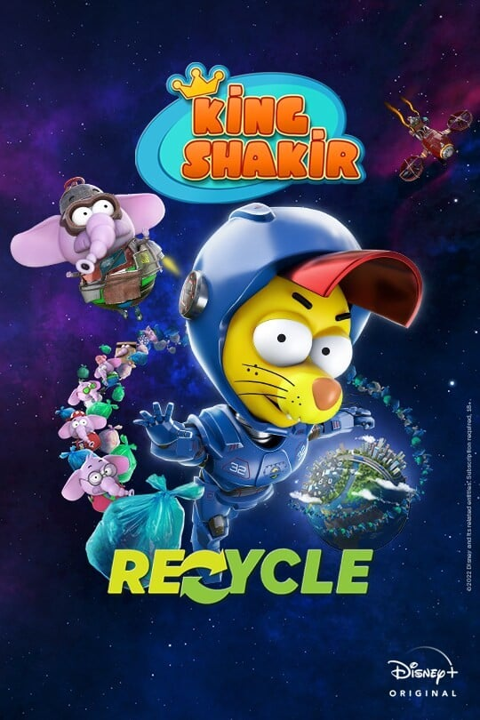
10.0「King Shakir Recycle」（2023）是一部OVA/WEB，由Berk Tokay执导，类型包括WEB、欧美，评分10.0，在本站出现在3份片单中，例如高分美漫与动画电影、高分OVA与WEB动画、原创动画推荐。页面只做片单对照，不提供播放。Scientists trying to solve the environmental crisis of pollution devise a way to send the collected garbage into space v。
#3青蛙和蟾蜍
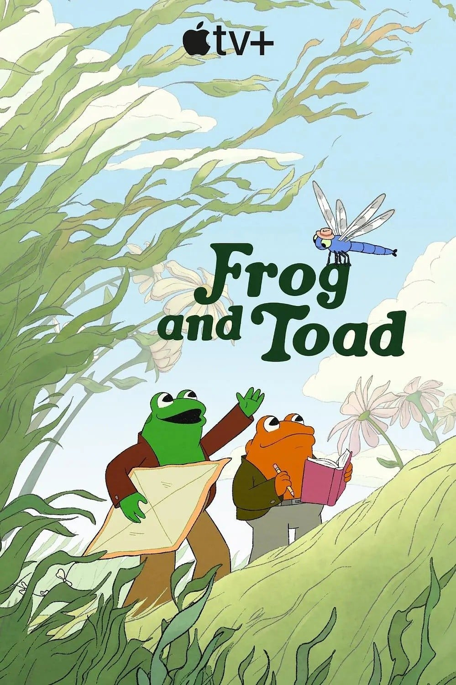
10.0「青蛙和蟾蜍」（2023）是一部OVA/WEB，类型包括美国、加拿大、欧美，评分10.0，在本站出现在3份片单中，例如高分美漫与动画电影、高分OVA与WEB动画、原创动画推荐。页面只做片单对照，不提供播放。Frog and Toad are not at all alike. Frog likes new adventures. Toad likes the comforts of home. Yet despite their differ。
#4小精灵：魔怪的秘密
「小精灵：魔怪的秘密」（2023）是一部OVA/WEB，类型包括欧美、辱华、WEB，评分10.0，在本站出现在3份片单中，例如高分美漫与动画电影、高分OVA与WEB动画、原创动画推荐。页面只做片单对照，不提供播放。The adventures of Sam Wing in his youth and Gizmo the Mogwai in China.。
#5人力资源 第二季
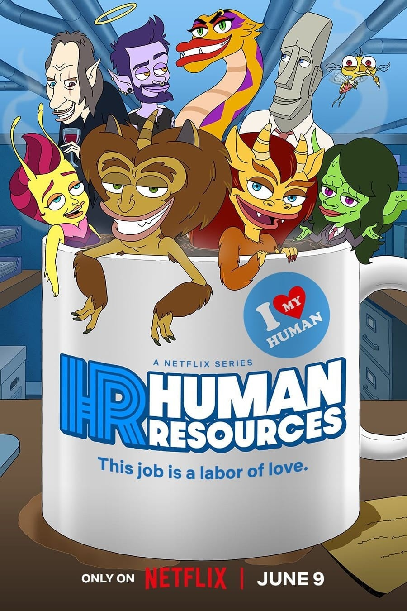
10.0「人力资源 第二季」（2023）是一部OVA/WEB，类型包括WEB、欧美，评分10.0，在本站出现在3份片单中，例如高分美漫与动画电影、高分OVA与WEB动画、原创动画推荐。页面只做片单对照，不提供播放。From one-night stands to office romances, the creatures working at Human Resources have their hands — and claws — full w。
#6史努比秀 第三季
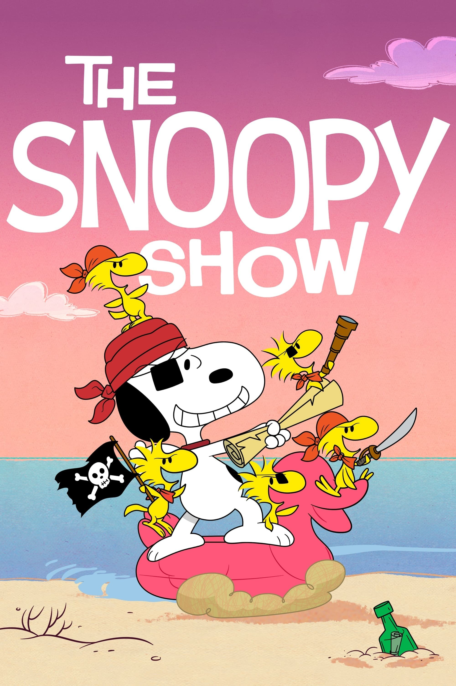
10.0「史努比秀 第三季」（2023）是一部OVA/WEB，类型包括欧美、WEB，评分10.0，在本站出现在3份片单中，例如高分美漫与动画电影、高分OVA与WEB动画、原创动画推荐。页面只做片单对照，不提供播放。史努比秀 第三季。2023。欧美、WEB。
#7十岁的汤姆 第二季
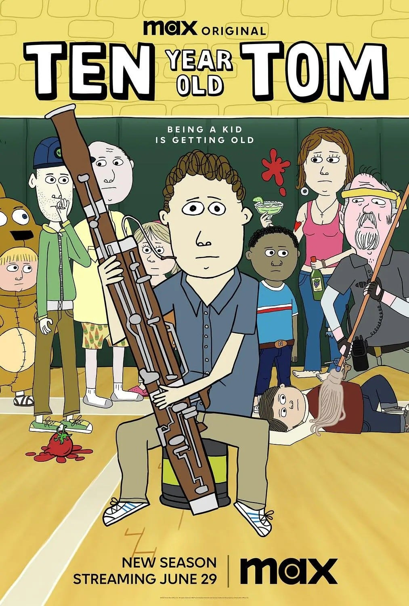
10.0「十岁的汤姆 第二季」（2023）是一部OVA/WEB，类型包括WEB、欧美，评分10.0，在本站出现在3份片单中，例如高分美漫与动画电影、高分OVA与WEB动画、原创动画推荐。页面只做片单对照，不提供播放。十岁的汤姆 第二季。2023。WEB、欧美。
#8天子传奇：洪武大帝
「天子传奇：洪武大帝」（2026）是一部OVA/WEB，由庄易执导，类型包括元气蛙动漫、WEB、中国，评分10.0，在本站出现在5份片单中，例如2026年夏季新番推荐、2026年新番总表、高分国漫推荐。页面只做片单对照，不提供播放。元族玄术铁骑暴政压汉，生灵涂炭！天翔五灵降世，刘伯温寻乞丐朱元璋为真龙，十三翼与江湖疯抢神器，乱世争霸开启！。
#9守护少年时
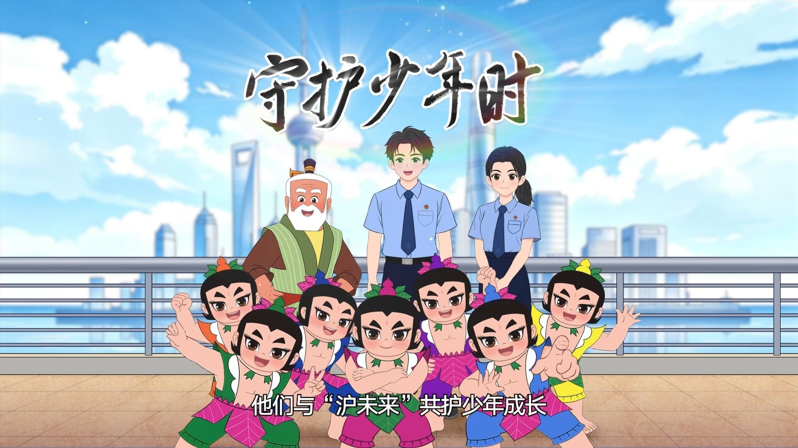
10.0「守护少年时」（2026）是一部OVA/WEB，由侯涛执导，类型包括WEB、中国，评分10.0，在本站出现在5份片单中，例如2026年春季新番推荐、2026年新番总表、高分国漫推荐。页面只做片单对照，不提供播放。今年是未成年人检察工作创建40周年，也是葫芦兄弟动画首播40周年，上海检察与《葫芦兄弟》IP独家授权运营方上影元合作推出“葫芦兄弟X沪未来”IP联名微动画《守护少年时》。看检察官和葫芦兄弟如何破解蝎子精蛇精的网络陷阱，守护未成年人健康成长。
#10如福侍卫队
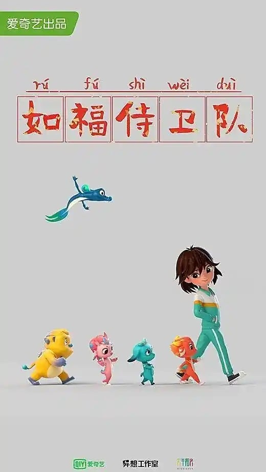
10.0「如福侍卫队」（2023）是一部OVA/WEB，类型包括WEB、国产，评分10.0，在本站出现在3份片单中，例如高分国漫推荐、高分OVA与WEB动画、原创动画推荐。页面只做片单对照，不提供播放。蹲守故都古籍图书馆屋檐多年的五只脊兽，因为战斗失利，坠入都市。九岁女孩徐菲菲，意外成为五个脊兽的新主人，组成如福侍卫队。菲菲和如福侍卫队，一边解密如福的神秘使命，一边尝试解决身边都市和社区的各种奇葩小问题。哪里有需要，如福就出现哪里，学校，。
#11Acorda, Carlo!
「Acorda, Carlo!」（2023）是一部OVA/WEB，类型包括WEB、空，评分10.0，在本站出现在2份片单中，例如高分OVA与WEB动画、原创动画推荐。页面只做片单对照，不提供播放。A 7-year-old boy goes to sleep for 22 years and wakes up to learn his best friends have become serious adults. With his 。
#12水晶岛守卫者
「水晶岛守卫者」（2025）是一部OVA/WEB，由柳瑟基执导，类型包括法国、中国、WEB，评分10.0，在本站出现在3份片单中，例如高分国漫推荐、高分OVA与WEB动画、原创动画推荐。页面只做片单对照，不提供播放。莎莎（一只猫）和米乐（一个男孩）发现了自己能够变身成为英雄的命运。猫咪莎莎和男孩儿米乐意外地闯入了彼此的生活，他们不仅要应对作为中学生的日常挑战，还要肩负起一个英雄般的使命——保护他们的家园水晶岛免受邪恶猫咪卢卡的威胁。这对搭档的生活充满了。
#13世界很坏我不坏 第一季
「世界很坏我不坏 第一季」（2023）是一部OVA/WEB，类型包括欧美、意大利、WEB，评分9.0，在本站出现在3份片单中，例如高分美漫与动画电影、高分OVA与WEB动画、原创动画推荐。页面只做片单对照，不提供播放。一位老友归来，零水垢想帮他重新找回自己在世界上的位置。但怎么做才是正确的呢？。
#14米菲兔新系列
「米菲兔新系列」（2023）是一部OVA/WEB，类型包括WEB、兔，评分9.0，在本站出现在2份片单中，例如高分OVA与WEB动画、原创动画推荐。页面只做片单对照，不提供播放。米菲兔新系列。2023。WEB、兔。
#15浪客剑心 追忆篇
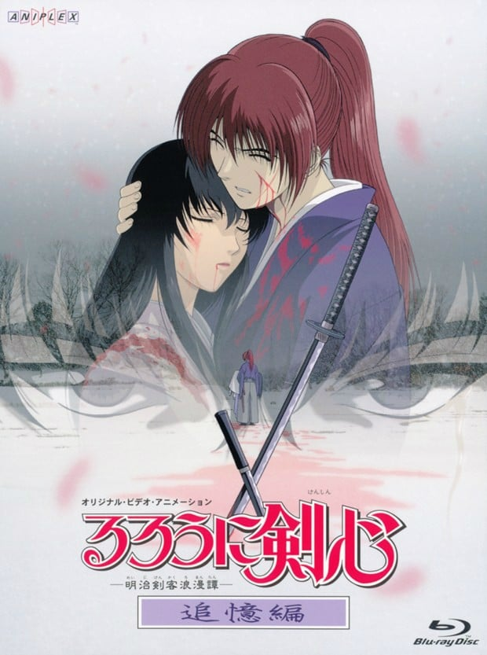
8.9「浪客剑心 追忆篇」（1999）是一部OVA/WEB，由古橋一浩执导，制作スタジオディーン，类型包括历史、战斗、恋爱，评分8.9，在本站出现在6份片单中，例如高分日漫推荐、高分OVA与WEB动画、高分热血动漫推荐。页面只做片单对照，不提供播放。幕府时代末期，外忧内患，山河动荡，百姓生活困苦，且生命时刻受到威胁。少年心太因其善良纯洁之心感动飞天御剑流高手比古清十郎，被其收入门下学习剑法，更名剑心。 在国家危难之际，年轻的剑心怀揣改变时代的梦想下山，加入奇兵队，日后更被桂小五郎纳入麾。
#16银河英雄传说
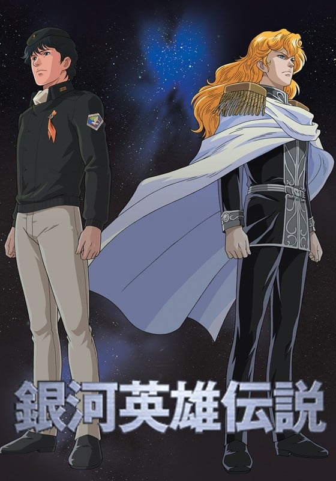
8.8「银河英雄传说」（1988）是一部OVA/WEB，制作キティ・フィルム三鷹スタジオ(1～3期)，类型包括科幻、战争，评分8.8，在本站出现在5份片单中，例如高分日漫推荐、高分OVA与WEB动画、高分科幻动漫推荐。页面只做片单对照，不提供播放。简介包含剧情梗概，如果担心剧透，请谨慎点击右下角“more...”按钮展开简介 《银河英雄传说》（OVA版）改编自日本小说家田中芳树的同名长篇太空歌剧小说，首播于1988年，分为四期动画共计110集。 故事的时间设定在距今约一千六百年后，而。
#17机动战士高达0080 口袋里的战争
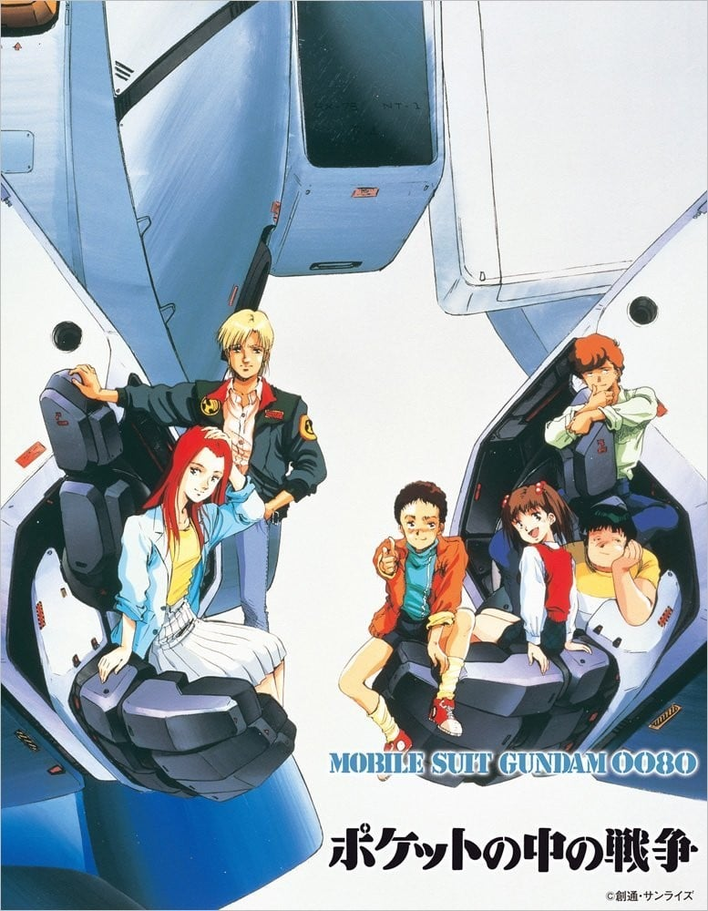
8.6「机动战士高达0080 口袋里的战争」（1989）是一部OVA/WEB，由高山文彦执导，制作Sunrise，类型包括战争、科幻、机战，评分8.6，在本站出现在6份片单中，例如高分日漫推荐、高分OVA与WEB动画、高分热血动漫推荐。页面只做片单对照，不提供播放。【时代背景】 U.C.0079年12月，由吉恩公国挑起的一年战争已进入最后的阶段，人们都已看到吉恩的日渐式微，也盼望着和谈的早日到来。然而，一部分吉恩军的顽固派，仍然执迷不悟地坚持着与联邦军的战斗。 这时的联邦军，除了加紧展开最终的大攻势，。
#18英雄联盟：双城之战
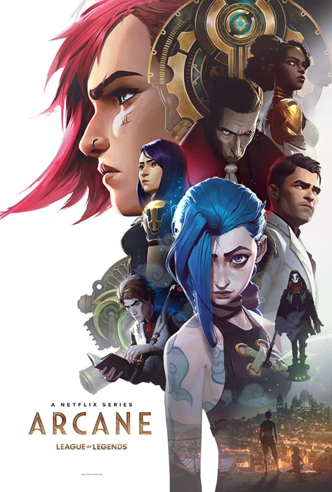
8.4「英雄联盟：双城之战」（2021）是一部OVA/WEB，由Pascal Charrue执导，制作Riot Games，类型包括战斗、奇幻、百合，评分8.4，在本站出现在8份片单中，例如高分美漫与动画电影、高分OVA与WEB动画、高分热血动漫推荐。页面只做片单对照，不提供播放。《英雄联盟：双城之战》是英雄联盟官方动画剧集，讲述的是在充满蒸汽朋克气息的乌托邦-皮尔特沃夫和由化学品驱动的地下城-祖安中，蔚和金克丝两姐妹，她们在一场激烈的冲突后发现两个人站在了彼此的对立面。她们从此分开，走上不同的道路，朝着不同的命运终。
#19赛博浪客
「赛博浪客」（2022）是一部OVA/WEB，由今石洋之执导，制作TRIGGER，类型包括赛博朋克、科幻、战斗，评分8.3，在本站出现在7份片单中，例如高分日漫推荐、高分OVA与WEB动画、高分热血动漫推荐。页面只做片单对照，不提供播放。《赛博朋克：浪客》是与《赛博朋克2077》共享同一世界观的原创动画项目，为一部十集的独立故事剧集，讲述了一名街头小子尝试在技术高度繁荣、人体改造盛行的未来城市中挣扎求生的故事。冒着失去一切的风险，他选择成为一名浪客 —— 游走于法外的雇佣兵。
#20FLCL
「FLCL」（2000）是一部OVA/WEB，由鶴巻和哉执导，制作Production I.G，类型包括科幻、奇幻、战斗，评分8.3，在本站出现在7份片单中，例如高分日漫推荐、高分OVA与WEB动画、高分热血动漫推荐。页面只做片单对照，不提供播放。近未来的日本，一个叫做“疏濑”的城市中，市民过着平凡的生活，只不过，在城市的一角，山冈上面耸立着医疗机器制造厂建造的外形酷似熨斗的工厂，每天固定时刻，那个工厂都像刚烫完东西一样散发出大量蒸汽。 小学六年级学生直太，与高中女生真见美，直太那个。
#21我的三体 章北海传
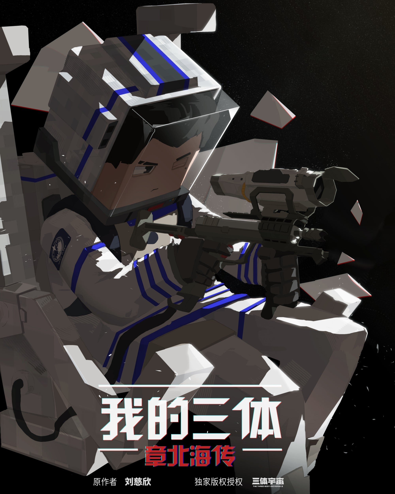
8.3「我的三体 章北海传」（2020）是一部OVA/WEB，由神游八方（李圳宜）执导，类型包括科幻、战斗、热血，评分8.3，在本站出现在6份片单中，例如高分国漫推荐、高分OVA与WEB动画、高分热血动漫推荐。页面只做片单对照，不提供播放。故事发生在从近未来到两百年后的历史跨度上，地球文明被三体用一种叫做智子的超级科技锁死，基础研究因而停滞不前。但人类仍然需要在此基础上不断前进来抵御即将到来的三体人的进攻，守卫自己的家园和人类文明。在更广大的基础上，三体文明和人类文明都是黑暗。
#22水星领航员 The AVVENIRE
「水星领航员 The AVVENIRE」（2015）是一部OVA/WEB，由佐藤順一执导，制作TYO Animations[ゆめ太カンパニー]，类型包括治愈、日常、百合，评分8.3，在本站出现在7份片单中，例如高分日漫推荐、高分OVA与WEB动画、高分治愈系动漫推荐。页面只做片单对照，不提供播放。TVアニメ放送開始10周年記念プロジェクト『蒼のカーテンコール』のひとつとしてスタート 9月26日(土)に公開される『ARIA The AVVENIRE』は過去にアニメ化されなかった原作からの２エピソードと、今回このプロジェクトのために原作。
#23皇家国教骑士团 OVA
「皇家国教骑士团 OVA」（2006）是一部OVA/WEB，由ところともかず（#1 - #4）执导，制作サテライト（#1 - #4）→MADHOUSE（#5 - #7）→グラフィニカ（#8-10），类型包括战争、战斗、奇幻，评分8.2，在本站出现在6份片单中，例如高分日漫推荐、高分OVA与WEB动画、高分热血动漫推荐。页面只做片单对照，不提供播放。在一次对治某村庄食尸鬼的超自然事件时，平凡女警女警西洛斯·维多利亚遭到袭击，奄奄一息，关键时刻吸血鬼杀手阿尔卡特出现，铲除食尸鬼，并将西洛斯变成了吸血鬼的一员，她顺理成章也接触到了阿尔卡特背后的神秘组织，即为维护英国基督新教、与反基督怪物作。
#24物语系列 外传季&怪物季
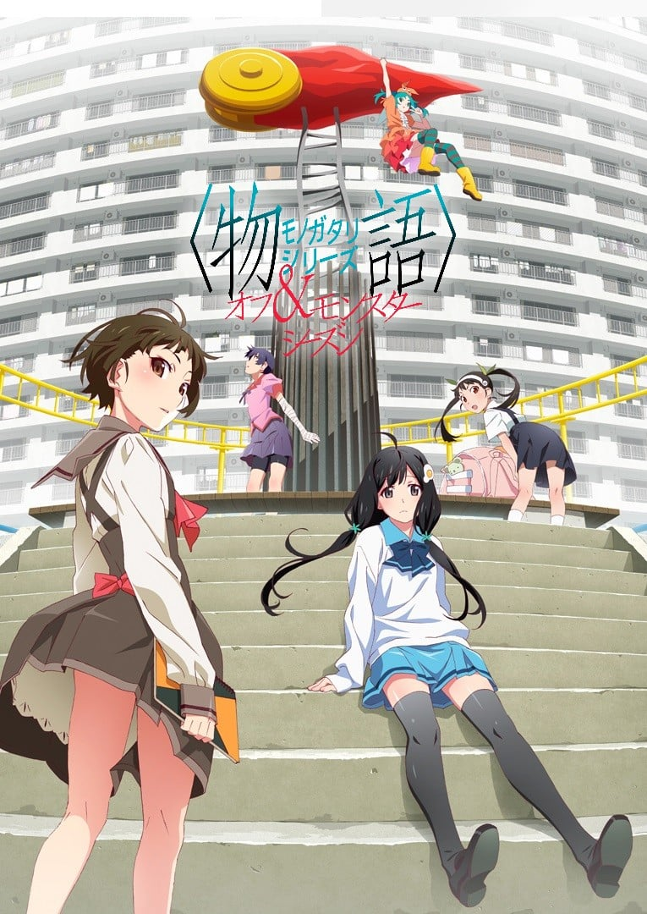
8.2「物语系列 外传季&怪物季」（2024）是一部OVA/WEB，由吉澤翠执导，制作SHAFT，类型包括奇幻、恋爱、校园，评分8.2，在本站出现在8份片单中，例如高分日漫推荐、高分OVA与WEB动画、高分恋爱动漫推荐。页面只做片单对照，不提供播放。高中毕业后，阿良良木历的故事结束了。 这次真的结束了。 但是在历的帮助下，她们的故事还没有结束。 这是在青春中挣扎的她们的前日谭，亦或是后日谈。
#25猎人 OVA1 友客鑫市完结篇
「猎人 OVA1 友客鑫市完结篇」（2002）是一部OVA/WEB，制作日本アニメーション，类型包括热血、战斗、奇幻，评分8.2，在本站出现在6份片单中，例如高分日漫推荐、高分OVA与WEB动画、高分热血动漫推荐。页面只做片单对照，不提供播放。富樫義博が描く大人気コミックを原作とするＴＶアニメーション作品。主人公の少年・ゴンは、ある日、父親ジンの弟子であるというハンター・カイと出会う。そして、死んでいると聞かされていた父が実は超一流のハンターとして生きていることを知る。自分も父親。
#26攻壳机动队 STAND ALONE COMPLEX 笑面男
「攻壳机动队 STAND ALONE COMPLEX 笑面男」（2005）是一部OVA/WEB，制作Production I.G，类型包括科幻、赛博朋克、战斗，评分8.2，在本站出现在6份片单中，例如高分日漫推荐、高分OVA与WEB动画、高分热血动漫推荐。页面只做片单对照，不提供播放。2024年，发生了MM制造公司"濑良野基因混合社"的社长绑架案。在收取赎金现场出现的凶犯，居然让自己脸部在所有监视纪录上留下了贴着笑面标志的影像后成功脱逃。案发后六年，"笑面男"的巧妙陷阱再度出现在网络社会中... 封印已久的笑面男苏醒了，。
#27机动警察 NEW OVA
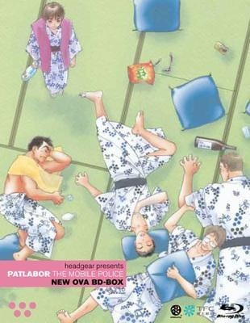
8.2「机动警察 NEW OVA」（1990）是一部OVA/WEB，由吉永尚之执导，制作Sunrise，类型包括科幻、机战、日常，评分8.2，在本站出现在7份片单中，例如高分日漫推荐、高分OVA与WEB动画、高分治愈系动漫推荐。页面只做片单对照，不提供播放。設定・時間軸共にTVシリーズの延長にある作品。47話での放送打ち切りに伴いはみ出したTVシリーズの最終章である、グリフォン編の完結編部分と、1話完結のオリジナル・エピソードから成る。その中で12話の「ふたりの軽井沢」はダイアログの収録を先に。
#28小魔女DoReMi 童年秘密篇
「小魔女DoReMi 童年秘密篇」（2004）是一部OVA/WEB，制作東映アニメーション，类型包括搞笑、校园、奇幻，评分8.2，在本站出现在6份片单中，例如高分日漫推荐、高分OVA与WEB动画、高分校园动漫推荐。页面只做片单对照，不提供播放。在故事完结篇后所推出来的OVA。以Mo~tto! 小魔女DoReMi为蓝本，讲述穿插于第三部中的轶事。故事主要围绕在DoReMi、羽月、小爱、音符、小桃子、以及其他同学、家人和朋友的小故事。
#29超辉夜姬！
「超辉夜姬！」（2026）是一部OVA/WEB，由山下清悟执导，制作スタジオコロリド，类型包括百合、音乐、科幻，评分8.1，在本站出现在8份片单中，例如2026年新番总表、高分日漫推荐、高分OVA与WEB动画。页面只做片单对照，不提供播放。在梦想与希望汇聚的虚拟空间，少女们相遇，以及离别的舞台，就此拉开帷幕—— 在近未来的时代，酒寄彩叶是就读于东京重点高中的17岁女高中生，她同时兼顾打工与学业，每天忙得不可开交。月见八千代是互联网虚拟空间的管理员兼超人气主播，彩叶平日透过观看。
#30飞跃巅峰！
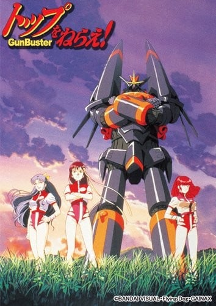
8.1「飞跃巅峰！」（1988）是一部OVA/WEB，由庵野秀明执导，制作GAINAX，类型包括科幻、机战、热血，评分8.1，在本站出现在7份片单中，例如高分日漫推荐、高分OVA与WEB动画、高分热血动漫推荐。页面只做片单对照，不提供播放。21世纪人类开始开发宇宙。但是宇宙生物群(通称宇宙怪兽, STMC)，一种以恒星作载体繁殖的生物来袭，使人类文明受到重大威胁。 为了对抗宇宙怪兽，机械人兵器和宇宙战舰持续开发中，由地球上的机械人训练学校找出优胜的驾驶员控制。 2015年，在。
#31凡人修仙传 第四季
「凡人修仙传 第四季」（2025）是一部OVA/WEB，由王裕仁执导，制作原力动画，类型包括战斗、热血、治愈，评分8.1，在本站出现在6份片单中，例如高分国漫推荐、高分OVA与WEB动画、高分热血动漫推荐。页面只做片单对照，不提供播放。外海风云篇（125-152集） 韩立于外海洞府闭关，公孙杏等人为寻灵药误闯其洞府，危急时刻被韩立所救。韩立得知外海形势大变，出关再寻突破机缘。探寻外海过程中，韩立再遇故人、潜入妖兽巢穴、智夺风雷翅、激战温天仁。在韩立反制温天仁之时，众人遭遇。
#32六样情
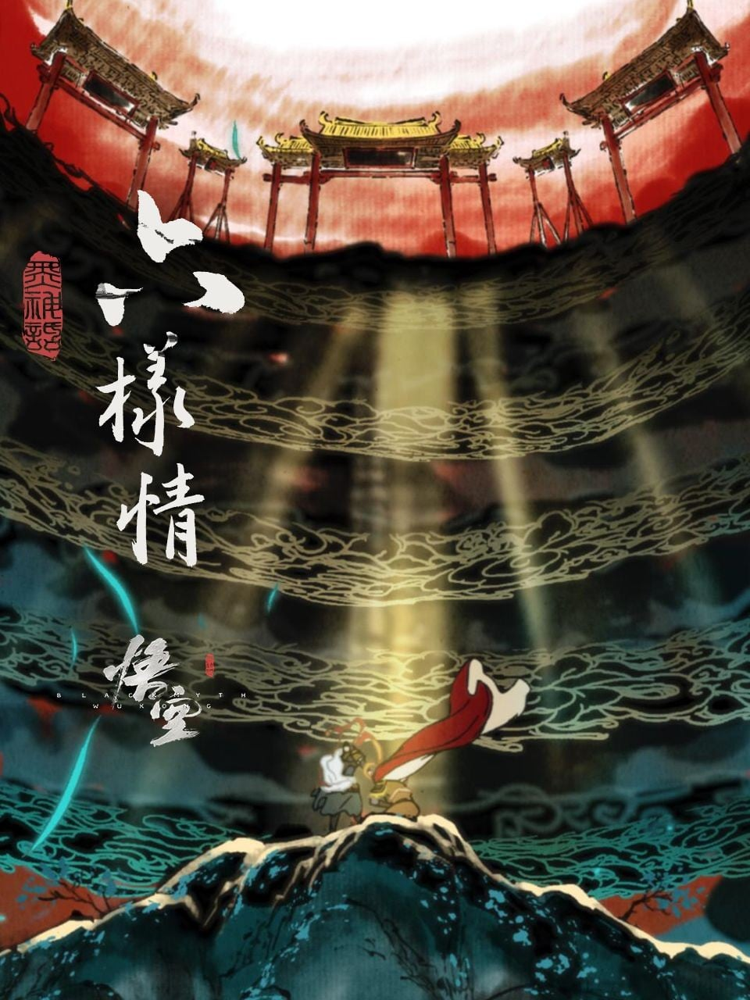
8.1「六样情」（2024）是一部OVA/WEB，由林哲（《看见》）执导，制作FLiiiP Design（《看见》），类型包括奇幻、战斗，评分8.1，在本站出现在6份片单中，例如高分国漫推荐、高分OVA与WEB动画、高分热血动漫推荐。页面只做片单对照，不提供播放。六般体相六般兵，六样形骸六样情。六恶六根缘六欲，六门六道赌输赢。《六样情》是游戏科学携手中国多个顶尖动画团队，为《黑神话：悟空》精心制作的六部动画短片，对应游戏的六个章节。
#33水星领航员 OVA ～ARIETTA～
「水星领航员 OVA ～ARIETTA～」（2007）是一部OVA/WEB，由佐藤順一执导，制作ハルフィルムメーカー[Hal Film Maker]，类型包括治愈、日常、奇幻，评分8.1，在本站出现在7份片单中，例如高分日漫推荐、高分OVA与WEB动画、高分治愈系动漫推荐。页面只做片单对照，不提供播放。梦见成为Prima的灯里，开始对自己早已熟悉了的日常风景开始感到困惑不安。即使梦醒之后这种不安仍然没有消除，灯里的脑子里慢慢出现了这样一个疑问：“为什么艾莉西亚会选择自己（进ARIA Company）呢？”为了解答灯里梦中的疑问，艾莉西亚开。
#34攻壳机动队 S.A.C. 2nd GIG 个别的十一人
「攻壳机动队 S.A.C. 2nd GIG 个别的十一人」（2006）是一部OVA/WEB，制作Production I.G，类型包括科幻、战斗、赛博朋克，评分8.1，在本站出现在6份片单中，例如高分日漫推荐、高分OVA与WEB动画、高分热血动漫推荐。页面只做片单对照，不提供播放。间指向了2030年，自从爆发第四次世界大战以来，各国的政治力量发生了根本性的变化，由于战乱不断，激增的难民终于获准进入日本，以填补因经济不断发展造成的劳动力短缺。而就在此时，一个自称“个别的十一人”的恐怖组织展开了一系列极端袭击事件，难民营。
#35怪医黑杰克 OVA
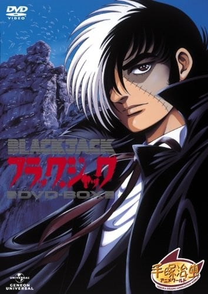
8.1「怪医黑杰克 OVA」（1993）是一部OVA/WEB，由出﨑統执导，制作手塚プロダクション，类型包括奇幻、剧情，评分8.1，在本站出现在5份片单中，例如高分日漫推荐、高分OVA与WEB动画、高分奇幻冒险动漫。页面只做片单对照，不提供播放。「ブラック・ジャック」の原作各エピソードをモチーフにしながら、 新たな作品として作り出されたオリジナル・ビデオ・アニメーションシリーズ。 手塚治虫の同名人気マンガをモチーフにしながら、しかし原作の設定だけを流用して新たな作品を作り出したオリ。
#36百变之星 不死鸟传说 ～蕾拉・汉密尔顿物语～
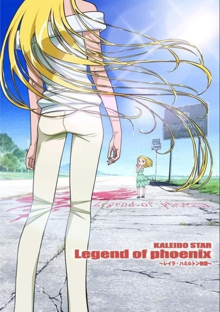
8.1「百变之星 不死鸟传说 ～蕾拉・汉密尔顿物语～」（2006）是一部OVA/WEB，由佐藤順一执导，制作GONZO，类型包括百合、治愈、运动，评分8.1，在本站出现在7份片单中，例如高分日漫推荐、高分OVA与WEB动画、高分热血动漫推荐。页面只做片单对照，不提供播放。内容相当于TV版第53话，主角为蕾拉，描写蕾拉面对自我的心路历程。
#37勇者王GaoGaiGar Final
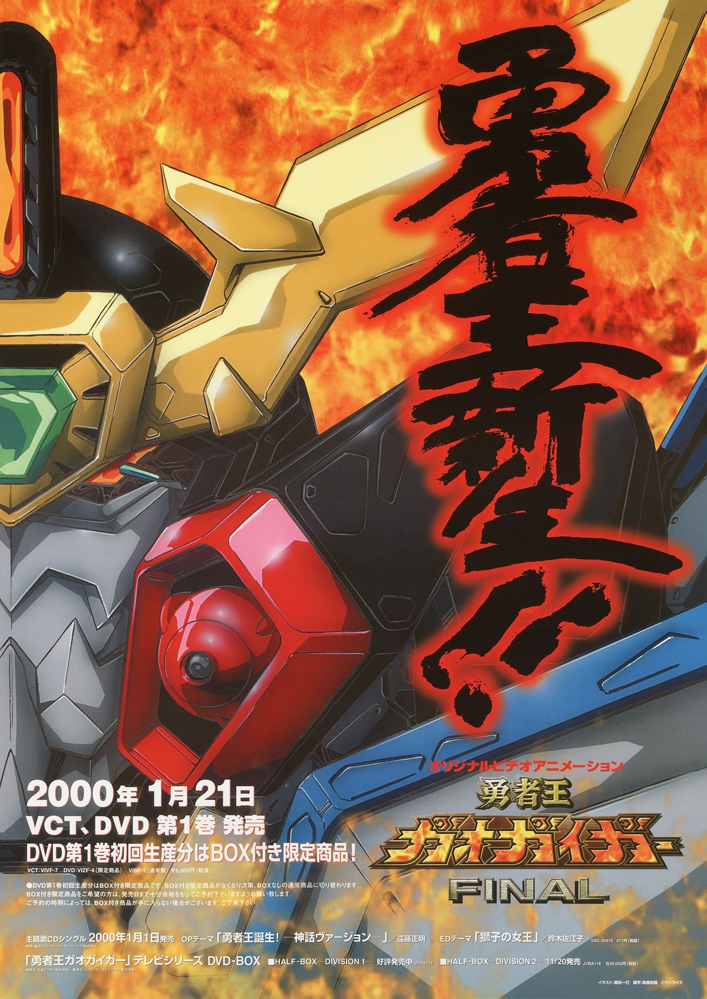
8.1「勇者王GaoGaiGar Final」（2000）是一部OVA/WEB，制作Sunrise，类型包括热血、科幻、机战，评分8.1，在本站出现在5份片单中，例如高分日漫推荐、高分OVA与WEB动画、高分热血动漫推荐。页面只做片单对照，不提供播放。在动画版故事结束的2年后，作为保护地球对抗外星威胁者的GGG对犯罪组织バイオネット进行追查，但追查的同时GGG卷入了Q零件（Qパーツ）的秘密，此时为了重建三重连太阳系而生的索路11游星主抢走Q零件并成为GGG新的敌人，为了阻止游星主的意图，。
#38飞跃巅峰2！
「飞跃巅峰2！」（2004）是一部OVA/WEB，由鶴巻和哉执导，制作GAINAX，类型包括热血、百合、科幻，评分8.0，在本站出现在7份片单中，例如高分日漫推荐、高分OVA与WEB动画、高分热血动漫推荐。页面只做片单对照，不提供播放。离家出走，单身来到都会的少女—诺诺。 她有个十分雄伟的梦想，那就是成为宇宙驾驶员。 然而现实却与她的梦想背道而驰，来到都会的她每天只能在宇宙港附近的小餐厅打工。 某日，当她被老顾客捉弄时，凑巧来到店里的「真正的宇宙驾驶员」（Topless）。
#39日本动画（人）博览会
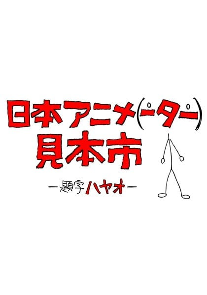
8.0「日本动画（人）博览会」（2014）是一部OVA/WEB，制作khara，类型包括短片、Khara、WEB，评分8.0，在本站出现在4份片单中，例如高分日漫推荐、高分OVA与WEB动画、原创动画推荐。页面只做片单对照，不提供播放。オリジナル企画・スピンオフ企画・プロモーション映像・MusicPV・VJFilmetc... ジャンルを問わず愛と勢いで創りきる数々のオムニバスアニメーション 期間、予算等を制限した中での企画開発、R＆D、人材育成、自由な創作の場として こ。
#40黑客帝国动画版
「黑客帝国动画版」（2003）是一部OVA/WEB，制作STUDIO 4℃，类型包括科幻，评分8.0，在本站出现在5份片单中，例如高分美漫与动画电影、高分OVA与WEB动画、高分科幻动漫推荐。页面只做片单对照，不提供播放。《黑客帝国动画版》由9段以《黑客帝国》系列电影世界观为基础生发出的短片组成，各篇的角度与风格各异，制作班底汇聚了日本、美国、韩国三地的动画精英。《机器复兴》讲述了MATRIX的历史。机器人不堪人类恶劣对待，终于反抗并将人类化为能源。《少年故。
#41画江湖之不良人 第六季
「画江湖之不良人 第六季」（2023）是一部OVA/WEB，制作若森数字，类型包括武侠、战斗、热血，评分8.0，在本站出现在5份片单中，例如高分国漫推荐、高分OVA与WEB动画、高分热血动漫推荐。页面只做片单对照，不提供播放。监国独揽朝政，漠北大军来势汹汹，岐国独木难支，且看李星云如何带领不良人绝地反击！。
#42幸运星 OVA
「幸运星 OVA」（2008）是一部OVA/WEB，由武本康弘执导，制作京都动画，类型包括搞笑、日常、校园，评分7.9，在本站出现在8份片单中，例如高分OVA与WEB动画、高分治愈系动漫推荐、高分校园动漫推荐。页面只做片单对照，不提供播放。2007年的热门动画《幸运星》以OVA形式推出了续篇。御宅族女孩泉此方、性格迥异的柊家姐妹、经常考虑问题不周到的高良美幸，四位女孩又要开始新的故事了。 小狗Cherry的奇怪举动搞得大家哭笑不得；与老师一起玩网络游戏引出了话题大讨论；姐姐柊。
#43机动战士高达 第08MS小队
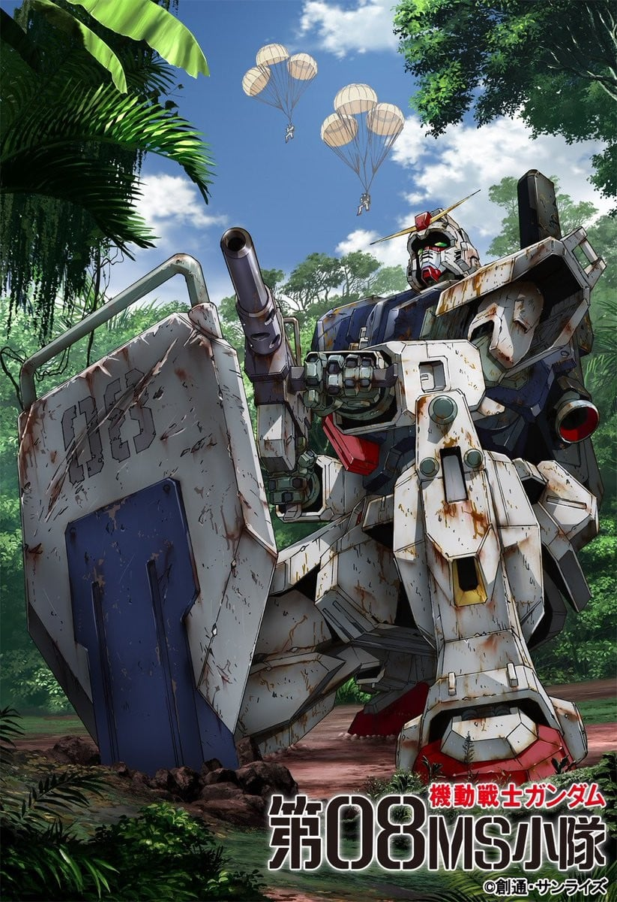
7.9「机动战士高达 第08MS小队」（1996）是一部OVA/WEB，由神田武幸(1-5)执导，制作Sunrise，类型包括科幻、机战、战争，评分7.9，在本站出现在5份片单中，例如高分OVA与WEB动画、高分恋爱动漫推荐、高分科幻动漫推荐。页面只做片单对照，不提供播放。地球联邦军MS驾驶员天田士郎（シロー·アマダ）在奉派前往东亚战线报到时，与吉恩军部队发生遭遇战，与敌方驾驶员一同遇险，为了生存而与敌驾驶员爱娜·萨哈琳（アイナ·サハリン）共同合作度过漂流期间的难关，两人间也产生了好感。但配属到东亚战线之后又。
#44机动战士高达 THE ORIGIN
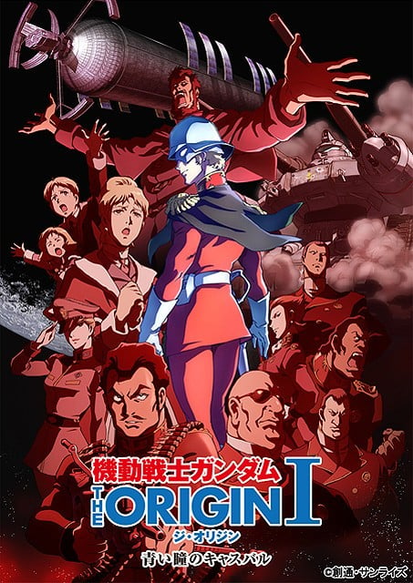
7.9「机动战士高达 THE ORIGIN」（2015）是一部OVA/WEB，由今西隆志(1-3)执导，制作Sunrise，类型包括机战、科幻、战争，评分7.9，在本站出现在5份片单中，例如高分OVA与WEB动画、高分热血动漫推荐、高分科幻动漫推荐。页面只做片单对照，不提供播放。1979年TV放送された、日本ロボットアニメの金字塔『機動戦士ガンダム』。そのキャラクターデザイン・アニメーションディレクターの安彦良和が手掛けた、累計発行部数1,000万部を誇る大ヒットコミックス『機動戦士ガンダム THE ORIGIN』。
#45高分少女 EXTRA STAGE
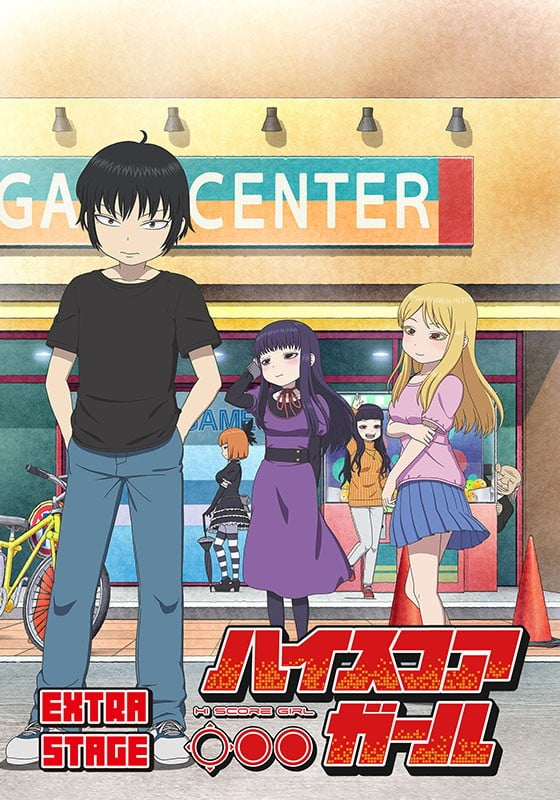
7.9「高分少女 EXTRA STAGE」（2019）是一部OVA/WEB，由山川吉樹执导，制作J.C.STAFF，类型包括恋爱、搞笑、校园，评分7.9，在本站出现在8份片单中，例如高分OVA与WEB动画、高分恋爱动漫推荐、高分治愈系动漫推荐。页面只做片单对照，不提供播放。一切都是为了重要的人…… 为了让“此刻”闪耀，不是用语言而是用拳头说话。 青春的游戏三番胜负。 来吧，堂堂正正地一决胜负吧！。
#46悠哉日常大王 Nonstop OAD
「悠哉日常大王 Nonstop OAD」（2022）是一部OVA/WEB，由川面真也执导，制作SILVER LINK.，类型包括日常、治愈、百合，评分7.9，在本站出现在6份片单中，例如高分OVA与WEB动画、高分治愈系动漫推荐、必看搞笑动漫。页面只做片单对照，不提供播放。TVアニメ3期の新作OADを収録した豪華特装版が登場！ 特装版はアニメ未収録の原作エピソードとオリジナルストーリーからなる 『のんのんびより のんすとっぷ』の第13話を収録したBlu-rayディスクを同梱！。
#47祖先大人万万岁
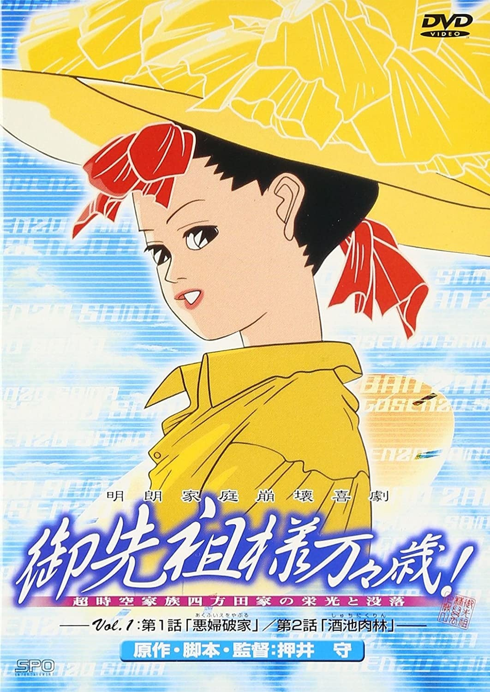
7.9「祖先大人万万岁」（1989）是一部OVA/WEB，由押井守执导，制作ぴえろ，类型包括家庭、奇幻、科幻，评分7.9，在本站出现在6份片单中，例如高分OVA与WEB动画、高分科幻动漫推荐、高分奇幻冒险动漫。页面只做片单对照，不提供播放。四方一家住在东京近郊的一幢普通的高层公寓里。无所事事且发福的上班族父亲四方田甲子国（よもた きねくに）42歳、厌恶与邻居社交的母亲四方田多美子（よもた たみこ）38歳、以及正处于青春期毛躁的儿子四方田犬丸（よもた いぬまる）17歳。生活中一。
#48圣母在上 第3季
「圣母在上 第3季」（2006）是一部OVA/WEB，由ユキヒロマツシタ(福島宏之)执导，制作Studio DEEN(スタジオディーン)，类型包括百合、治愈、校园，评分7.9，在本站出现在6份片单中，例如高分OVA与WEB动画、高分治愈系动漫推荐、高分校园动漫推荐。页面只做片单对照，不提供播放。“真好啊，可以在我们家的别墅过暑假了……”一学期终于结束了，祐巳跟祥子有机会一起度过一个暑假，真是令人期待啊……。
#49马男波杰克2
「马男波杰克2」（2015）是一部OVA/WEB，类型包括搞笑、剧情、日常，评分7.9，在本站出现在5份片单中，例如高分美漫与动画电影、高分OVA与WEB动画、高分治愈系动漫推荐。页面只做片单对照，不提供播放。波杰克的自传大获成功，并成为了热门电影主角，他已经准备好重新发力，迎接自己的事业和生活的第二春了。当然了，前提是他自己不要乱搞。
#50学问猫说历史
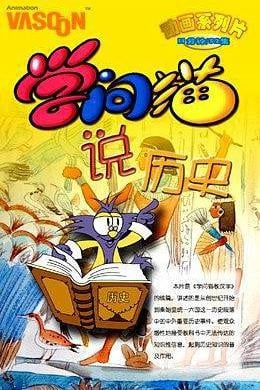
7.9「学问猫说历史」是一部OVA/WEB，由冯焕斌执导，类型包括历史、奇幻，评分7.9，在本站出现在3份片单中，例如高分OVA与WEB动画、高分奇幻冒险动漫、原创动画推荐。页面只做片单对照，不提供播放。学问猫说历史。历史、奇幻。
#51恶魔人 crybaby
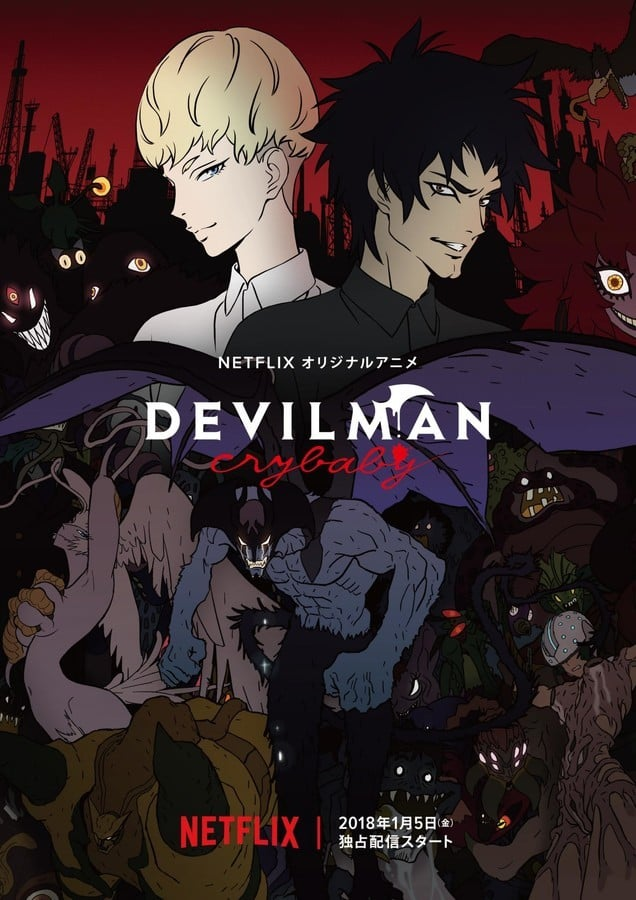
7.8「恶魔人 crybaby」（2018）是一部OVA/WEB，由湯浅政明执导，类型包括战斗、奇幻、治愈，评分7.8，在本站出现在6份片单中，例如高分OVA与WEB动画、高分热血动漫推荐、高分治愈系动漫推荐。页面只做片单对照，不提供播放。随着恶魔觉醒，人类世界陷入混乱。性格温柔的男孩与恶魔合体，在神秘好友飞鸟了的指引下，卷入一场残酷、堕落的对抗邪恶之战。
#52罗小黑战记
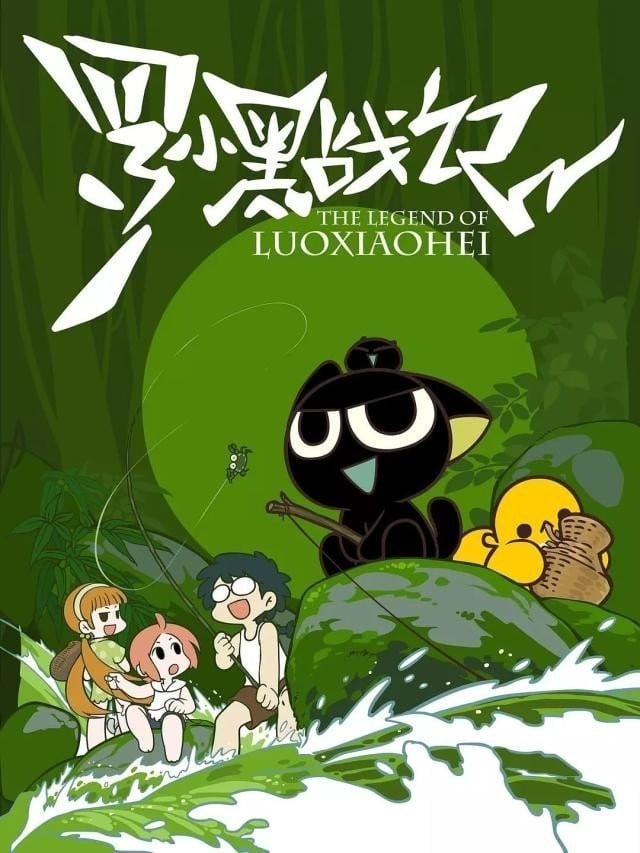
7.8「罗小黑战记」（2011）是一部OVA/WEB，由木头(MTJJ)执导，制作寒木春华，类型包括战斗、治愈、奇幻，评分7.8，在本站出现在9份片单中，例如高分国漫推荐、高分OVA与WEB动画、高分热血动漫推荐。页面只做片单对照，不提供播放。这是讲述一个少女养猫的平淡故事。 号称耗资三千元打造的中国动画癫疯之作。 故事主要讲述一个少女养猫而发生的种种离奇事件，整个作品画面风格很“中国式”。故事情节搞笑！目前正在连载中。
#53少女与战车 最终章 第1话
「少女与战车 最终章 第1话」（2018）是一部OVA/WEB，由水島努执导，类型包括百合、战斗、搞笑，评分7.8，在本站出现在7份片单中，例如高分OVA与WEB动画、高分热血动漫推荐、高分校园动漫推荐。页面只做片单对照，不提供播放。从赌上校园存亡的对战中击败大学生选拔队后，大洗女子学园战车道部的成员们终于迎来了平稳的冬日。 但随著三年生的毕业、学生会改选、新执行部开始运转等事情，小小的变化也开始了。 有一天，在她们身上发生了骚动。为了面对新出现的难题，战车道队将重新启。
#54我的三体 罗辑传
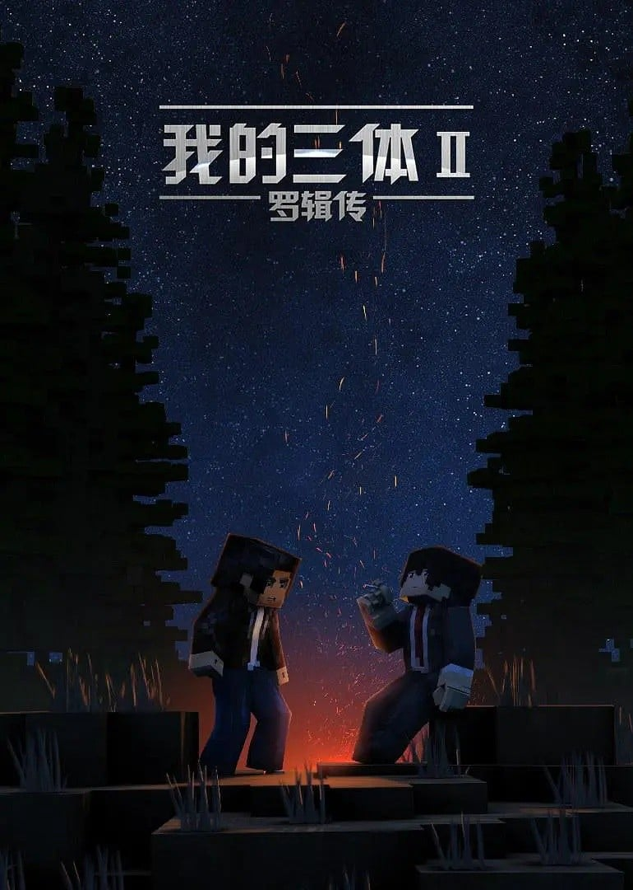
7.8「我的三体 罗辑传」（2016）是一部OVA/WEB，类型包括科幻、战斗，评分7.8，在本站出现在6份片单中，例如高分国漫推荐、高分OVA与WEB动画、高分热血动漫推荐。页面只做片单对照，不提供播放。《我的三体》讲述人类在科技水平被锁死的情况下，选出“面壁者”试图抵抗三体人的侵略的故事。 本篇 - 《我的三体 罗辑传》根据刘慈欣《三体2·黑暗森林》改编，主要陈述了罗辑线的故事，共11集。
#55罗小黑战记 众生之门篇
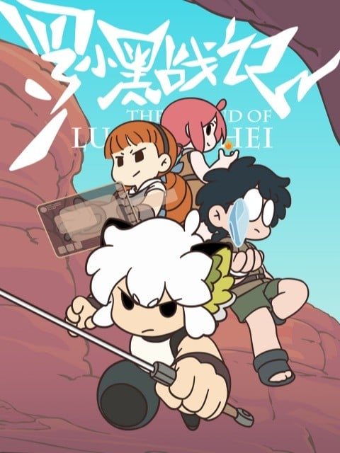
7.8「罗小黑战记 众生之门篇」（2021）是一部OVA/WEB，由阿根(李根)执导，类型包括治愈、战斗、奇幻，评分7.8，在本站出现在8份片单中，例如高分国漫推荐、高分OVA与WEB动画、高分热血动漫推荐。页面只做片单对照，不提供播放。罗小黑战记 众生之门篇。2021。治愈、战斗、奇幻。
#56×××HOLiC 笼
「×××HOLiC 笼」（2010）是一部OVA/WEB，由水島努执导，制作Production I.G，类型包括奇幻、治愈，评分7.8，在本站出现在5份片单中，例如高分OVA与WEB动画、高分治愈系动漫推荐、高分奇幻冒险动漫。页面只做片单对照，不提供播放。故事开始于四月一日君寻和壹原侑子的命运相遇。自从遇到侑子后，四月一日遇到了形形色色的人和物，发生了许许多多的好事坏事，他自己也发生了很大的改变。然而店主人侑子留下了最后的愿望之后，却消失了。于是四月一日守在店里，等待有一天与她重逢。 这十年。
#57战斗妖精雪风
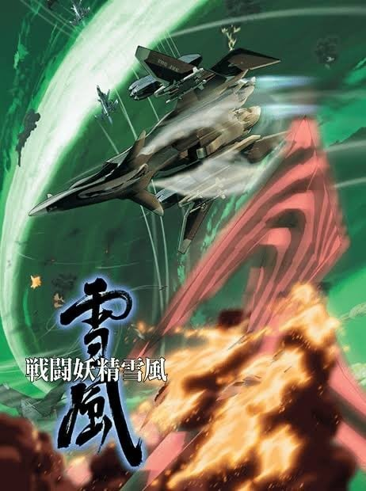
7.8「战斗妖精雪风」（2002）是一部OVA/WEB，由大倉雅彦执导，制作GONZO DIGIMATION，类型包括科幻、战争、战斗，评分7.8，在本站出现在5份片单中，例如高分OVA与WEB动画、高分热血动漫推荐、高分科幻动漫推荐。页面只做片单对照，不提供播放。在未来，南极的上空出现了被称为“通路”的蘑菇云般的时空通路，外星生物“迦姆”利用它发动了对地球的攻击。经过33年惨烈的战斗，人类终于将“迦姆”封印于道路的彼端——菲雅利星球。然后，随着迦姆的消失，人们开始渐渐淡忘了这件事，但战斗仍然在菲雅利。
#58少女与战车 最终章 第4话
「少女与战车 最终章 第4话」（2024）是一部OVA/WEB，由水島努执导，类型包括战斗、百合、热血，评分7.8，在本站出现在6份片单中，例如高分OVA与WEB动画、高分热血动漫推荐、高分校园动漫推荐。页面只做片单对照，不提供播放。半决赛・大洗女子学园 VS 继续高中的激烈赛事展开！ 然而大洗女子学园在赛事一开始便失去鮟鱇队这张王牌，陷入前所未有的困境。面对步步进逼的继续高中，余下成员能否扭转局势！？ 另一方面，黑森峰女子学园 VS 圣葛罗莉安娜女子学院的对决亦愈演愈。
#59凡人修仙传 新年番
「凡人修仙传 新年番」（2023）是一部OVA/WEB，由王裕仁执导，制作原力动画，类型包括战斗、奇幻，评分7.8，在本站出现在6份片单中，例如高分国漫推荐、高分OVA与WEB动画、高分热血动漫推荐。页面只做片单对照，不提供播放。韩立在天星城的洞府内经年累月不断苦修，终于成功结丹。出关后，韩立为炼制法宝寻访灵物天雷竹，卷入了妙音门与极阴岛、隐煞门间的争斗，终于成功炼制法宝——七十二口青竹蜂云剑。此后韩立探索遗迹时遭遇了神秘强大的前元婴期修士玄骨上人，并听到了虚天殿的。
#60超时空要塞Plus
「超时空要塞Plus」（1994）是一部OVA/WEB，由渡边信一郎执导，制作トライアングルスタッフ，类型包括科幻、机战、恋爱，评分7.8，在本站出现在5份片单中，例如高分OVA与WEB动画、高分恋爱动漫推荐、高分科幻动漫推荐。页面只做片单对照，不提供播放。勇、卡尔德和谬是从小在伊甸行星一起长大的老朋友。勇与卡尔德以航空事业为职志，谬则希望成为歌手。然而，当三人在高中毕业时，因为一次不预期的意外，使得三人就此各分东西。而谬也为此放弃了成为歌手的理想，成为一个现实的商人。 2040年，为了替换雷。
#61猎人 OVA3 贪婪之岛 完结篇
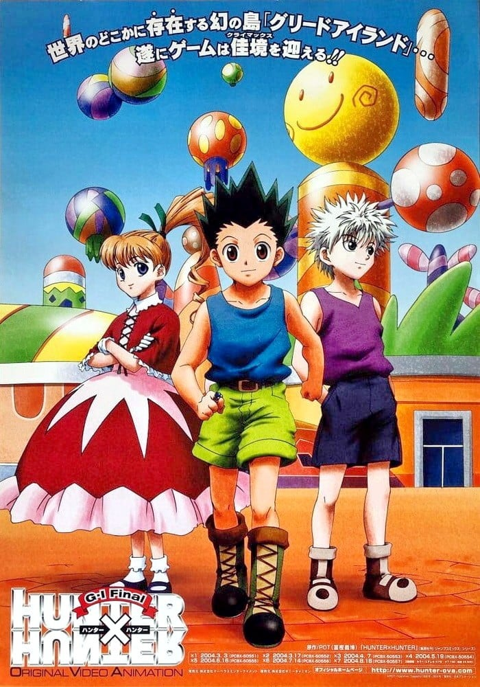
7.8「猎人 OVA3 贪婪之岛 完结篇」（2004）是一部OVA/WEB，由所俊克（79-82）执导，类型包括热血、战斗、奇幻，评分7.8，在本站出现在5份片单中，例如高分OVA与WEB动画、高分热血动漫推荐、高分奇幻冒险动漫。页面只做片单对照，不提供播放。集英社刊「週刊少年ジャンプ」連載の人気漫画を原作にしたOVA作品で、本作は伝説のハンター専用ゲーム""グリードアイランド""を舞台に展開されるシリーズとなっている。主人公は、行方不明の父親を探すためにハンターとなったゴン・フリークス。友だち。
#62银魂 〜无论什么事开始虽然重要但伸个懒腰的话也不错〜
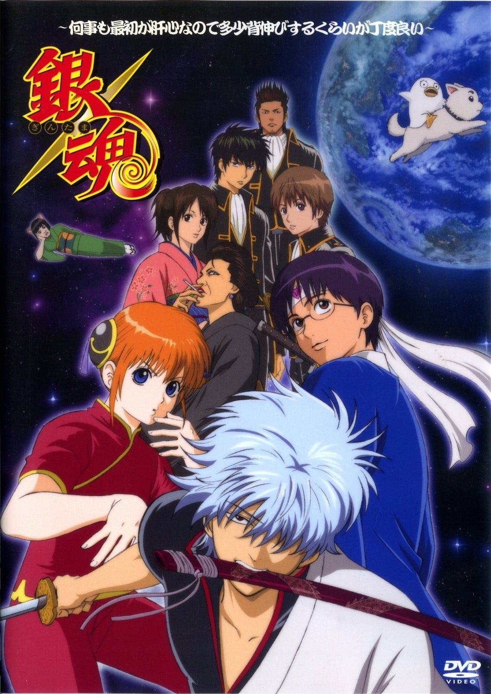
7.8「银魂 〜无论什么事开始虽然重要但伸个懒腰的话也不错〜」（2009）是一部OVA/WEB，类型包括搞笑、日常、战斗，评分7.8，在本站出现在6份片单中，例如高分OVA与WEB动画、高分热血动漫推荐、高分治愈系动漫推荐。页面只做片单对照，不提供播放。春天晴空万里的一天，去赏花的万事屋的一行人，撞上了一样到那里去赏花的真选组。在赏花地点开始了万事屋和真选组之间的争斗，由于在有平民的地方动刀不好，所以就以“打打戴戴包剪锤”决胜负。因私怨而击溃近藤的妙，一上来就相互殴打的神乐和冲田，比试酒量。
#63高智能方程式：SIN
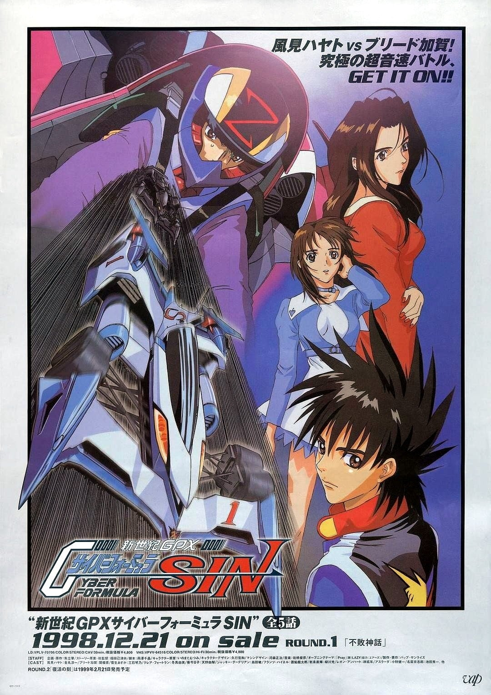
7.8「高智能方程式：SIN」（1998）是一部OVA/WEB，类型包括科幻、热血、运动，评分7.8，在本站出现在5份片单中，例如高分OVA与WEB动画、高分热血动漫推荐、高分科幻动漫推荐。页面只做片单对照，不提供播放。由于2020年名云京志郎事件，使得AOI车队被罚禁赛一年。在禁赛的期间里，加贺一直为了等待与风见隼人再度比赛而忍耐着。然而到了2022年参赛前，A98董事会却作出了取消参加高智能方程式赛事的提案，经过重回领队职位葵今日子的极力争取，才达成协。
#64蝙蝠侠：黑暗骑士归来（下）
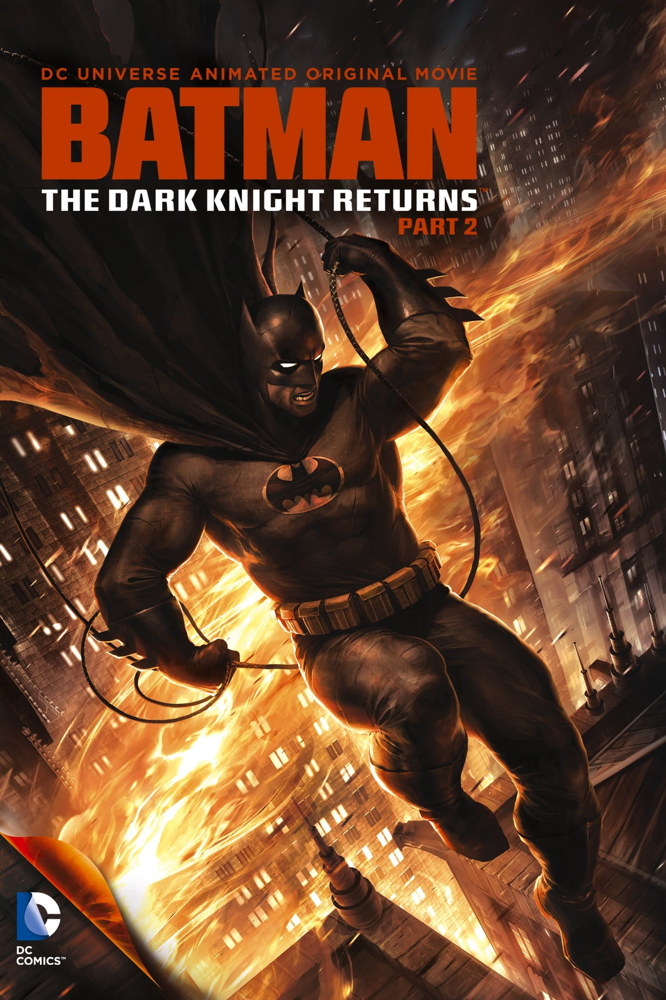
7.8「蝙蝠侠：黑暗骑士归来（下）」（2013）是一部OVA/WEB，由Jay Oliva执导，制作MOI Animation，类型包括科幻、战斗，评分7.8，在本站出现在5份片单中，例如高分美漫与动画电影、高分OVA与WEB动画、高分热血动漫推荐。页面只做片单对照，不提供播放。曾经罪恶横行的高谭市，自布鲁斯·韦恩（彼得·威勒 Peter Weller 配音）决定以蝙蝠侠的身份归来后，仿佛终于发生了新的变化。变种人头目双面人被除掉，然而原变种人团伙摇身变成蝙蝠狂热者，以暴力的方式执行着对善恶之行的裁断。因此，蝙蝠侠。
#65POKÉTOON动画系列
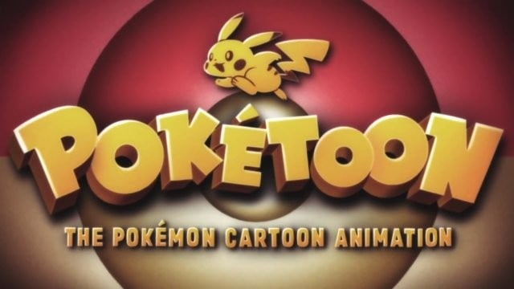
7.8「POKÉTOON动画系列」（2020）是一部OVA/WEB，由井上卓(1)执导，制作ダンデライオンアニメーションス(1)，类型包括奇幻、日常、治愈，评分7.8，在本站出现在4份片单中，例如高分OVA与WEB动画、高分治愈系动漫推荐、高分奇幻冒险动漫。页面只做片单对照，不提供播放。『POKÉTOON』（ポケトゥーン）は、2020年よりYouTubeチャンネル「ポケモン Kids TV」にて配信されているポケットモンスターのWebアニメシリーズ。 2020年6月5日に第1弾となる『ズルッグとミミッキュ』が、2021年5。
#66魔法之星爱美 蝉时雨
「魔法之星爱美 蝉时雨」（1986）是一部OVA/WEB，由安濃高志执导，类型包括日常、治愈、校园，评分7.8，在本站出现在5份片单中，例如高分OVA与WEB动画、高分治愈系动漫推荐、高分校园动漫推荐。页面只做片单对照，不提供播放。TVシリーズのダイジェスト映像15分とオリジナル映像45分で構成。オリジナルは成長した舞がTVシリーズの第12話と第13話の間に相当する夏の4日間を回想する形で描かれた。特別大きな事件は起こらず、舞と周辺の人々の日常が淡々と描かれ、全編を通。
#67银河英雄传说外传 螺旋迷宫
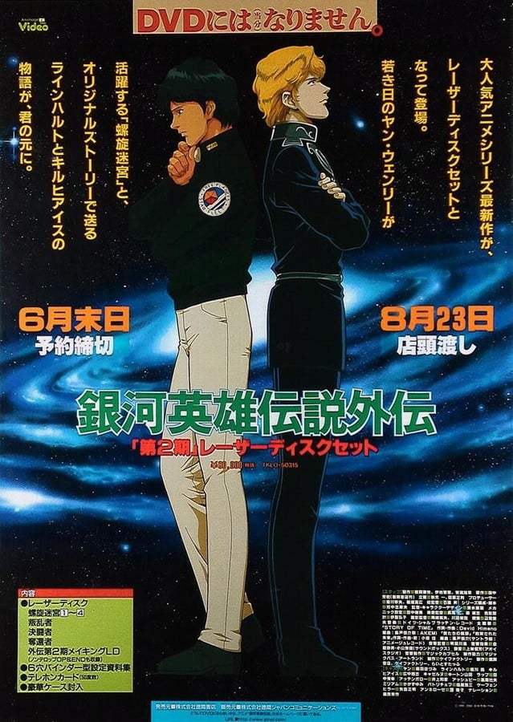
7.8「银河英雄传说外传 螺旋迷宫」（1999）是一部OVA/WEB，由清水恵蔵执导，制作ケイファクトリー，类型包括科幻、战争、机战，评分7.8，在本站出现在3份片单中，例如高分OVA与WEB动画、高分科幻动漫推荐、轻小说改编动漫推荐。页面只做片单对照，不提供播放。銀河帝国と自由惑星同盟の対立の中、それぞれ思いを胸に秘めながら活躍する英雄たちの姿を描いたOVA。
#68枕刀歌3：孤城闭雪
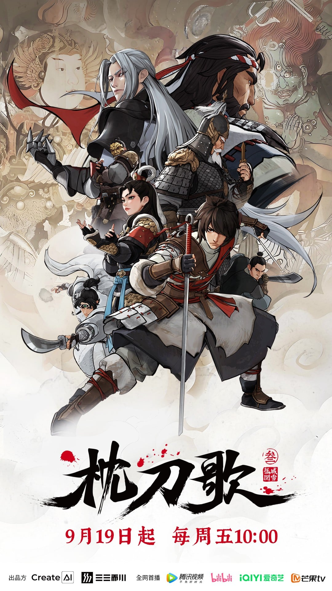
7.8「枕刀歌3：孤城闭雪」（2025）是一部OVA/WEB，制作三三而川，类型包括武侠、战斗，评分7.8，在本站出现在5份片单中，例如2025年夏季新番推荐、高分国漫推荐、高分OVA与WEB动画。页面只做片单对照，不提供播放。《枕刀歌第三季》以何方知中计前往蓟阳城寻找幕后黑手为主线，寻找十五年前姜枫血洗武林三帮十八派的真相为副线，勾勒出了一部生动的江湖庙堂交织争斗的故事。何方知收到一张带有父亲签字的大额契据，遂跟随指示前往萄阳城寻找真相，哪知遭到无数武林人士围追。
#69CLANNAD 另一个世界 智代篇
「CLANNAD 另一个世界 智代篇」（2008）是一部OVA/WEB，由石原立也执导，类型包括校园、治愈、恋爱，评分7.7，在本站出现在5份片单中，例如高分OVA与WEB动画、高分恋爱动漫推荐、高分治愈系动漫推荐。页面只做片单对照，不提供播放。每天浑浑噩噩，除了迟到便是逃学，被同学当作不良少年的光坂高中学生冈崎朋也在这一过程中和温柔美丽的女孩坂上智代熟稔，不知不觉便成为恋人。青春的爱恋平淡，却不乏幸福可言。未过多久，智代当选学生会长，在得到同学们祝贺的同时，他和朋也看似并不搭调的。
#70ReLIFE 完结篇
「ReLIFE 完结篇」（2018）是一部OVA/WEB，由小坂知执导，制作トムス・エンタテインメント，类型包括恋爱、校园、治愈，评分7.7，在本站出现在5份片单中，例如高分OVA与WEB动画、高分恋爱动漫推荐、高分治愈系动漫推荐。页面只做片单对照，不提供播放。無職でニートの海崎新太(27歳)はリライフ研究所の社会復帰プログラム「リライフ」へ参加し、1年間限定で高校生として高校に通っていた。 2学期に入り日代と一緒に青葉祭の実行委員を任された海崎は日代にある気持ちを抱く。一方、日代も花火大会以降、。
#71爱、死亡 & 机器人
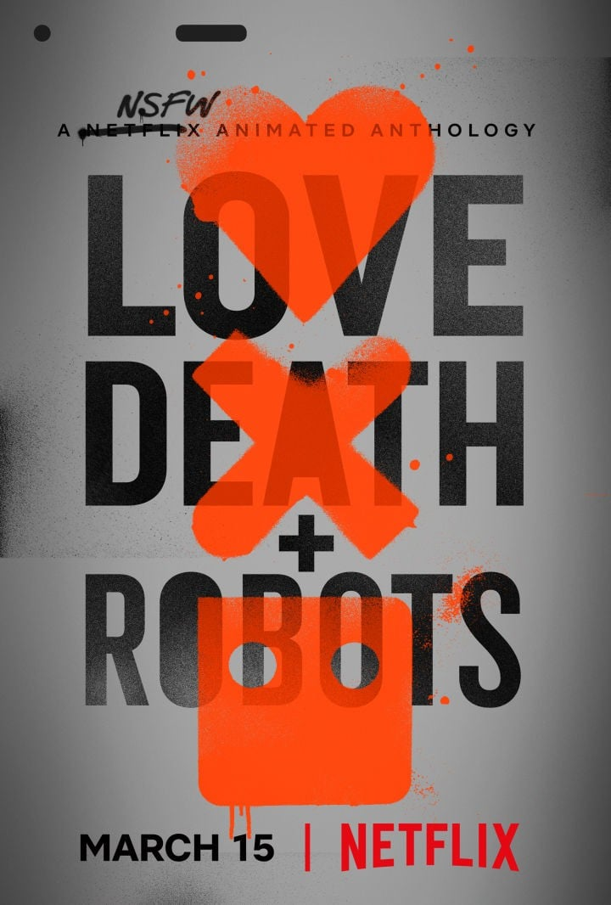
7.7「爱、死亡 & 机器人」（2019）是一部OVA/WEB，由Dave Wilson执导，制作Blur Studio，类型包括科幻、奇幻、战斗，评分7.7，在本站出现在6份片单中，例如高分美漫与动画电影、高分OVA与WEB动画、高分热血动漫推荐。页面只做片单对照，不提供播放。这个 NSFW 动画系列剧中充满了可怕的生物、令人惊讶的情节以及黑色幽默，由蒂姆·米勒和大卫·芬奇打造。
#72四叠半时光机布鲁斯
「四叠半时光机布鲁斯」（2022）是一部OVA/WEB，由夏目真悟执导，制作サイエンスSARU，类型包括科幻、恋爱、搞笑，评分7.7，在本站出现在6份片单中，例如高分OVA与WEB动画、高分恋爱动漫推荐、高分校园动漫推荐。页面只做片单对照，不提供播放。8月12日，灼热的京都左京区。“下鸭幽水庄”唯一的空调不开了。坏朋友小津昨晚把遥控器给淹了。正当“我”和电影社团“みそぎ”的冷酷美人明石商量对策时，出现了一个长相木讷、素不相识的男学生·田村。据说他是乘坐时光机从25年后的未来过来的。就在这。
#73最终幻想7：降临之子
「最终幻想7：降临之子」（2005）是一部OVA/WEB，由野村哲也执导，制作ヴィジュアルワークス(现：スクウェア・エニックス イメージ・スタジオ)，类型包括科幻、战斗、奇幻，评分7.7，在本站出现在5份片单中，例如高分OVA与WEB动画、高分热血动漫推荐、高分科幻动漫推荐。页面只做片单对照，不提供播放。故事从97年《最终幻想VII》结局两年之后开始，当人们以为世界已经和平之时，所谓的“星痕症候群”的病却开始四处蔓延，世界再度面临危机。同时曾经为拯救世界而战的英雄克劳德却与世隔绝孤独的生活着…… 剧情叙述主角们打倒赛菲罗斯（Sephirot。
#74黑礁 Roberta’s Blood Trail
「黑礁 Roberta’s Blood Trail」（2010）是一部OVA/WEB，由片渕須直执导，类型包括战斗、热血、冒险，评分7.7，在本站出现在4份片单中，例如高分OVA与WEB动画、高分热血动漫推荐、高分奇幻冒险动漫。页面只做片单对照，不提供播放。以Lovelace家族的女佣、前任哥伦比亚革命军的恐怖份子“弗罗伦西亚的猎犬”罗贝尔特为中心，收养她的Lovelace家族主人在一起由NSA策划的爆炸中死亡，而罗贝尔特为了展开复仇再次走上了血路。
#75悠哉日常大王 OAD
「悠哉日常大王 OAD」（2014）是一部OVA/WEB，由川面真也执导，制作SILVER LINK.，类型包括日常、治愈、百合，评分7.7，在本站出现在5份片单中，例如高分OVA与WEB动画、高分治愈系动漫推荐、必看搞笑动漫。页面只做片单对照，不提供播放。单行本第7卷同捆OAD。
#76日常 OAD
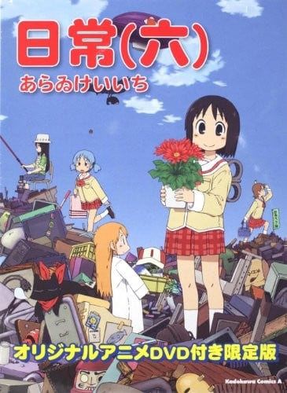
7.7「日常 OAD」（2011）是一部OVA/WEB，由石原立也执导，类型包括日常、搞笑、校园，评分7.7，在本站出现在5份片单中，例如高分OVA与WEB动画、高分治愈系动漫推荐、高分校园动漫推荐。页面只做片单对照，不提供播放。京阿尼新作动画《日常》最终还是敲定为OAD先行TV版紧接其后的推出方式，OAD版如早前所公布的，将在3月发售的最新漫画单行版中捆绑发行，而TV版的播放时间确定为2011年4月，正式参战明年4月的新番狂潮。 除了即将捆绑发行的OAD“日常0话。
#77夏娃的时间
「夏娃的时间」（2008）是一部OVA/WEB，由吉浦康裕执导，类型包括科幻、治愈，评分7.7，在本站出现在4份片单中，例如高分OVA与WEB动画、高分治愈系动漫推荐、高分科幻动漫推荐。页面只做片单对照，不提供播放。夏娃的时间（日语：イヴの時間）是2008年8月的一部科幻在线动画。讲述了未来的日本，机器人十分普及的情况。主人公陆夫偶然间发现了一间咖啡店，在里面人与机器人是平等的。 （Via wikipedia）。
#78少女与战车 最终章 第2话
「少女与战车 最终章 第2话」（2020）是一部OVA/WEB，由水島努执导，类型包括百合、战斗、搞笑，评分7.7，在本站出现在6份片单中，例如高分OVA与WEB动画、高分热血动漫推荐、高分校园动漫推荐。页面只做片单对照，不提供播放。平和的大洗女子学园突然因为河嶋桃的留级骚动沸腾起来。 而为了可顺利通过AO入试升读大学，小桃作为队长带领大洗战车道部参与冬季大会「无限轨道杯」，却没料到面对首战对手・BC自由学园便已迎来苦战！ 难道美穗等人和小桃的未来到此为止了吗？ 胜利将。
#79悠哉日常大王 Repeat OAD
「悠哉日常大王 Repeat OAD」（2016）是一部OVA/WEB，由川面真也执导，制作SILVER LINK.，类型包括日常、治愈、百合，评分7.7，在本站出现在5份片单中，例如高分OVA与WEB动画、高分治愈系动漫推荐、必看搞笑动漫。页面只做片单对照，不提供播放。单行本第10卷同捆OAD。
#80狱・再见绝望先生
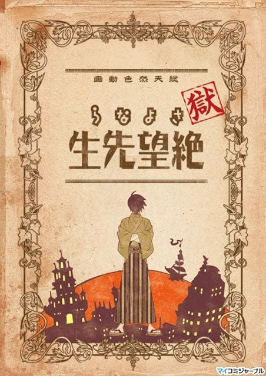
7.7「狱・再见绝望先生」（2008）是一部OVA/WEB，由新房昭之执导，制作SHAFT，类型包括搞笑、校园、日常，评分7.7，在本站出现在5份片单中，例如高分OVA与WEB动画、高分治愈系动漫推荐、高分校园动漫推荐。页面只做片单对照，不提供播放。名为“第2.5季”的OVA獄・さよなら絶望先生、其上卷和2008年10月17日发售的单行本第十五集初回限定版一起发售、下卷在2009年2月17日和第十六集的初回限定版一起发售。每卷定价都是3470日元、和日语“再见”（さよなら）的读音相同。
#81李献计历险记
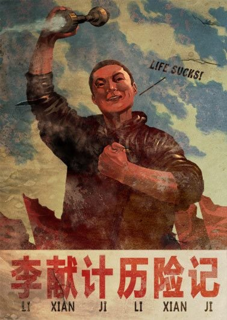
7.7「李献计历险记」（2009）是一部OVA/WEB，由李阳执导，类型包括爱情、恋爱、奇幻，评分7.7，在本站出现在6份片单中，例如高分国漫推荐、高分OVA与WEB动画、高分恋爱动漫推荐。页面只做片单对照，不提供播放。关于动画： 其实想不出该介绍点儿什么，故事本身也没蕴含什么大道理，挺随性的一动画，好比里边儿插了段儿假预告片，就完全为了向《wanted》致敬。个人认为《wanted》是继《黑客帝国》以来又一次动作场面革命，哥们儿当时就给震了，可奥斯卡上他。
#82草莓棉花糖 OVA 第2期
「草莓棉花糖 OVA 第2期」（2009）是一部OVA/WEB，由佐藤卓哉执导，类型包括治愈、日常、百合，评分7.7，在本站出现在5份片单中，例如高分OVA与WEB动画、高分治愈系动漫推荐、必看搞笑动漫。页面只做片单对照，不提供播放。「かわいいは正義！」を合言葉に、TVアニメ、OVAと二度アニメ化された「苺ましまろ」がまたまたOVAで帰ってきました！ みなさんのアンコールに応えて、ただいま！とばかりに“ましまろ”ワールドが、賑やかに帰ってきたぁ！ 二度あるアニメは三度あ。
#83草莓棉花糖 OVA 第1期
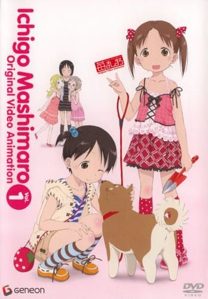
7.7「草莓棉花糖 OVA 第1期」（2007）是一部OVA/WEB，由佐藤卓哉执导，类型包括治愈、日常、百合，评分7.7，在本站出现在5份片单中，例如高分OVA与WEB动画、高分治愈系动漫推荐、必看搞笑动漫。页面只做片单对照，不提供播放。「苺ましまろ」（原作 「電撃大王」連載）は、とってもキュートで個性的な４人の小学生と １人の二十歳の短大生の女の子が繰り広げる、 一見どこでもありそうなゆる～い日常をコミカルに描いた作品です。 おしゃれなファッション、ちょっとおませな行動、。
#84×××HOLiC・笼 徒梦
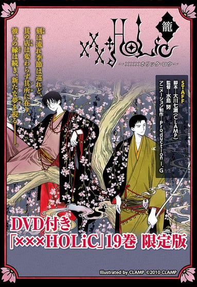
7.7「×××HOLiC・笼 徒梦」（2011）是一部OVA/WEB，由水島努执导，类型包括奇幻、治愈、日常，评分7.7，在本站出现在4份片单中，例如高分OVA与WEB动画、高分治愈系动漫推荐、高分奇幻冒险动漫。页面只做片单对照，不提供播放。这是一家可以实现任何愿望的店，只要委托人愿意付出对等的代价。在命运的安排下，有缘人必然会走进这家店里进行委托。高中生四月一日君寻，有着异于常人的体质，他可以看到并且吸引各种鬼怪。他身边的好友百目鬼和小葵都是特殊能力者。 原店主壹原侑子消失后。
#85圣斗士星矢 冥王十二宫编
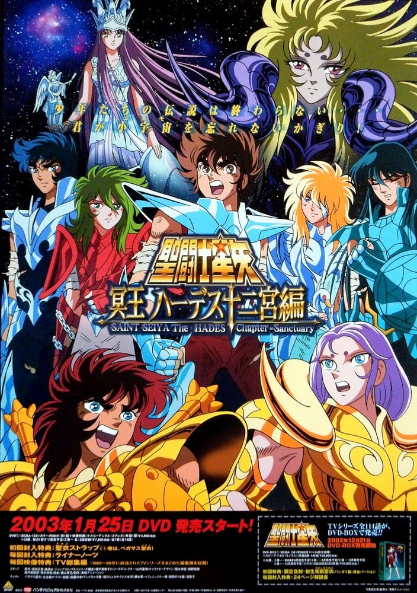
7.7「圣斗士星矢 冥王十二宫编」（2003）是一部OVA/WEB，制作東映アニメーション，类型包括热血、战斗、奇幻，评分7.7，在本站出现在4份片单中，例如高分OVA与WEB动画、高分热血动漫推荐、高分奇幻冒险动漫。页面只做片单对照，不提供播放。日本出生的少年人星矢，为寻找失散多年相依为命的姐姐星华，毅然前往希腊圣域接受成为圣斗士的艰苦训练，为要在银河擂台赛中夺冠并获得黄金圣衣。在比赛中，星矢与紫龙、冰河、瞬及一辉发展出一段至死不渝的友谊，并发现了一段13年前教皇的秘密…… 13年。
#86忏・再见绝望先生 番外地
「忏・再见绝望先生 番外地」（2009）是一部OVA/WEB，由新房昭之执导，制作SHAFT，类型包括搞笑、校园、日常，评分7.7，在本站出现在5份片单中，例如高分OVA与WEB动画、高分治愈系动漫推荐、高分校园动漫推荐。页面只做片单对照，不提供播放。制作组决定再推出新的OAD懺・さよなら絶望先生 番外地。其上卷与2009年11月17日发售的单行本第十九卷初回限定版一起发售，下卷则与2010年2月17日发售的单行本第二十卷初回限定版一起发售。 作者在每一集中、大量渗入对日本的社会现象及自。
#87猎人 OVA2 贪婪之岛
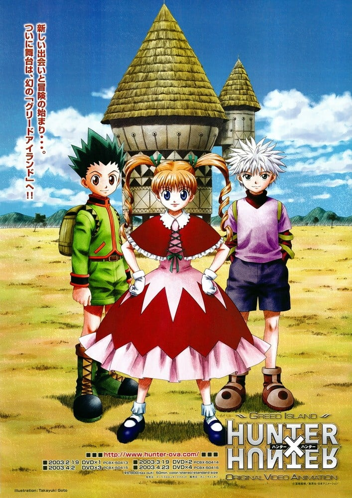
7.7「猎人 OVA2 贪婪之岛」（2003）是一部OVA/WEB，由ユキヒロマツシタ（福島宏之）执导，类型包括热血、战斗、奇幻，评分7.7，在本站出现在4份片单中，例如高分OVA与WEB动画、高分热血动漫推荐、高分奇幻冒险动漫。页面只做片单对照，不提供播放。富樫義博原作の人気アニメの続編オリジナルビデオアニメの第二弾。幻のゲーム・グリードアイランドの中でのストーリーが展開される。 主人公の少年・ゴンは仲間のキルアとともに、念能力者にしかプレイすることができないゲーム・グリードアイランドの中へと。
#88热带雨林的爆笑生活DELUXE
「热带雨林的爆笑生活DELUXE」（2002）是一部OVA/WEB，由水島努执导，类型包括搞笑、日常，评分7.7，在本站出现在4份片单中，例如高分OVA与WEB动画、高分治愈系动漫推荐、必看搞笑动漫。页面只做片单对照，不提供播放。第一部OVA《热带雨林的爆笑生活DELUXE》（以下简称DELUXE）于2002年末至2003年初制作，共12集（分为6卷）。
#89热带雨林的爆笑生活FINAL
「热带雨林的爆笑生活FINAL」（2003）是一部OVA/WEB，由水島努执导，类型包括搞笑、日常、奇幻，评分7.7，在本站出现在5份片单中，例如高分OVA与WEB动画、高分治愈系动漫推荐、高分奇幻冒险动漫。页面只做片单对照，不提供播放。第二部OVA《热带雨林的爆笑生活FINAL》（以下简称FINAL）于2003年末至2004年初制作，共14集（分为7卷）。OVA在日本KIDS STATION电视台播出。
#90超时空要塞 Dynamite 7
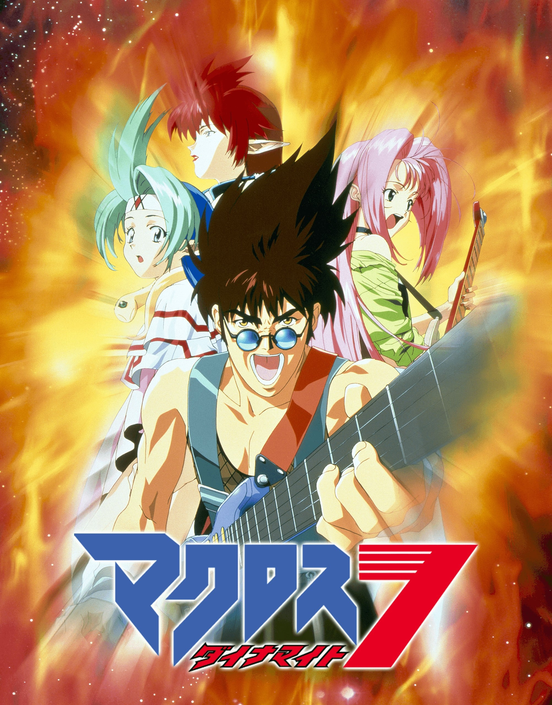
7.7「超时空要塞 Dynamite 7」（1997）是一部OVA/WEB，由アミノテツロー执导，制作葦プロダクション，类型包括科幻、音乐、机战，评分7.7，在本站出现在4份片单中，例如高分OVA与WEB动画、高分热血动漫推荐、高分科幻动漫推荐。页面只做片单对照，不提供播放。某天，巴萨拉不告而别，一个人离开MACROSS 7船团…… 在银河边缘的 67 惑星域，有一颗小小的卓拉星。每年固定的时间，“银河鲸鱼”就成群地向这里回游，成为这里一个著名的景观。所谓“鲸鱼”并不是指那些海洋中的哺乳类，“银河鲸鱼”是一种类。
#91高智能方程式：ZERO
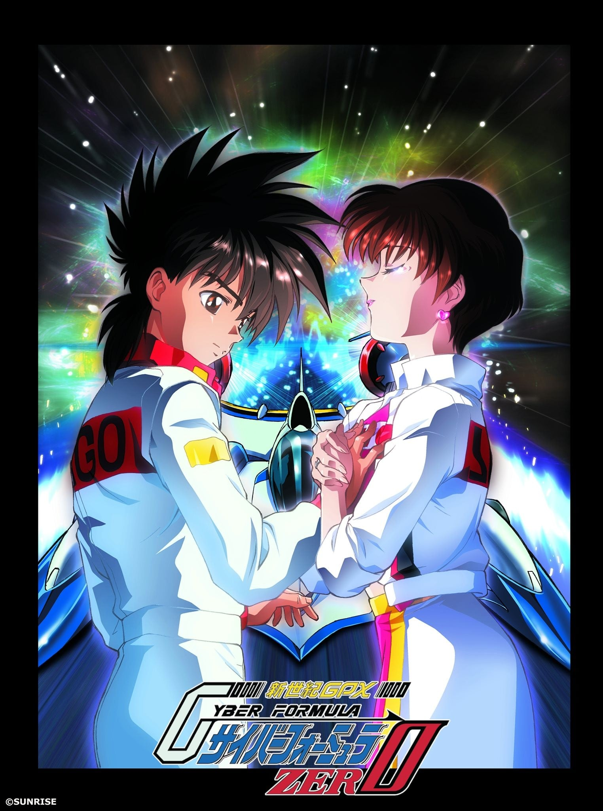
7.7「高智能方程式：ZERO」（1994）是一部OVA/WEB，类型包括热血、科幻、运动，评分7.7，在本站出现在4份片单中，例如高分OVA与WEB动画、高分热血动漫推荐、高分科幻动漫推荐。页面只做片单对照，不提供播放。2017 年,第12届高智能方程式赛车（Cyber Formula）第四战预赛开始，已经在前三场顺利取得冠军的隼人在驾驶时，突然听到一些刺耳的声音. 这一刻，隼人比阿斯拉达的决定更快，并巧妙避免了和雪铁相撞。众人都十分惊讶,认为这是超能力。
#92画江湖之不良人 第四季
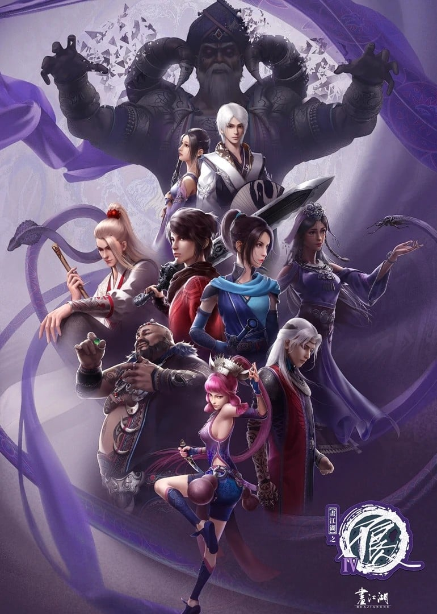
7.7「画江湖之不良人 第四季」（2021）是一部OVA/WEB，类型包括武侠、热血、战斗，评分7.7，在本站出现在4份片单中，例如高分国漫推荐、高分OVA与WEB动画、高分热血动漫推荐。页面只做片单对照，不提供播放。十万大山危机四伏，苗疆之行艰难险阻。 神秘的十二峒有着怎样不为人知的秘密？面对强大的各方势力，李星云等人能否全身而退？此段神秘莫测的苗疆之旅，即将启程……。
#93东方活动写真馆
「东方活动写真馆」（2009）是一部OVA/WEB，类型包括治愈、百合、奇幻，评分7.7，在本站出现在5份片单中，例如高分OVA与WEB动画、高分治愈系动漫推荐、高分奇幻冒险动漫。页面只做片单对照，不提供播放。上海アリス幻樂団様制作の東方Project作品の二次創作作品ミュージック・ビデオアニメーションを制作いたしました。 内容は東方Projectに出てくるキャラクターたちをゲームBGMのアレンジした曲に載せてお送りする ミュージック・ビデオアニ。
#94希尔达 第一季
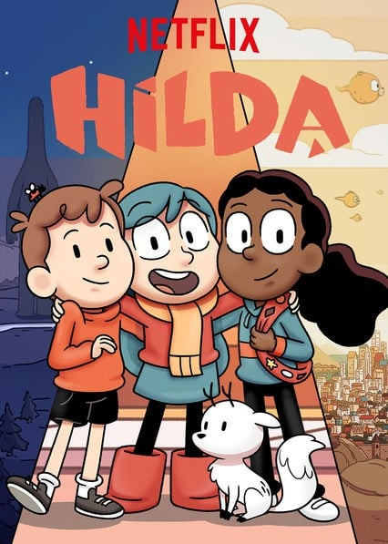
7.7「希尔达 第一季」（2018）是一部OVA/WEB，由Andy Coyle执导，类型包括治愈、喜剧、奇幻，评分7.7，在本站出现在6份片单中，例如高分美漫与动画电影、高分OVA与WEB动画、高分治愈系动漫推荐。页面只做片单对照，不提供播放。Hilda is an animated television series based on the graphic novel series of the same name by Luke Pearson. Produced by S。
#95枕刀歌之将军卸印
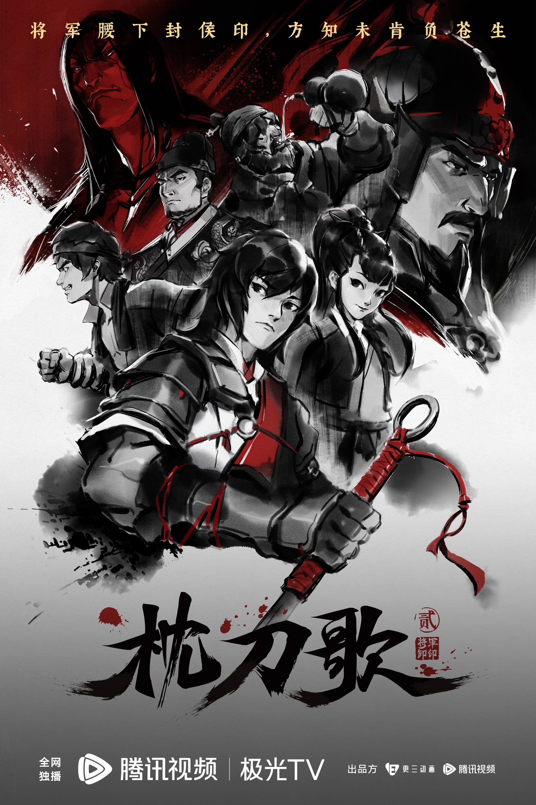
7.7「枕刀歌之将军卸印」（2023）是一部OVA/WEB，类型包括武侠、战斗、热血，评分7.7，在本站出现在5份片单中，例如高分国漫推荐、高分OVA与WEB动画、高分热血动漫推荐。页面只做片单对照，不提供播放。何方知与阿牙循着线索一路探寻，终于找到了借刀杀人除掉林大人的幕后之人。此后，上凤鸣山，受凤阁主所托，前去西北救一人……在这一路上，何方知又遇到了形形色色的人，他们或居庙堂之上，或处江湖之中，每个人都有自己的选择，都在用自己的方式，坚持自己相。
#96孔明的陷阱
「孔明的陷阱」（2015）是一部OVA/WEB，类型包括恋爱、冒险，评分7.7，在本站出现在5份片单中，例如高分美漫与动画电影、高分OVA与WEB动画、高分恋爱动漫推荐。页面只做片单对照，不提供播放。Kaizo Trap is an animated story about love, determination, and overcoming nearly impossible obstacles.。
#97希尔达 第二季
「希尔达 第二季」（2020）是一部OVA/WEB，类型包括冒险、治愈、奇幻，评分7.7，在本站出现在5份片单中，例如高分美漫与动画电影、高分OVA与WEB动画、高分治愈系动漫推荐。页面只做片单对照，不提供播放。希尔达 第二季。2020。冒险、治愈、奇幻。
#98CLANNAD ～AFTER STORY～另一个世界 杏篇
「CLANNAD ～AFTER STORY～另一个世界 杏篇」（2009）是一部OVA/WEB，由石原立也执导，类型包括校园、治愈、恋爱，评分7.6，在本站出现在5份片单中，例如高分OVA与WEB动画、高分恋爱动漫推荐、高分治愈系动漫推荐。页面只做片单对照，不提供播放。在光坂高中空无一人的教室内，藤林椋终于鼓起勇气向被人当作不良少年的冈崎朋也表白。幸运的是，她的爱意没有落于虚空，得到了冈崎热情而肯定的回应。两人自此开始交往，望着沉浸在幸福中的妹妹，藤林杏心中自是无法道出的复杂感受。某个明媚的假日，冈崎和杏。
#99幻想嘉年华
「幻想嘉年华」（2011）是一部OVA/WEB，由岸誠二执导，制作ラルケ，类型包括搞笑、日常、奇幻，评分7.6，在本站出现在5份片单中，例如高分OVA与WEB动画、高分治愈系动漫推荐、高分奇幻冒险动漫。页面只做片单对照，不提供播放。在一间由猫经营的酒吧里，有一群猫在谈话。从他们的言谈之间可以隐约得知，一场可能会打破时空之间界限的狂凶之盛宴即将到来。 冬木市再度举行了让魔术师为之疯狂得“圣杯争霸战”，参与争夺的卫宫士郎、Saber、远坂凛、Archer、葛木宗一郎、Ri。
#100雾山五行
「雾山五行」（2020）是一部OVA/WEB，由林魂执导，制作六道无鱼动画工作室，类型包括战斗、奇幻、热血，评分7.6，在本站出现在5份片单中，例如高分国漫推荐、高分OVA与WEB动画、高分热血动漫推荐。页面只做片单对照，不提供播放。上古时期妖兽纵横，一位神秘道人分别授予了阴阳五行的特殊能力给金木水火土五个家族来抵抗妖兽。他们将妖兽驱赶到神隐雾山之中，设立结界。雾山之中另有强大灵力的麒麟兽常常吸引来那些想要提升妖力突破结界，因此自愿被封印于巨阙神盾之中。火行使者闻人翊悬。
#101进击的巨人 无悔的选择 OAD
「进击的巨人 无悔的选择 OAD」（2014）是一部OVA/WEB，类型包括战斗、热血、奇幻，评分7.6，在本站出现在4份片单中，例如高分OVA与WEB动画、高分热血动漫推荐、高分奇幻冒险动漫。页面只做片单对照，不提供播放。外传「进击的巨人 无悔的选择」OAD化决定！ 「进击的巨人」单行本第15、16卷同捆OAD。 讲述了利威尔与调查兵团的团长艾尔文两人相遇的故事。
#102DARKER THAN BLACK -黑之契约者- 外传
「DARKER THAN BLACK -黑之契约者- 外传」（2010）是一部OVA/WEB，由岡村天斎执导，类型包括战斗、奇幻、超能力，评分7.6，在本站出现在5份片单中，例如高分OVA与WEB动画、高分热血动漫推荐、高分科幻动漫推荐。页面只做片单对照，不提供播放。「黒の契約者」と「流星の双子」の空白の2年を繋ぐ全4話の新作OVA「DARKER THAN BLACK 黒の契約者 外伝」 连接起「黑之契约者」与「流星的双子」之间的两年空白，共4集的新作OVA「DARKER THAN BLACK -黑之契。
#103妄想学生会 OAD
「妄想学生会 OAD」（2011）是一部OVA/WEB，由金澤洪充执导，类型包括搞笑、校园、日常，评分7.6，在本站出现在5份片单中，例如高分OVA与WEB动画、高分治愈系动漫推荐、高分校园动漫推荐。页面只做片单对照，不提供播放。这部「妄想学生会」将依然以男生28人、女生524人的樱才学园学生会作为故事主要的舞台，依然将以糟糕NETA乱飞的风格呈献给各位观众。 出演这次OAD的STAFF、CAST依然和TV保持一致。
#104DDDD 恶魔的破坏
「DDDD 恶魔的破坏」（2024）是一部OVA/WEB，由黒川智之执导，类型包括科幻、日常、剧情，评分7.6，在本站出现在5份片单中，例如高分OVA与WEB动画、高分治愈系动漫推荐、高分科幻动漫推荐。页面只做片单对照，不提供播放。3年前の8月31日、巨大な宇宙船「母艦」が突如として東京に襲来し、世界は終わりを迎えるかに見えた。その後、絶望的な状況は次第に日常に溶け込み、上空に母艦が浮遊する異様な光景が当たり前となっていた。そんな中、女子高生の小山門出と「おんたん」こ。
#105妄想学生会＊ OAD
「妄想学生会＊ OAD」（2014）是一部OVA/WEB，由金澤洪充执导，类型包括搞笑、校园、日常，评分7.6，在本站出现在5份片单中，例如高分OVA与WEB动画、高分治愈系动漫推荐、高分校园动漫推荐。页面只做片单对照，不提供播放。2期OAD系列。 2#14は2014年5月16日発売 第10巻限定版同梱DVDに収録。 2#16は2015年2月17日発売 第11巻限定版同梱DVDに収録。 2#17は2015年9月17日発売 第12巻限定版同梱DVDに収録。 2#18は2。
#106雾山五行 犀川幻紫林
「雾山五行 犀川幻紫林」（2023）是一部OVA/WEB，由林魂执导，类型包括战斗、奇幻、热血，评分7.6，在本站出现在5份片单中，例如高分国漫推荐、高分OVA与WEB动画、高分热血动漫推荐。页面只做片单对照，不提供播放。在小麒麟被闻人翊悬带进雾山的消息传开以后，妖兽们虎视眈眈，潜伏在雾山之中，伺机而动。另一方以赤骥为首的地膳村兄弟们随后也进入了雾山，各方立场不同，目标一致，仇恨，贪念，欲望，闻人翊悬究竟能否守住小麒麟，顺利到达巨阙神盾救出母亲呢？混战！一触。
#107红白黑黄 第二季
「红白黑黄 第二季」（2014）是一部OVA/WEB，类型包括战斗、百合、奇幻，评分7.6，在本站出现在6份片单中，例如高分美漫与动画电影、高分OVA与WEB动画、高分热血动漫推荐。页面只做片单对照，不提供播放。红白黑黄 第二季。2014。战斗、百合、奇幻。
#108少女与战车 最终章 第3话
「少女与战车 最终章 第3话」（2021）是一部OVA/WEB，由水島努执导，类型包括战斗、百合、校园，评分7.6，在本站出现在6份片单中，例如高分OVA与WEB动画、高分热血动漫推荐、高分校园动漫推荐。页面只做片单对照，不提供播放。胜出与BC自由学园对决的首战后，大洗女子学园战车道部进入冬季大会「无限轨道杯」的第二轮比赛。面对以「突击」战法来势汹汹的知波单学园，大洗女子学园迎来苦战！丛林加夜战，被逼到绝境的美穗等人会有扭转局面的对策吗？ 与此同时，亦不能错过其他学校的。
#109夏目友人帐 曾几何时下雪之日
「夏目友人帐 曾几何时下雪之日」（2014）是一部OVA/WEB，由出合小都美执导，类型包括治愈、奇幻、日常，评分7.6，在本站出现在5份片单中，例如高分OVA与WEB动画、高分治愈系动漫推荐、高分校园动漫推荐。页面只做片单对照，不提供播放。『夏目友人帐』第四季的新作OVA。描写了能够看见妖怪的少年夏目与猫咪老师一起，和其他妖怪们进行交流的小故事。
#110向山进发 回忆的礼物
「向山进发 回忆的礼物」（2018）是一部OVA/WEB，由山本裕介执导，类型包括百合、日常、治愈，评分7.6，在本站出现在4份片单中，例如高分OVA与WEB动画、高分治愈系动漫推荐、高分女性向动漫。页面只做片单对照，不提供播放。「Present1 夏 ここなの8/31」 8月31日。夏休みの最後に、大好きなお母さんとおでかけの約束をしていたここな。 ところが急な仕事が入ったお母さんはここなと一緒に出かけられなくなってしまい、ここなはひとりで飯能の街を散歩することに。
#111×××HOLiC 春梦记
「×××HOLiC 春梦记」（2009）是一部OVA/WEB，由水島努执导，制作Production I.G，类型包括奇幻、治愈、日常，评分7.6，在本站出现在4份片单中，例如高分OVA与WEB动画、高分治愈系动漫推荐、高分奇幻冒险动漫。页面只做片单对照，不提供播放。高中生四月一日君寻，有着异于常人的体质，他可以看到并且吸引各种鬼怪。他的好友百目鬼也是特殊能力者，有驱除妖魔的能力。在命运的牵引下，四月一日在壹原侑子的店里打工。这是一家可以帮人实现任何愿望的店，但是委托人必须付出对等代价。不久后，四月一日。
#112校园迷糊大王 一学期补习
「校园迷糊大王 一学期补习」（2005）是一部OVA/WEB，由高松信司执导，制作スタジオコメット，类型包括校园、搞笑、喜剧，评分7.6，在本站出现在5份片单中，例如高分OVA与WEB动画、高分恋爱动漫推荐、高分校园动漫推荐。页面只做片单对照，不提供播放。故事讲述的是茶道部全体赴温泉疗养，忽悠忽悠的泡澡放松心情，不愿错过良机的众男生尾随而至……。
#113异兽魔都 第二季
「异兽魔都 第二季」（2026）是一部OVA/WEB，由林祐一郎执导，类型包括战斗、奇幻、悬疑，评分7.6，在本站出现在7份片单中，例如2026年春季新番推荐、2026年新番总表、高分OVA与WEB动画。页面只做片单对照，不提供播放。开曼是魔法的受害者之一，头部被变成蜥蜴，且丧失了记忆。为了变回人脸和找回记忆，故事就从开曼和同伴二阶堂就从狩猎魔法师的行动开始了。正被烟家族追杀的开曼与二阶堂、期盼老大归来的十字眼组织…… 随着各方势力陷入极度混乱的对立，故事也随之冲向更加。
#114翼·年代记 东京默示录
「翼·年代记 东京默示录」（2007）是一部OVA/WEB，由多田俊介执导，制作Production I.G，类型包括奇幻、战斗、冒险，评分7.6，在本站出现在5份片单中，例如高分OVA与WEB动画、高分热血动漫推荐、高分恋爱动漫推荐。页面只做片单对照，不提供播放。樱一行人在法伊的魔法帮助下来到一个新的国度——东京，这里一片荒凉废墟，经常下酸雨，人们为了水而争战，这个地区只有两个地方有水，一个是都厅，一个是东京铁塔，双方对立。X战记中的神威，牙晓等等在都厅，封真，让刃等在铁塔。
#115高达创形者 再起 2nd Season
「高达创形者 再起 2nd Season」（2020）是一部OVA/WEB，由綿田慎也执导，类型包括机战、科幻、战斗，评分7.6，在本站出现在5份片单中，例如高分OVA与WEB动画、高分热血动漫推荐、高分异世界动漫推荐。页面只做片单对照，不提供播放。激戦の果てに静止衛星から放たれたひとすじの光は、ヒロト達が戦い続けてきた「惑星エルドラ」がネットワークゲーム「ガンプラバトル・ネクサスオンライン（ＧＢＮ）」の世界ではなく、現実（リアル）の世界である可能性を突き付けるものであった。その状況に。
#116向阳素描×365 特别篇
「向阳素描×365 特别篇」（2009）是一部OVA/WEB，由新房昭之执导，制作SHAFT，类型包括治愈、百合、日常，评分7.6，在本站出现在5份片单中，例如高分OVA与WEB动画、高分治愈系动漫推荐、高分校园动漫推荐。页面只做片单对照，不提供播放。[可以算是为第三季预热把] 一位憧憬山吹高中美术科，并以优异的成绩入学的少女由乃。因为家中离学校很远，而住在学校校门前的公寓“向阳庄”。住在隔壁的是同学年的同学宫子而在各自房间正下方的是学姊寻和沙英。因为聚集了各种不同性格的艺术家，使得每天。
#117重金属摇滚双面人
「重金属摇滚双面人」（2008）是一部OVA/WEB，类型包括搞笑、音乐，评分7.6，在本站出现在3份片单中，例如高分OVA与WEB动画、必看搞笑动漫、漫画改编动漫推荐。页面只做片单对照，不提供播放。《重金摇滚双面人》是若杉公德所画作的日本漫画，以死亡金属音乐为主题，题目源自于美国流行乐队KISS的名曲《Detroit Rock City》，由白泉社出版。漫画中的重金摇滚乐歌词都以粗口和污秽的言词为主，但配合各种讽刺和恶搞而作的变态行为。
#118真盖塔 世界最后之日
「真盖塔 世界最后之日」（1998）是一部OVA/WEB，由今川泰宏(1-3)执导，类型包括机战、科幻、热血，评分7.6，在本站出现在4份片单中，例如高分OVA与WEB动画、高分热血动漫推荐、高分科幻动漫推荐。页面只做片单对照，不提供播放。自从盖塔射线被发现并作为一种重要的能源被广泛使用以来，人类已经经历了大半个世纪，但是，神秘的外星生物入侵者（Invador）自月面开始侵袭地球，人类濒临危机。于是，人们自发制造了大量的超级机器人（super robot）前去应战，终于击退了。
#119向阳素描×☆☆☆ 特别篇
「向阳素描×☆☆☆ 特别篇」（2010）是一部OVA/WEB，由新房昭之执导，制作SHAFT，类型包括治愈、百合、日常，评分7.6，在本站出现在5份片单中，例如高分OVA与WEB动画、高分治愈系动漫推荐、高分校园动漫推荐。页面只做片单对照，不提供播放。由苍树梅老师创作的四格漫画「向阳素描」，在新房及SHAFT的制作小组合作下，围绕向阳四子由乃、小宫、寻及沙英展开的动画在今年年初已经顺利播放了第三季，并一如以往四子的萌力在动画中大放异彩，成为值得推介的作品。向阳的故事是讲述向往着美术班的由。
#120向阳素描×SP
「向阳素描×SP」（2011）是一部OVA/WEB，由新房昭之执导，制作SHAFT，类型包括治愈、百合、日常，评分7.6，在本站出现在5份片单中，例如高分OVA与WEB动画、高分治愈系动漫推荐、高分校园动漫推荐。页面只做片单对照，不提供播放。真-治愈系《向阳素描》第四季预热用OVA。
#121无敌少侠
「无敌少侠」（2021）是一部OVA/WEB，类型包括战斗、科幻、奇幻，评分7.6，在本站出现在6份片单中，例如高分美漫与动画电影、高分OVA与WEB动画、高分热血动漫推荐。页面只做片单对照，不提供播放。动画改编自柯克曼创作的同名漫画，讲述了少年Mark Grayson的老爸是这个星球最强大的超级英雄，并想成为他老爸一样的超级英雄的故事。
#122高智能方程式：SAGA
「高智能方程式：SAGA」（1996）是一部OVA/WEB，类型包括热血、科幻、运动，评分7.6，在本站出现在4份片单中，例如高分OVA与WEB动画、高分热血动漫推荐、高分科幻动漫推荐。页面只做片单对照，不提供播放。2019年的最终战,隼人在比赛中开始觉得阿斯拉达的系统支配了赛车,隼人作出决定时,都要阿斯拉达的同意...结果,驾驶新雪铁的古迪里昂取得世界冠军.隼人因落败而没有心情. 在宴会上,隼人和加贺都感觉到如果得不到快的跑车是得不到冠军的.更觉得科。
#123高智能方程式：Cyber Formula 11
「高智能方程式：Cyber Formula 11」（1992）是一部OVA/WEB，由福田己津央执导，类型包括热血、科幻、运动，评分7.6，在本站出现在4份片单中，例如高分OVA与WEB动画、高分热血动漫推荐、高分科幻动漫推荐。页面只做片单对照，不提供播放。2016年,第11届Cyber Formula即將开始.隼人打算利用前年的势头再夺冠军,但事与愿违.在第一round的比賽,隼人发现新条,兰度,古迪里昂等人的车都未开进.在第一场的比赛隼人更得不到分.之后第二,三站隼人都惨败首场.结果隼人都。
#124画江湖之天罡
「画江湖之天罡」（2023）是一部OVA/WEB，由任伟杰执导，制作总承制方：北京悟画文化传播有限公司，类型包括武侠、战斗、热血，评分7.6，在本站出现在5份片单中，例如高分国漫推荐、高分OVA与WEB动画、高分热血动漫推荐。页面只做片单对照，不提供播放。大周年间，时局动荡，奸臣当道。直属帝王的秘密暗杀组织不良人一夜之间突然群龙无首，不良帅袁天罡留下一纸书信辞官而去。失去人生方向的袁天罡，在好友李淳风留下的锦囊的指引下，来到了长安安乐阁，却不曾想到此地竟是风月之所。而接下来发生的一切，随着寻。
#125第四届东方M-1漫才大赛
「第四届东方M-1漫才大赛」（2009）是一部OVA/WEB，类型包括搞笑、百合、奇幻，评分7.6，在本站出现在5份片单中，例如高分OVA与WEB动画、高分奇幻冒险动漫、必看搞笑动漫。页面只做片单对照，不提供播放。いえろ～ぜぶら 漫才アニメ第二弾 東方キャラによる漫才アニメDVD！！。
#126星界的战旗III
「星界的战旗III」（2005）是一部OVA/WEB，由長岡康史执导，类型包括科幻、恋爱、战争，评分7.6，在本站出现在4份片单中，例如高分OVA与WEB动画、高分恋爱动漫推荐、高分科幻动漫推荐。页面只做片单对照，不提供播放。森岡浩之の同名SFライトノベルをアニメ化。本作では、主人公のジントがアーヴ帝国クリューブ王家の王女ラフィールとともに、敵から奪還した彼の故郷であるハイド星系へ、統治者として帰郷するというもの。かつて、ハイド星系で政府主席の息子として暮らして。
#127蝙蝠侠 黑暗骑士归来（上）
「蝙蝠侠 黑暗骑士归来（上）」（2012）是一部OVA/WEB，由Jay Oliva执导，制作MOI Animation，类型包括科幻、战斗、剧情，评分7.6，在本站出现在5份片单中，例如高分美漫与动画电影、高分OVA与WEB动画、高分热血动漫推荐。页面只做片单对照，不提供播放。阴云密布的高谭市，自蝙蝠侠消失的十年里，变种人团伙为非作歹，变本加厉，将这座繁华城市变成充满恐怖和凶杀的罪恶王国。嫉恶如仇的吉姆·戈登探长（大卫·塞尔比 David Selby 配音）行将退休，却不免成为变种人下一个袭击的目标。随着双面人哈。
#128第三届东方M-1漫才大赛
「第三届东方M-1漫才大赛」（2008）是一部OVA/WEB，类型包括搞笑、百合，评分7.6，在本站出现在4份片单中，例如高分OVA与WEB动画、必看搞笑动漫、高分女性向动漫。页面只做片单对照，不提供播放。何と今回はDVD！ 本家にも負けない笑いの弾幕の数々！ やめて！もう残機はゼロよ！ 第3回東方M-1ぐらんぷりとは、同人音楽サークル「いえろ～ぜぶら」が製作した電子メディア同人作品「東方M-1ぐらんぷり」のシリーズ第3弾、アニメ化第1弾であ。
#129银河英雄传说外传 千亿的星辰、千亿的光芒
「银河英雄传说外传 千亿的星辰、千亿的光芒」（1998）是一部OVA/WEB，制作ケイファクトリー，类型包括科幻、战争、战斗，评分7.6，在本站出现在4份片单中，例如高分OVA与WEB动画、高分热血动漫推荐、高分科幻动漫推荐。页面只做片单对照，不提供播放。銀河帝国と自由惑星同盟の対立の中、それぞれ思いを胸に秘めながら活躍する英雄たちの姿を描いたOVA。
#130偶像大陆美妙天堂
「偶像大陆美妙天堂」（2021）是一部OVA/WEB，由森脇真琴执导，制作タツノコプロ，类型包括音乐、百合、搞笑，评分7.6，在本站出现在5份片单中，例如高分OVA与WEB动画、高分奇幻冒险动漫、必看搞笑动漫。页面只做片单对照，不提供播放。アプリの事前登録開始と同日の12月6日には、同名のWebアニメ『アイドルランドプリパラ』が2021年春にスタートする予定も発表された。テレビアニメ第2作『アイドルタイムプリパラ』が2018年3月に終了して以来3年ぶりの新作となり、メインスタ。
#131职场小烈 第三季
「职场小烈 第三季」（2020）是一部OVA/WEB，类型包括搞笑，评分7.6，在本站出现在3份片单中，例如高分OVA与WEB动画、必看搞笑动漫、原创动画推荐。页面只做片单对照，不提供播放。为了还清债务，烈子做起了兼职。当她发现与自己共事的是一个地下偶像团体时，再次爆发出了怒火激情。
#132卫宫家今天的饭
「卫宫家今天的饭」（2017）是一部OVA/WEB，由三浦貴博・佐藤哲人执导，类型包括日常、治愈、搞笑，评分7.5，在本站出现在5份片单中，例如高分OVA与WEB动画、高分治愈系动漫推荐、高分奇幻冒险动漫。页面只做片单对照，不提供播放。Fate×料理所交织而出的美味并温柔的世界—— 那里是随处都可见的稍稍有些热闹的餐桌上的光景。 春夏秋冬、在卫宫家每天都能享受到美味的料理。 今天做些什么呢。
#133赛马娘 Pretty Derby 巅峰之路
「赛马娘 Pretty Derby 巅峰之路」（2023）是一部OVA/WEB，由廖程芝执导，制作CygamesPictures（サイピク），类型包括运动、百合、热血，评分7.5，在本站出现在5份片单中，例如高分OVA与WEB动画、高分热血动漫推荐、高分校园动漫推荐。页面只做片单对照，不提供播放。クラシック三冠レース『皐月賞』『日本ダービー』『菊花賞』 一生に一度だけ挑戦できるそのレースで勝つことは、 すべてのウマ娘、すべてのトレーナーにとっての夢である。 『ナリタトップロード』『アドマイヤベガ』『テイエムオペラオー』三強と呼ばれた。
#134齐木楠雄的灾难 再始动篇
「齐木楠雄的灾难 再始动篇」（2019）是一部OVA/WEB，由桜井弘明执导，制作EGG FIRM×J.C.STAFF，类型包括搞笑、校园、日常，评分7.5，在本站出现在5份片单中，例如高分OVA与WEB动画、高分治愈系动漫推荐、高分校园动漫推荐。页面只做片单对照，不提供播放。楠雄和他那帮自称为朋友的人回来面对更多的超能力灾难。如果说以前他的问题不够多，那现在可谓是麻烦缠身。
#135为美好的世界献上祝福！第三季 ーBONUS STAGEー
「为美好的世界献上祝福！第三季 ーBONUS STAGEー」（2025）是一部OVA/WEB，由安部祐二郎执导，类型包括搞笑、异世界、奇幻，评分7.5，在本站出现在6份片单中，例如高分OVA与WEB动画、高分热血动漫推荐、高分异世界动漫推荐。页面只做片单对照，不提供播放。交通事故（!?）によりあっけなく人生の幕を閉じるはずだったゲームを愛するひきこもりの佐藤和真（カズマ）は、ひょんなことから、女神アクアを道連れに異世界へ転生する。 冒険者生活や勇者への憧れに胸を高鳴らせたのも束の間、転生したカズマには厄介な。
#136妄想学生会 OVA
「妄想学生会 OVA」（2012）是一部OVA/WEB，由金澤洪充执导，类型包括搞笑、校园、日常，评分7.5，在本站出现在5份片单中，例如高分OVA与WEB动画、高分治愈系动漫推荐、高分校园动漫推荐。页面只做片单对照，不提供播放。圧倒的な女子高生天国の中、ひょんなことから生徒会副会長に就任した津田タカトシ。 彼は作中登場キャラの中でも、ゴクゴク普通な一般・常識人。 堅いイメージの生徒会。だがそこは、想像を遥かに絶するメンバーがいた… 収録の第16話は何がくるのか見て。
#137红白黑黄
「红白黑黄」（2013）是一部OVA/WEB，类型包括战斗、百合、奇幻，评分7.5，在本站出现在6份片单中，例如高分美漫与动画电影、高分OVA与WEB动画、高分热血动漫推荐。页面只做片单对照，不提供播放。RWBY，即红白黑黄，是一部将在2013年7月播出正片的动作向动画。RWBY 是红白黑黄的开头大写字母，代表的是红、白、黑、黄四位女主角的称号。由美国动画工作室 Rooster Teeth 员工 Monty Oum 及其团队制作。 根据主创。
#138忍者杀手
「忍者杀手」（2015）是一部OVA/WEB，由雨宮哲执导，类型包括战斗、搞笑、热血，评分7.5，在本站出现在5份片单中，例如高分OVA与WEB动画、高分热血动漫推荐、高分科幻动漫推荐。页面只做片单对照，不提供播放。2014年4月にアニメ化が発表された。『ニンジャスレイヤー フロムアニメイシヨン』のタイトルで、2015年4月よりニコニコ動画などの動画配信サービスにて配信され、2016年にスペシャル・エディシヨン版と銘打ったTVシリーズが地上波で放送され。
#139摇曳百合 夏日时光！
「摇曳百合 夏日时光！」（2015）是一部OVA/WEB，由畑博之执导，制作TYO Animations（ゆめ太カンパニー），类型包括百合、日常、搞笑，评分7.5，在本站出现在5份片单中，例如高分OVA与WEB动画、高分治愈系动漫推荐、必看搞笑动漫。页面只做片单对照，不提供播放。「コミック百合姫」に連載された人気コミックを原作に、2011年にテレビシリーズ第1期、12年に第2期が放送された日常系アニメ「ゆるゆり」のOVA。廃部になった茶道部の部室に集まり、特に明確な活動目的もない「ごらく部」を続ける赤座あかり、歳納。
#140飙马野郎 JOJO的奇妙冒险 第一赛段
「飙马野郎 JOJO的奇妙冒险 第一赛段」（2026）是一部OVA/WEB，由木村泰大・髙橋秀弥执导，类型包括战斗、冒险、热血，评分7.5，在本站出现在5份片单中，例如2026年新番总表、高分OVA与WEB动画、高分热血动漫推荐。页面只做片单对照，不提供播放。1890年のアメリカ。総距離約4,000マイル、賞金総額5,000万ドル、 人類史上初の乗馬による北米大陸横断レース「スティール・ボール・ラン」が開催されようとしていた。 かつて天才騎手と呼ばれながらも、半身不随となり、失意の中にいたジョニ。
#141男子高中生的日常 特典
「男子高中生的日常 特典」（2012）是一部OVA/WEB，类型包括搞笑、日常、校园，评分7.5，在本站出现在5份片单中，例如高分OVA与WEB动画、高分治愈系动漫推荐、高分校园动漫推荐。页面只做片单对照，不提供播放。通常特典 男子高校生と理想（1巻特典映像） 男子高校生と孤独（2巻特典映像） 男子高校生とチャック（3巻特典映像） 男子高校生とひっかけ（4巻特典映像） 男子高校生としゃっくり（5巻特典映像） 男子高校生と気遣い（6巻特典映像）。
#142幻想万华镜 春雪异变之章
「幻想万华镜 春雪异变之章」（2011）是一部OVA/WEB，类型包括奇幻、百合、战斗，评分7.5，在本站出现在5份片单中，例如高分OVA与WEB动画、高分热血动漫推荐、高分奇幻冒险动漫。页面只做片单对照，不提供播放。今までもこのブログでちょこちょこ書いてましたが、作品の詳細をまとめますと、 「幻想万華鏡 春雪異変の章 ～『東方妖々夢』より～」 総時間はＯＰ・ＥＤ全部合わせて１６分、 曲や音は入っていますが声は無し、 かわりに字幕のＯＮ／ＯＦＦができるよ。
#143Little Busters! EX
「Little Busters! EX」（2014）是一部OVA/WEB，由山川吉樹执导，类型包括治愈、校园、恋爱，评分7.5，在本站出现在5份片单中，例如高分OVA与WEB动画、高分恋爱动漫推荐、高分治愈系动漫推荐。页面只做片单对照，不提供播放。正篇讲述关系很亲密的5个人组成的小组织“Little Busters”的成员——少年直枝理树和领袖人物枣恭介为了享受最后的高中生活而组建了一支棒球队“Little Busters”，然后棒球队的成员们遇到了各种各样的烦恼的故事，本作作为特典。
#144妄想学生会＊ OVA
「妄想学生会＊ OVA」（2014）是一部OVA/WEB，由金澤洪充执导，类型包括搞笑、校园、日常，评分7.5，在本站出现在5份片单中，例如高分OVA与WEB动画、高分治愈系动漫推荐、高分校园动漫推荐。页面只做片单对照，不提供播放。2期OVA系列。 2#15は2014年10月22日発売 『生徒会役員共* OVA』。
#145猫汤
「猫汤」（2001）是一部OVA/WEB，由佐藤竜雄执导，类型包括奇幻，评分7.5，在本站出现在3份片单中，例如高分OVA与WEB动画、高分奇幻冒险动漫、漫画改编动漫推荐。页面只做片单对照，不提供播放。猫姐姐病重卧床，灵魂正被死神带走。猫猫弟弟拼命与死神争回姐姐的灵魂，千辛万苦却只争回一半，姐姐虽然死而复生，可是睁开眼睛的姐姐却变得痴痴傻傻。猫猫姐弟原本受妈妈所托到街市买豆腐，但他们却辗转踏上为姐姐寻找另一半灵魂的旅程。 诡异的旅途中，不。
#146摇曳百合、
「摇曳百合、」（2019）是一部OVA/WEB，由山岸大悟执导，类型包括百合、日常、搞笑，评分7.5，在本站出现在6份片单中，例如高分OVA与WEB动画、高分治愈系动漫推荐、高分校园动漫推荐。页面只做片单对照，不提供播放。変わらない毎日が帰ってきた！ 赤座あかり・歳納京子・船見結衣・吉川ちなつの ４人が行っている部活動「ごらく部」。 それに目をつけ、ちょっかい（？）を 出し続ける「生徒会」。 愛が溢れまくりで明日から元気に生きていけること 請け合いのまったり。
#147糖果男孩
「糖果男孩」（2008）是一部OVA/WEB，由ほしかわたかふみ执导，制作AIC，类型包括百合、治愈、校园，评分7.5，在本站出现在6份片单中，例如高分OVA与WEB动画、高分治愈系动漫推荐、高分校园动漫推荐。页面只做片单对照，不提供播放。关于孪生姐妹之间超过亲情以上的暧昧关系，以及两姐妹在一个学妹的出现所产生的隔阂。剧中樱井雪乃和樱井奏是双胞胎。在同学的渲染下，奏误会雪乃对学妹神山咲夜产生情愫，进而疏远和雪乃的关系。雪乃察觉奏对自己的冷漠，大胆向奏告白示爱，两姐妹终于认清对。
#148机动战士高达 雷霆宙域
「机动战士高达 雷霆宙域」（2015）是一部OVA/WEB，由松尾衡执导，制作Sunrise，类型包括科幻、机战、战争，评分7.5，在本站出现在4份片单中，例如高分OVA与WEB动画、高分热血动漫推荐、高分科幻动漫推荐。页面只做片单对照，不提供播放。宇宙世紀0079、地球連邦とジオン公国が戦った一年戦争の末期、サイド４のスペースコロニー群、ムーアはジオン軍の攻撃により破壊され、多くの住人が命を落とした。破壊されたコロニーや、撃沈された戦艦の残骸が無数に漂う暗礁宙域では、ぶつかり合い帯電。
#149现视研 OVA
「现视研 OVA」（2006）是一部OVA/WEB，由水島努执导，类型包括校园、日常、搞笑，评分7.5，在本站出现在6份片单中，例如高分OVA与WEB动画、高分恋爱动漫推荐、高分治愈系动漫推荐。页面只做片单对照，不提供播放。2006年12月22日より発売された『くじびきアンバランス DVD-BOX』の購入特典として同梱された完全新作。全3話。2008年6月には1巻にまとめた『げんしけんOVA COLLECTION』が発売された。2007年12月31日にキッズス。
#150恶魔阿萨谢尔在召唤你
「恶魔阿萨谢尔在召唤你」（2010）是一部OVA/WEB，由水島努执导，类型包括搞笑、奇幻，评分7.5，在本站出现在4份片单中，例如高分OVA与WEB动画、高分奇幻冒险动漫、必看搞笑动漫。页面只做片单对照，不提供播放。以恶魔侦探芥辺和侦探事务所内工作的一群恶魔们为主角，喜欢恶作剧的他们一边办案、一边也闹出了不少令人捧腹的趣事。
#151银翼杀手：2022大断电
「银翼杀手：2022大断电」（2017）是一部OVA/WEB，由渡边信一郎执导，制作CygamesPictures[サイピク]，类型包括科幻、赛博朋克、战斗，评分7.5，在本站出现在5份片单中，例如高分美漫与动画电影、高分OVA与WEB动画、高分热血动漫推荐。页面只做片单对照，不提供播放。该片的背景设定在2022年5月的洛杉矶（为《银翼杀手》（1982年）的三年后），泰瑞公司（Tyrell Corporation）决定生产寿命更长的克隆人“连锁八型”（NEXUS-8），此举引发了世界各地的抗议行动，人们开始猎杀克隆人。逃离宇。
#152横滨购物纪行
「横滨购物纪行」（1998）是一部OVA/WEB，由安濃高志执导，类型包括治愈、科幻、日常，评分7.5，在本站出现在5份片单中，例如高分OVA与WEB动画、高分治愈系动漫推荐、高分科幻动漫推荐。页面只做片单对照，不提供播放。第一部OVA由株式会社亚细亚堂制作，由安浓高志导演，1998年5月及12月以VHS和镭射影碟形式发售。剧情选择性地讲述单行本一至三册，包括阿尔法与菜心的邂逅，以及阿尔法遭到雷击并被医生治愈的事情。后来本OVA又以DVD形式重新推出。 在大海。
#153拾荒者统治
「拾荒者统治」（2023）是一部OVA/WEB，由Joseph Bennett执导，制作Titmouse，类型包括科幻、奇幻、冒险，评分7.5，在本站出现在6份片单中，例如高分美漫与动画电影、高分OVA与WEB动画、高分热血动漫推荐。页面只做片单对照，不提供播放。本剧是对2016年动画短片《拾荒者》概念的拓展。在一艘星际货运飞船受损后，船员发现他们被困在了一个美丽但让人难以应付的陌生星球上。在这里，他们必须存活得足够久，才有机会逃离或获救。当幸存者们努力寻找被击落的船只和失踪的船员时，他们的新家展现。
#154剑来
「剑来」（2024）是一部OVA/WEB，类型包括战斗、武侠，评分7.5，在本站出现在4份片单中，例如高分国漫推荐、高分OVA与WEB动画、高分热血动漫推荐。页面只做片单对照，不提供播放。大千世界，无奇不有。 骊珠洞天中本该有大气运的贫寒少年，因为本命瓷碎裂的缘故，使得机缘临身却难以捉住。基于此，众多大佬纷纷以少年为焦点进行布局，使得少年身边的朋友获得大机缘，而少年却置身风口浪尖之上…。
#155向阳素描 特别篇
「向阳素描 特别篇」（2007）是一部OVA/WEB，由チーフディレクター：上坪亮樹；監督：飯村正之(1)执导，制作SHAFT，类型包括治愈、百合、日常，评分7.5，在本站出现在5份片单中，例如高分OVA与WEB动画、高分治愈系动漫推荐、高分校园动漫推荐。页面只做片单对照，不提供播放。また特別編が2007年8月に開催されたTBSアニメフェスタ2007で前編が先行公開され、2007年10月18日にBS-iで前編・後編の2話が放送された。
#156昭和元禄落语心中 OAD
「昭和元禄落语心中 OAD」（2015）是一部OVA/WEB，由畠山守[小俣真一]执导，制作スタジオディーン，类型包括治愈、历史、剧情，评分7.5，在本站出现在3份片单中，例如高分OVA与WEB动画、高分治愈系动漫推荐、漫画改编动漫推荐。页面只做片单对照，不提供播放。刑務所を満期出所した元チンピラの与太郎は、1年前に慰問で訪れた落語家の八代目有楽亭八雲演じる「死神」を聞いて感動し、出所後そのまま八雲が出演している寄席に押しかけて弟子入りを申し出る。内弟子をこれまで取っていなかった八雲だが、彼なりの考えで。
#157间之楔
「间之楔」（1992）是一部OVA/WEB，类型包括科幻，评分7.5，在本站出现在4份片单中，例如高分OVA与WEB动画、高分恋爱动漫推荐、高分科幻动漫推荐。页面只做片单对照，不提供播放。由吉原理惠子的轻小说原作改编而成，原作被誉为三大长篇男同性恋轻小说之一。《间之楔》意思是窄缝中的楔子或夹在中间的楔子，在日语可谐音解作为爱情中的楔子。
#158逮捕令 OVA
「逮捕令 OVA」（1994）是一部OVA/WEB，由古橋一浩执导，类型包括搞笑、日常、热血，评分7.5，在本站出现在6份片单中，例如高分OVA与WEB动画、高分热血动漫推荐、高分治愈系动漫推荐。页面只做片单对照，不提供播放。藤島康介原作の人気ポリスアクションをＯＶ化。監督は初期ＯＶＡシリーズの全ての作品で監督を務めた古橋一浩が手がける。墨東署に配属になった夏実は初出勤早々に大遅刻してしまう。急ぐために裏道を走っていると、警邏中だった美幸に捕まり、違反キップを切。
#159画江湖之不良人 第五季
「画江湖之不良人 第五季」（2022）是一部OVA/WEB，类型包括武侠、战斗、热血，评分7.5，在本站出现在4份片单中，例如高分国漫推荐、高分OVA与WEB动画、高分热血动漫推荐。页面只做片单对照，不提供播放。娆疆一行归来，李嗣源已称监国，借天子之名四处绞杀不良人，而身为天子的李星云也即将面临一个新的选择……。
#160最终幻想7：降临之子 完全版
「最终幻想7：降临之子 完全版」（2009）是一部OVA/WEB，由野村哲也执导，制作ヴィジュアルワークス(现：スクウェア・エニックス イメージ・スタジオ)，类型包括战斗、奇幻、科幻，评分7.5，在本站出现在5份片单中，例如高分OVA与WEB动画、高分热血动漫推荐、高分科幻动漫推荐。页面只做片单对照，不提供播放。《最终幻想VII 降临之子 完全版》（Final Fantasy VII: Advent Children Complete），是于2009年4月16日发售的蓝光光盘版本，在2006年9月22－24日的“东京电玩展2006”（TGS 200。
#161火凤燎原 第二季
「火凤燎原 第二季」（2025）是一部OVA/WEB，制作灵樨文化，类型包括历史、剧情、战斗，评分7.5，在本站出现在4份片单中，例如高分国漫推荐、高分OVA与WEB动画、高分热血动漫推荐。页面只做片单对照，不提供播放。董卓火烧洛阳后，关东联军与西凉军于虎牢关狭路相逢。关羽、张飞协助大哥三英战吕布，刘备终于一战成名。吕布暗中要挟残兵协助自己暗杀董卓。长安城内，残兵和吕布联手，对抗以李儒为首的西凉众将。双方斗智斗勇，李儒最终和董卓一同殒命。长安城外，牛辅得水。
#162第六届东方M-1漫才大赛
「第六届东方M-1漫才大赛」（2011）是一部OVA/WEB，类型包括搞笑、百合、奇幻，评分7.5，在本站出现在5份片单中，例如高分OVA与WEB动画、高分奇幻冒险动漫、必看搞笑动漫。页面只做片单对照，不提供播放。「第6回東方Ｍ-1ぐらんぷり」がいよいよ開幕！ 今年も、幻想郷の漫才頂上決戦が始まった！！ 今、幻想郷で誰が一番面白いのか！？ 今大会、歴代優勝者五組で争われる真の頂上決戦！ 優勝賞品「喜道五麗書」を手にするのは！？ 真のグランドチャンピオ。
#163第八届东方M-1漫才大赛
「第八届东方M-1漫才大赛」（2013）是一部OVA/WEB，制作沌x，类型包括搞笑、百合，评分7.5，在本站出现在4份片单中，例如高分OVA与WEB动画、必看搞笑动漫、高分女性向动漫。页面只做片单对照，不提供播放。コミックマーケット85新作 「あ～るの～と」がお赠りする东方漫才アニメDVD第六弾！！ 『第8回东方M-1ぐらんぷり』のご绍介 ■スペース 12月30日(2日目) 东地区シ-44ab 第８回东方Ｍ－１ぐらんぷりが今年も开幕！！！ 种族を问わ。
#164第一届东方M-1漫才大赛 重制版
「第一届东方M-1漫才大赛 重制版」（2013）是一部OVA/WEB，制作沌x，类型包括搞笑、百合，评分7.5，在本站出现在4份片单中，例如高分OVA与WEB动画、必看搞笑动漫、高分女性向动漫。页面只做片单对照，不提供播放。幻想郷の本格漫才バトルが大復活！！ 伝説の始まり 「第1回東方M-1ぐらんぷり」が アニメーションとなって甦る！！ ～東方M-1ぐらんぷり～ それは、幻想郷の漫才師たちが最高峰の名誉と優勝賞品をかけて 繰り広げる壮絶な戦い、幻想郷史上最大の。
#165第一神拳 间柴vs木村 死刑执行
「第一神拳 间柴vs木村 死刑执行」（2003）是一部OVA/WEB，由難波日登志执导，类型包括热血，评分7.5，在本站出现在3份片单中，例如高分OVA与WEB动画、高分热血动漫推荐、漫画改编动漫推荐。页面只做片单对照，不提供播放。2003年9月5日発売のOVA。異色作品で木村役の藤原啓治がキャストロールの先頭で紹介されている。
#166剧场版 空之境界 终章 空之境界
「剧场版 空之境界 终章 空之境界」（2011）是一部OVA/WEB，由近藤光执导，制作ufotable，类型包括奇幻、战斗、恋爱，评分7.4，在本站出现在6份片单中，例如高分OVA与WEB动画、高分热血动漫推荐、高分恋爱动漫推荐。页面只做片单对照，不提供播放。奈須きのこ原作の人気小説をアニメ映画化した「劇場版 空の境界」全7部作に続く完全新作映像として製作された。劇場版7部作ブルーレイボックスの特典映像として収録されたほか、単品DVDも発売。テアトル新宿で1週間限定限定レイトショー公開された。 。
#167小凉宫春日的忧郁
「小凉宫春日的忧郁」（2009）是一部OVA/WEB，由武本康弘执导，类型包括搞笑、校园、日常，评分7.4，在本站出现在5份片单中，例如高分OVA与WEB动画、高分治愈系动漫推荐、高分校园动漫推荐。页面只做片单对照，不提供播放。凉宫春日酱的忧郁是由作家ぷよ根据谷川流的原作改编的漫画二次创作。版权和凉宫春日一样归于角川书店所有。漫画以四格为主要表现形式，里面的主人公基本保留了原有的个性，但同时又新增不少搞笑有趣的新设定，因此一经推出就大受欢迎。目前凉宫春日酱的忧郁已。
#168机动战士高达UC
「机动战士高达UC」（2010）是一部OVA/WEB，由古橋一浩执导，制作Sunrise，类型包括机战、科幻、战斗，评分7.4，在本站出现在5份片单中，例如高分OVA与WEB动画、高分热血动漫推荐、高分科幻动漫推荐。页面只做片单对照，不提供播放。在第二次新吉恩战争、别名“夏亚的叛乱”终结后，地球圈取得了短暂的和平。 这之后3年，宇宙世纪0096年。在工业殖民地“工业7号”上进行了一项秘密交涉。内容为── 被认为是由地球联邦政府暗中操控的“比斯特财团”将把最高机密“拉普拉斯之箱”交给。
#169少女与战车 这次是真正的安齐奥战！
「少女与战车 这次是真正的安齐奥战！」（2014）是一部OVA/WEB，由水島努执导，类型包括百合、搞笑、战斗，评分7.4，在本站出现在5份片单中，例如高分OVA与WEB动画、高分热血动漫推荐、必看搞笑动漫。页面只做片单对照，不提供播放。サンダース大付属高校を何とか下し、2回戦に進出した大洗女子学園。その2回戦の相手は、安斎千代美（アンチョビ）隊長のもと1回戦を勝ち進んできたアンツィオ高校であった。強力な戦車を保有しているとは言えないアンツィオだったが、長年の努力の末、アン。
#170出包王女Darkness OAD
「出包王女Darkness OAD」（2012）是一部OVA/WEB，由大槻敦史执导，类型包括搞笑、校园、恋爱，评分7.4，在本站出现在6份片单中，例如高分OVA与WEB动画、高分恋爱动漫推荐、高分治愈系动漫推荐。页面只做片单对照，不提供播放。单行本第五卷限定版同捆OAD于2012年8月17日发售。 单行本第六卷限定版同捆OAD于2012年12月19日发售。 单行本第八卷限定版同捆OAD于2013年8月19日发售。 单行本第九卷限定版同捆OAD于2013年12月4日发售。 单行本。
#171凸变英雄
「凸变英雄」（2016）是一部OVA/WEB，由李豪凌执导，制作STUDIO.LAN！，类型包括搞笑、战斗、喜剧，评分7.4，在本站出现在7份片单中，例如高分国漫推荐、高分OVA与WEB动画、高分热血动漫推荐。页面只做片单对照，不提供播放。马桶垫设计师伢叔是个吊儿郎当的风流老爸，他与妻子离婚后和女儿小敏同住一个屋檐下。但两人却格格不入，日常充满着争执和吐槽。某日，伢叔被吸入马桶中，获得了拯救地球的重要使命，而形象却从高富帅变成了矮挫丑。与此同时，外星侵略者如期而至，超能英雄与。
#172全金属狂潮 The Second Raid OVA 战队长悠闲的一天
「全金属狂潮 The Second Raid OVA 战队长悠闲的一天」（2006）是一部OVA/WEB，由武本康弘执导，类型包括搞笑、科幻、机战，评分7.4，在本站出现在5份片单中，例如高分OVA与WEB动画、高分治愈系动漫推荐、高分科幻动漫推荐。页面只做片单对照，不提供播放。做料理的加里宁？看动画片的克鲁佐？这些正剧中无法表现出来的人物的另一面，在这部短篇中将一一呈现。故事以泰莎舰长的日记作为铺垫，从更私人的角度描写泰莎对舰内众人的看法，以及对宗介的感情。当然，整个故事的基调还是轻松活泼的，一些经典搞笑的段子也。
#173JOJO的奇妙冒险
「JOJO的奇妙冒险」（1993）是一部OVA/WEB，由北久保弘之(8-13)→二村秀樹执导，制作A.P.P.P.，类型包括热血、战斗、奇幻，评分7.4，在本站出现在4份片单中，例如高分OVA与WEB动画、高分热血动漫推荐、高分奇幻冒险动漫。页面只做片单对照，不提供播放。荒木飛呂彦原作の人気コミック、その第３部がアニメ化された作品。 100年の時を経てディオが、復活した。時を同じくして、スタンドと呼ばれる特殊能力を身につけた主人公・空条丞太郎。しかし、同時に母親もスタンドを発現、危篤状態へと陥ってしまう。母。
#174黄金宝贝
「黄金宝贝」（1995）是一部OVA/WEB，由北久保弘之执导，制作A.P.P.P.，类型包括搞笑、喜剧、日常，评分7.4，在本站出现在5份片单中，例如高分OVA与WEB动画、高分治愈系动漫推荐、必看搞笑动漫。页面只做片单对照，不提供播放。大江锦太郎，25岁，东京大学法学部中辍生，提前修完所有学分后主动退学。退学之后他便从事各种职业，动画6集换了6个职业，进行人生的学习。他骑着自己的爱车，在旅行兼职中与每个美少女的邂逅，其中发生的搞笑故事，今天也不断的向前迈进，而他或许是拯救。
#175BanG Dream! 少女乐团派对！☆PICO～大份～
「BanG Dream! 少女乐团派对！☆PICO～大份～」（2020）是一部OVA/WEB，由宮嶋星矢执导，制作DMM.futureworks，类型包括搞笑、音乐、百合，评分7.4，在本站出现在5份片单中，例如高分OVA与WEB动画、高分治愈系动漫推荐、必看搞笑动漫。页面只做片单对照，不提供播放。バンドガール達隠れた聖地、ライブハウス「さーくる」を舞台に、 ちっちゃくなったガルパのキャラ達が再集結！ 「Poppin'Party」「Afterglow」「Pastel＊Palettes」 「Roselia」「ハロー、ハッピーワールド！」。
#176黑塔利亚 第2期
「黑塔利亚 第2期」（2009）是一部OVA/WEB，制作Studio DEEN（スタジオディーン），类型包括搞笑、历史、日常，评分7.4，在本站出现在4份片单中，例如高分OVA与WEB动画、高分治愈系动漫推荐、必看搞笑动漫。页面只做片单对照，不提供播放。以世界史为主轴，将世界上各式各样国家固有的风俗、风潮、风气、水土等模拟到人物身上，将国家拟人化的历史喜剧。以主角意大利所属的轴心国为中心，在史实中夹杂民族诙谐，描写各国的各种事情。
#177幻想万华镜 红雾异变之章
「幻想万华镜 红雾异变之章」（2013）是一部OVA/WEB，类型包括奇幻、战斗、百合，评分7.4，在本站出现在5份片单中，例如高分OVA与WEB动画、高分热血动漫推荐、高分奇幻冒险动漫。页面只做片单对照，不提供播放。幻想万華鏡~春雪異変の章~から1年と9ヶ月……。 本編第二弾、紅霧異変の章の登場です。 題材は副題が示す通り紅魔郷。 ストーリのプロットから振り返ると途中回り道をしながら3年が経過しました。 が、ついに完成しました(前編だけですがm(__)。
#178凡人修仙传 年番
「凡人修仙传 年番」（2021）是一部OVA/WEB，由王裕仁执导，类型包括战斗、奇幻、热血，评分7.4，在本站出现在5份片单中，例如高分国漫推荐、高分OVA与WEB动画、高分热血动漫推荐。页面只做片单对照，不提供播放。国民级IP《凡人修仙传》动画年番来了！看机智的凡人小子韩立如何稳健发展、步步为营，战魔道、夺至宝、驰骋星海、快意恩仇，成为纵横三界的强者。他日仙界重相逢，一声道友尽沧桑，尽在《凡人》动画年番。
#179BanG Dream! 少女乐团派对！☆PICO FEVER！
「BanG Dream! 少女乐团派对！☆PICO FEVER！」（2021）是一部OVA/WEB，类型包括搞笑、音乐、百合，评分7.4，在本站出现在5份片单中，例如高分OVA与WEB动画、高分治愈系动漫推荐、必看搞笑动漫。页面只做片单对照，不提供播放。BanG Dream! 少女乐团派对！☆PICO FEVER！。2021。搞笑、音乐、百合。
#180拳愿阿修罗 Part 2
「拳愿阿修罗 Part 2」（2019）是一部OVA/WEB，类型包括战斗、热血、运动，评分7.4，在本站出现在3份片单中，例如高分OVA与WEB动画、高分热血动漫推荐、漫画改编动漫推荐。页面只做片单对照，不提供播放。残酷的地下格斗继续进行着。 王马第一战虽然赢了，但接下来就要面对吴之一族的强悍对手。王马将要如何杀出重围？。
#181机动警察 OVA
「机动警察 OVA」（1988）是一部OVA/WEB，由押井守（ヘッドギア）执导，类型包括科幻、机战、搞笑，评分7.4，在本站出现在5份片单中，例如高分OVA与WEB动画、高分治愈系动漫推荐、高分科幻动漫推荐。页面只做片单对照，不提供播放。「機動警察パトレイバー」シリーズ、全ての原点がここに！ゆうきまさみ、出渕裕、伊藤和典、高田明美、押井守の５人からなるクリエイター集団「ヘッドギア」が生み出し、メディアミックスアニメの先駆けとなったシリーズ。特車二課の活躍を描く、近未来ポリス。
#182奇诺之旅 塔之国 -自由创作-
「奇诺之旅 塔之国 -自由创作-」（2005）是一部OVA/WEB，由中村隆太郎执导，类型包括治愈、奇幻、冒险，评分7.4，在本站出现在4份片单中，例如高分OVA与WEB动画、高分治愈系动漫推荐、高分奇幻冒险动漫。页面只做片单对照，不提供播放。2005年2月19日、『キノの旅 何かをするために -life goes on.-』が劇場公開された。同年3月30日発売のDVDビジュアルノベル『キノの旅 旅人の話 -You-』の限定版DVD内にこの劇場アニメが収録された（その後、市販DV。
#183凡人修仙传 星海飞驰篇 序章
「凡人修仙传 星海飞驰篇 序章」（2023）是一部OVA/WEB，由王裕仁执导，类型包括战斗、奇幻、热血，评分7.4，在本站出现在5份片单中，例如高分国漫推荐、高分OVA与WEB动画、高分热血动漫推荐。页面只做片单对照，不提供播放。凡人修仙传 星海飞驰篇 序章。2023。战斗、奇幻、热血。
#184罗德斯岛战记
「罗德斯岛战记」（1990）是一部OVA/WEB，由永丘昭典执导，类型包括奇幻、战斗、冒险，评分7.4，在本站出现在5份片单中，例如高分OVA与WEB动画、高分热血动漫推荐、高分异世界动漫推荐。页面只做片单对照，不提供播放。一个名为罗德斯的岛，它是位在亚列拉斯特大陆南方的一个大岛屿。由大陆要来到这儿，即使坐船也得花上二十多天。由于距离遥远，大陆和岛之间很少往来，唯一的交流，便只有罗德斯岛西北部的自由都市莱丁的商人们，以帆船进行的小额贸易而已。 有些大陆上的居民。
#185猫屎一号
「猫屎一号」（2010）是一部OVA/WEB，由笹原和也执导，制作Studio Anima，类型包括战争、热血、战斗，评分7.4，在本站出现在3份片单中，例如高分OVA与WEB动画、高分热血动漫推荐、漫画改编动漫推荐。页面只做片单对照，不提供播放。《越战狂想曲》（Cat shit One），中文直翻即是猫屎一号，日文版采用《Cat Shit One》原名称，英文版则译成Apocalypse Meow，即“喵咪启示录”之意。越战狂想曲是为小林源文(Motofumi Kobayashi)。
#186翼·年代记 春雷记
「翼·年代记 春雷记」（2009）是一部OVA/WEB，由多田俊介执导，制作Production I.G，类型包括奇幻、战斗、恋爱，评分7.4，在本站出现在5份片单中，例如高分OVA与WEB动画、高分热血动漫推荐、高分恋爱动漫推荐。页面只做片单对照，不提供播放。从色雷斯国找到了自己的过去的法伊，一行人在黑钢牺牲了一只手臂的情况下，仍然没有躲过飞王的陷井，来到了“日本国”。在日本国，小狼为了小樱的羽毛和星史郎起了激烈的冲突。就在这场激烈的战斗中，小狼被羽毛引导着来到了“梦之世界”，在这里等待着小狼的。
#187巴加的工作室
「巴加的工作室」（2017）是一部OVA/WEB，由木上益治执导，类型包括治愈、奇幻，评分7.4，在本站出现在4份片单中，例如高分OVA与WEB动画、高分治愈系动漫推荐、高分奇幻冒险动漫。页面只做片单对照，不提供播放。故事的舞台是制作充满梦想的动画的工作室“KOHATA动画工作室”，巴加在这间工作室里，被制作动画的人们养育成长。工作室外有浮在池子里的鸭子朋友们，巴加的每一天都幸福快乐。在一个人们都离开了工作室的夜晚，巴加不经意间望向屋外，看到了鸭子们被猫。
#188Code Geass 反叛的鲁路修R2 零之镇魂曲
「Code Geass 反叛的鲁路修R2 零之镇魂曲」（2009）是一部OVA/WEB，类型包括机战、科幻、战斗，评分7.4，在本站出现在5份片单中，例如高分OVA与WEB动画、高分热血动漫推荐、高分科幻动漫推荐。页面只做片单对照，不提供播放。皇暦2018年世界制覇を進める神聖ブリタニア帝国の前に一人のテロリストが復活した。 その名はゼロ。謎の少女C.C.から手にいれた、絶対遵守の力ギアスを使いゼロは再びの抗いを決意する。 植民地エリア11となった日本からはじまるこの漣(さざなみ。
#189世界第一初恋 OAD
「世界第一初恋 OAD」（2011）是一部OVA/WEB，类型包括恋爱、校园，评分7.4，在本站出现在4份片单中，例如高分OVA与WEB动画、高分恋爱动漫推荐、高分校园动漫推荐。页面只做片单对照，不提供播放。コミックス第5巻（2011年3月22日発売）プレミアムアニメDVD付き限定版に同梱され、『世界一初恋 〜小野寺律の場合〜』の0話（約20分）を収録。スタッフはテレビアニメ版とほぼ同様。 コミックス第6巻（2011年9月27日発売）プレミアム。
#190功夫兔与菜包狗
「功夫兔与菜包狗」（2014）是一部OVA/WEB，由李智勇执导，类型包括搞笑、战斗、武侠，评分7.4，在本站出现在6份片单中，例如高分国漫推荐、高分OVA与WEB动画、高分热血动漫推荐。页面只做片单对照，不提供播放。故事发生在一个年轻人家中，他画出了一只聪明却叛逆的兔子，和一只忠诚却自负的狗 从此，抓住兔子就成了主人和狗的精神理想和肉体梦魇，他们屡战屡败，屡败屡战 穿越到书中追兔子，钻进大脑打怪兽，与外星人联手，操纵巨人去战斗 一场场华丽的功夫比拼，一。
#191破晓之翼
「破晓之翼」（2020）是一部OVA/WEB，由山下清悟执导，制作スタジオコロリド，类型包括奇幻、治愈、战斗，评分7.4，在本站出现在5份片单中，例如高分OVA与WEB动画、高分热血动漫推荐、高分治愈系动漫推荐。页面只做片单对照，不提供播放。《破晓之翼》跟新游戏《宝可梦 剑/盾》一样是以“伽勒尔地区”为舞台背景，真实描绘住在“伽勒尔地区”年轻人们烦恼与纠葛的多线并行群像剧，适合所有年龄段的正式动画作品。 “伽勒尔地区”是一个有着以宝可梦对战为产业发展的区域。在总共7集的故事的展。
#192圣斗士星矢 THE LOST CANVAS 冥王神话 第2章
「圣斗士星矢 THE LOST CANVAS 冥王神话 第2章」（2011）是一部OVA/WEB，类型包括热血、战斗、奇幻，评分7.4，在本站出现在4份片单中，例如高分OVA与WEB动画、高分热血动漫推荐、高分奇幻冒险动漫。页面只做片单对照，不提供播放。由车田正美老师原作、手代木史织老师担当绘制的漫画「圣斗士星矢 THE LOST CANVAS 冥王神话」目前正在秋天书店漫画杂志「周刊少年Champion」上火热连载中。而第一季的OVA动画也于2009年的6月到2010年的4月播出了总共1。
#193天元突破グレンラガン キラメキ☆ヨーコbox ～pieces of sweet stars～
「天元突破グレンラガン キラメキ☆ヨーコbox ～pieces of sweet stars～」（2009）是一部OVA/WEB，制作GAINAX，类型包括热血、音乐，评分7.4，在本站出现在3份片单中，例如高分OVA与WEB动画、高分热血动漫推荐、原创动画推荐。页面只做片单对照，不提供播放。2009年5月27日に発売されたヨーコにスポットを当てたスピンオフ映像。錦織敦史が企画・演出した新作映像『S.t.a.r.S』プロモーションビデオが収録される。特典映像として井上麻里奈のインタビューも収録。
#194再见绝望先生 Blu-ray BOX化纪念话
「再见绝望先生 Blu-ray BOX化纪念话」（2012）是一部OVA/WEB，由新房昭之执导，制作SHAFT，类型包括搞笑、日常、校园，评分7.4，在本站出现在5份片单中，例如高分OVA与WEB动画、高分治愈系动漫推荐、高分校园动漫推荐。页面只做片单对照，不提供播放。集齐全三季 さよなら絶望先生 BD可以召唤出的隐藏话。
#195巴加的工作室 ～巴加眼中的海洋～
「巴加的工作室 ～巴加眼中的海洋～」（2020）是一部OVA/WEB，由木上益治执导，制作京都动画，类型包括治愈、奇幻，评分7.4，在本站出现在5份片单中，例如高分OVA与WEB动画、高分治愈系动漫推荐、高分奇幻冒险动漫。页面只做片单对照，不提供播放。夢にあふれるアニメーションを作っている『ＫＯＨＡＴＡアニメスタジオ』 バジャは友だちのガーちゃんと一緒に楽しい日々を送っていました。 そんなある日、バジャはカナ子たちが楽しそうに『海』について話しているのを聞きます。 「ぼくたちも、いつか行。
#196万神殿 第二季
「万神殿 第二季」（2023）是一部OVA/WEB，由Dwooman执导，类型包括科幻、剧情、恋爱，评分7.4，在本站出现在5份片单中，例如高分美漫与动画电影、高分OVA与WEB动画、高分恋爱动漫推荐。页面只做片单对照，不提供播放。这部改编刘宇昆的短故事﹑由《TURN(逆转奇兵)》主创Craig Silverstein负责的动画，首季讲述主角Maddie是个被欺凌的青少年，某天她在网上得到神秘的帮助，而她很快发现对方竟是新近过世的父亲David。 David参加了某个。
#197凡人修仙传 第五季
「凡人修仙传 第五季」（2026）是一部OVA/WEB，由王裕仁执导，类型包括战斗、武侠、奇幻，评分7.4，在本站出现在8份片单中，例如2026年春季新番推荐、2026年新番总表、高分国漫推荐。页面只做片单对照，不提供播放。《凡人修仙传》新年番即将于2026年第二季度与大家相见！天南各方势力暗流涌动，新的战局已悄然布设。慕兰草原之行将启，韩立即将踏入全新征程。
#198剑来 第二季
「剑来 第二季」（2025）是一部OVA/WEB，由马华执导，制作云图动漫，类型包括战斗、武侠、热血，评分7.4，在本站出现在5份片单中，例如2025年秋季新番推荐、高分国漫推荐、高分OVA与WEB动画。页面只做片单对照，不提供播放。骊珠洞天破碎，少年陈平安肩负重任，护送李宝瓶等人前往大隋求学。路途凶险万分，既有大骊铁骑追杀，也有精怪鬼魅环伺。前有神秘剑客阿良现身相助，后有文圣，崔诚等人悉数登场。少年郎行万里路，挥百万拳，肩头既有草长莺飞也有责任使命。人间山水郎，踏上了。
#199风雨廊桥
「风雨廊桥」（2020）是一部OVA/WEB，由柳迪执导，制作微尘定格动画工作室，类型包括武侠、战斗、治愈，评分7.4，在本站出现在5份片单中，例如高分国漫推荐、高分OVA与WEB动画、高分热血动漫推荐。页面只做片单对照，不提供播放。唐末乱世，以人肉为食的现象随处可见。曾经仗剑天涯的侠客变成了如今旧病缠身的老者，为了果腹而小心生存着。直到遇见一个小女孩，老者沉睡的斗志与人性的光辉被唤醒。杀强盗、斩军官，除暴安良......但极端环境中，闪耀的侠义精神真的能照亮人内心的阴。
#200宝可梦 礼宾部
「宝可梦 礼宾部」（2023）是一部OVA/WEB，由小川育执导，类型包括治愈、日常、奇幻，评分7.4，在本站出现在4份片单中，例如高分OVA与WEB动画、高分治愈系动漫推荐、高分奇幻冒险动漫。页面只做片单对照，不提供播放。舞台は南の島のポケモンリゾート。 新米コンシェルジュとして働くハルが、お客さまとして訪れるポケモンと触れ合いながら成長を遂げていく物語。
#201第七届东方M-1漫才大赛
「第七届东方M-1漫才大赛」（2012）是一部OVA/WEB，制作沌x，类型包括搞笑、百合、奇幻，评分7.4，在本站出现在5份片单中，例如高分OVA与WEB动画、高分奇幻冒险动漫、必看搞笑动漫。页面只做片单对照，不提供播放。これまで数々の爆笑と伝説を生んできた東方M-1ぐらんぷりが 遂に2ndステージへ突入！ 新勢力である道教を用いる伝説のコンビが決勝へ進出し、 第7回大会に波乱を巻き起こす！ 更に命蓮寺からの刺客や神奈子様が早苗と組みリベンジに挑む等 白熱の。
#202第五届东方M-1漫才大赛
「第五届东方M-1漫才大赛」（2010）是一部OVA/WEB，类型包括搞笑、百合，评分7.4，在本站出现在4份片单中，例如高分OVA与WEB动画、必看搞笑动漫、高分女性向动漫。页面只做片单对照，不提供播放。「第5回東方M-1ぐらんぷり」がいよいよ開幕！ 過去4回、東方M-1には突如として我々の度肝を抜く 全く無名の幻想郷芸人達が現れ、大会を大きく盛り上げてきた。 そして、今大会では謎に包まれた命蓮寺の芸人達が決勝進出！ 果たしてどんなネタを披。
#203凡人修仙传 虚天战纪
「凡人修仙传 虚天战纪」（2025）是一部OVA/WEB，由王裕仁执导，类型包括战斗、热血，评分7.4，在本站出现在4份片单中，例如高分国漫推荐、高分OVA与WEB动画、高分热血动漫推荐。页面只做片单对照，不提供播放。灵参化形，冰焰炼心，虚天一征，鼎定乾坤。 重重险阻，皆熔铸为翱翔青云之志。 凡人修仙传 虚天战纪导演特供剪辑版来袭，精彩剧情一口气看个爽！虚天战纪共分上下两集，分别将于1月4日11点和1月11日11点与众道友不见不散！。
#204猫和老鼠: 飙风天王
「猫和老鼠: 飙风天王」（2005）是一部OVA/WEB，由Bill Kopp执导，类型包括搞笑、剧情，评分7.4，在本站出现在4份片单中，例如高分美漫与动画电影、高分OVA与WEB动画、必看搞笑动漫。页面只做片单对照，不提供播放。破坏他们的房子在追逐后,汤姆和杰里世界各地参加比赛,获胜者得到一个新的豪华的房子。After wrecking their house during a chase, Tom and Jerry enter a race around th。
#205第一届东方M-1漫才大赛
「第一届东方M-1漫才大赛」（2007）是一部OVA/WEB，类型包括搞笑、百合、奇幻，评分7.4，在本站出现在5份片单中，例如高分OVA与WEB动画、高分奇幻冒险动漫、必看搞笑动漫。页面只做片单对照，不提供播放。第一届东方M-1漫才大赛。2007。搞笑、百合、奇幻。
#206第九届东方M-1漫才大赛
「第九届东方M-1漫才大赛」（2014）是一部OVA/WEB，制作沌x，类型包括搞笑、百合，评分7.4，在本站出现在5份片单中，例如高分OVA与WEB动画、高分奇幻冒险动漫、必看搞笑动漫。页面只做片单对照，不提供播放。「あ～るの～と」が贈る 東方漫才アニメーション第９弾！ 魔法や妖術を使わず、己のお笑い魂をただ一本のマイクにぶつける。 幻想郷でときめく漫才師たちが真剣勝負で挑む年に一度の大イベント！ ～第９回東方M-1ぐらんぷり～ 遂に豊聡耳神子が秦ここ。
#207小尼莫梦乡历险记 样片
「小尼莫梦乡历险记 样片」（1990）是一部OVA/WEB，类型包括奇幻，评分7.4，在本站出现在3份片单中，例如高分OVA与WEB动画、高分奇幻冒险动漫、漫画改编动漫推荐。页面只做片单对照，不提供播放。在日本动画史上有着相当之高评价的片段，大冢康生满动画执念的终极呈现。近藤喜文、友永和秀 担任作画，山本二三负责背景，故称“近藤X友永版”。 70年代末-80年代初，宫崎骏任职于Telecom Animation，期间他受命参与到美日合拍动画。
#208职场小烈 第二季
「职场小烈 第二季」（2019）是一部OVA/WEB，类型包括搞笑，评分7.4，在本站出现在3份片单中，例如高分OVA与WEB动画、必看搞笑动漫、漫画改编动漫推荐。页面只做片单对照，不提供播放。从母亲催婚到噩梦般的新同事，烈子在卡拉 OK 包房里仍有许多愤怒需要宣泄。
#209为美好的世界献上祝福！ OAD
「为美好的世界献上祝福！ OAD」（2016）是一部OVA/WEB，由金﨑貴臣执导，类型包括搞笑、异世界、奇幻，评分7.3，在本站出现在6份片单中，例如高分OVA与WEB动画、高分治愈系动漫推荐、高分异世界动漫推荐。页面只做片单对照，不提供播放。原作小说第9卷、第12卷限定版同捆DVD。
#210星之梦
「星之梦」（2016）是一部OVA/WEB，由津田尚克执导，类型包括科幻、治愈、恋爱，评分7.3，在本站出现在7份片单中，例如高分OVA与WEB动画、高分恋爱动漫推荐、高分治愈系动漫推荐。页面只做片单对照，不提供播放。在封印的都市中被废弃的天象馆，误入其中的男人所见到的机器人少女，那是被繁星所引导的奇迹的物语。 那是世界大战之后不再降雨的世界。受到细菌武器的影响，而被人们抛弃了的最危险的城市【封印都市】。在某个百货商场的天文馆中，有一个机器人少女。她的名。
#211冰菓 应该持有之物
「冰菓 应该持有之物」（2013）是一部OVA/WEB，由武本康弘执导，类型包括推理、校园、恋爱，评分7.3，在本站出现在6份片单中，例如高分OVA与WEB动画、高分恋爱动漫推荐、高分治愈系动漫推荐。页面只做片单对照，不提供播放。2013年1月発売予定のコミック版『氷菓』3巻限定版では、テレビ版の第11話と第12話の間に相当する完全オリジナルエピソードである第11.5話を収録したBlu-ray Discが付録する予定。第11.5話は2012年7月8日0時よりUSTR。
#212笨蛋，测验，召唤兽 ～祭～
「笨蛋，测验，召唤兽 ～祭～」（2011）是一部OVA/WEB，由大沼心执导，制作SILVER LINK.，类型包括搞笑、校园、恋爱，评分7.3，在本站出现在6份片单中，例如高分OVA与WEB动画、高分恋爱动漫推荐、高分治愈系动漫推荐。页面只做片单对照，不提供播放。拥有根据科学、偶然性和神秘学开发出的「试验召唤系统」的文月学园，即将迎来被称为「清凉祭」的学园祭，为了准备迎接每年都会有众多来宾的学园祭，吉井明久等人所在的2年F班又将引起怎样的骚动呢？。
#213藤本树17-26
「藤本树17-26」（2025）是一部OVA/WEB，由長屋誠志郎执导，制作ZEXCS，类型包括奇幻、恋爱、校园，评分7.3，在本站出现在7份片单中，例如2025年秋季新番推荐、高分OVA与WEB动画、高分恋爱动漫推荐。页面只做片单对照，不提供播放。以《炎拳》、《链锯人》和《Look Back -蓦然回首-》响乎盛名的鬼才漫画家藤本树，于其17至26岁期间所创作的八部短篇作品生动地描绘了青春爱恋、混乱、疯狂，以及人际之间的情感纠葛，如今这些作品全部动画化！ PART.1聚焦于《17-2。
#214岸边露伴一动不动 OVA
「岸边露伴一动不动 OVA」（2020）是一部OVA/WEB，由加藤敏幸执导，制作david production，类型包括奇幻、战斗、热血，评分7.3，在本站出现在5份片单中，例如高分OVA与WEB动画、高分热血动漫推荐、高分悬疑推理动漫。页面只做片单对照，不提供播放。「ジョジョの奇妙な冒険 ダイヤモンドは砕けない」に登場する漫画家・岸辺露伴が、 漫画のネタ集めのために訪れた先で見聞きした奇妙な見聞録集。
#215时光代理人
「时光代理人」（2021）是一部OVA/WEB，由李豪凌执导，制作株式会社緋和，类型包括悬疑、奇幻、治愈，评分7.3，在本站出现在6份片单中，例如高分国漫推荐、高分OVA与WEB动画、高分治愈系动漫推荐。页面只做片单对照，不提供播放。在繁华都市的某个角落，有一家叫做“时光照相馆”的小店还在照常营业。虽然门庭冷落，但它背后其实由两个具有特殊能力的男人——程小时和陆光经营着。为了完成顾客的委托，陆光和程小时组队配合使用超能力进入照片，然而事情的发展却没能按他们所想的那样……。
#216进击的巨人 LOST GIRLS
「进击的巨人 LOST GIRLS」（2017）是一部OVA/WEB，由肥塚正史执导，类型包括战斗、热血、奇幻，评分7.3，在本站出现在5份片单中，例如高分OVA与WEB动画、高分热血动漫推荐、高分悬疑推理动漫。页面只做片单对照，不提供播放。单行本第24、25、26卷限定版同捆OAD。
#217幻想嘉年华 Special Season
「幻想嘉年华 Special Season」（2013）是一部OVA/WEB，由岸誠二执导，制作ラルケ，类型包括搞笑、日常、奇幻，评分7.3，在本站出现在5份片单中，例如高分OVA与WEB动画、高分治愈系动漫推荐、高分奇幻冒险动漫。页面只做片单对照，不提供播放。幻想嘉年华 Special Season。2013。搞笑、日常、奇幻。
#218请问您今天要来点兔子吗？？～Sing for You～
「请问您今天要来点兔子吗？？～Sing for You～」（2019）是一部OVA/WEB，由橋本裕之执导，类型包括百合、日常、治愈，评分7.3，在本站出现在5份片单中，例如高分OVA与WEB动画、高分治愈系动漫推荐、必看搞笑动漫。页面只做片单对照，不提供播放。音楽会のソロパートに選ばれたチノ。特訓をお願いされたリゼは、人前で歌うことに慣れさせようとカラオケ大会を開催しますが、チノの練習というよりは、みんなで盛り上がってしまいます。緊張したチノは当日ちゃんと歌えるのでしょうか──!?。
#219灵能百分百 REIGEN ～不为人知的奇迹的灵能力者～
「灵能百分百 REIGEN ～不为人知的奇迹的灵能力者～」（2018）是一部OVA/WEB，由立川譲执导，类型包括超能力、战斗、搞笑，评分7.3，在本站出现在4份片单中，例如高分OVA与WEB动画、高分热血动漫推荐、必看搞笑动漫。页面只做片单对照，不提供播放。テレビアニメ放送終了から約1年… 多くのテレビアニメ「モブサイコ100」ファンの皆様に支えていただき、 この度スペシャルイベントを開催させていただきます!! 今回は、サイコヘルメット教の集いではなく… なんと、“霊幻”が主役のアニメを特別上。
#220幻想嘉年华 EX Season
「幻想嘉年华 EX Season」（2011）是一部OVA/WEB，由岸誠二执导，制作ラルケ，类型包括搞笑、奇幻、日常，评分7.3，在本站出现在5份片单中，例如高分OVA与WEB动画、高分治愈系动漫推荐、高分奇幻冒险动漫。页面只做片单对照，不提供播放。幻想嘉年华 EX Season。2011。搞笑、奇幻、日常。
#221风灵玉秀
「风灵玉秀」（2017）是一部OVA/WEB，由DDF执导，制作sunflowers，类型包括百合、武侠、战斗，评分7.3，在本站出现在6份片单中，例如高分国漫推荐、高分OVA与WEB动画、高分热血动漫推荐。页面只做片单对照，不提供播放。江湖传言，飞贼风铃儿身边忽然多了一个神秘的白发少女，出手凌厉，不少黑道高手都在她手底下吃了亏。人们议论纷纷，这个少女究竟是谁，她一身武功又到底是从何而来，对于正道门派是福是祸。不过风铃儿和那白发少女—白钰袖倒并不在乎别人对她们的看法，依旧逍。
#222玉响
「玉响」（2010）是一部OVA/WEB，由佐藤順一执导，制作ハルフィルムメーカー[Hal Film Maker]，类型包括治愈、百合、日常，评分7.3，在本站出现在5份片单中，例如高分OVA与WEB动画、高分治愈系动漫推荐、高分校园动漫推荐。页面只做片单对照，不提供播放。描写了非常喜欢拍照的高中1年级生泽渡枫和，围绕着她的人们的日常和小小的梦想的故事。 泽渡枫是一个喜欢摄影的高中一年级生。她搬到了濑户内海一个被青山和大海所包围的宁静小镇——广岛县竹原市。这是她去世的父亲童年生活的地方。这里有陈旧的街道，美丽。
#223南家三姐妹 久候多时
「南家三姐妹 久候多时」（2012）是一部OVA/WEB，由川口敬一郎执导，类型包括搞笑、日常、治愈，评分7.3，在本站出现在6份片单中，例如高分OVA与WEB动画、高分治愈系动漫推荐、高分校园动漫推荐。页面只做片单对照，不提供播放。『南家三姐妹』原作漫画10卷付OAD动画，制作方和TV动画4期相同。 动画内容为漫画第179话「暑いからね」、第181话「どことなく」、第185话「魔法の言葉」、第189话「フンイキ」、第192话「気まぐれ」这5话的故事。
#224黑塔利亚 第3期
「黑塔利亚 第3期」（2010）是一部OVA/WEB，由ボブ白旗执导，制作松田桂一，类型包括搞笑、历史、日常，评分7.3，在本站出现在4份片单中，例如高分OVA与WEB动画、高分治愈系动漫推荐、必看搞笑动漫。页面只做片单对照，不提供播放。以世界史为主轴，将世界上各式各样国家固有的风俗、风潮、风气、水土等模拟到人物身上，将国家拟人化的历史喜剧。以主角意大利所属的轴心国为中心，在史实中夹杂民族诙谐，描写各国的各种事情。
#225读或死 OVA
「读或死 OVA」（2001）是一部OVA/WEB，由舛成孝二执导，制作スタジオディーン(Studio DEEN)，类型包括百合、奇幻、战斗，评分7.3，在本站出现在6份片单中，例如高分OVA与WEB动画、高分热血动漫推荐、高分科幻动漫推荐。页面只做片单对照，不提供播放。仓田英之的轻小说‘R.O.D READ OR DIE YOMIKO READMAN "THE PAPER"’为原作。描写“操纸术”能自在操纵纸的能力的秘密探员读子·利德曼（YOMIKO READMAN）。如何解决企图以贝多芬的自杀交响曲，清。
#226亡念之扎姆德
「亡念之扎姆德」（2008）是一部OVA/WEB，由宮地昌幸执导，类型包括科幻、机战、奇幻，评分7.3，在本站出现在5份片单中，例如高分OVA与WEB动画、高分热血动漫推荐、高分科幻动漫推荐。页面只做片单对照，不提供播放。竹原明之是一名被油泥海包围的小岛－尖端岛上的普通学生，本应拥有平凡的生活，却被卷入巴士爆炸事件，成为数名寄生了‘蛭子’的人类之一，并以‘亡念之扎姆德’的身份苏醒出现在世人面前。 为了拯救因为暴走而逐渐失去自我的‘扎姆德’，‘特希克’族红发少。
#227南家三姐妹 夏日假期
「南家三姐妹 夏日假期」（2013）是一部OVA/WEB，由川口敬一郎执导，类型包括日常、搞笑、治愈，评分7.3，在本站出现在5份片单中，例如高分OVA与WEB动画、高分治愈系动漫推荐、高分校园动漫推荐。页面只做片单对照，不提供播放。2013年8月6日発売の単行本第11巻限定版同梱のOAD。テレビアニメ4期と同一スタッフで制作された。桜場コハルが脚本に加わった第200話ベースのオリジナルストーリー長編1話と短編1話が収録されている。
#228打，打个大西瓜
「打，打个大西瓜」（2008）是一部OVA/WEB，由饺克力(杨宇)执导，制作饺克力(杨宇)，类型包括战争、搞笑，评分7.3，在本站出现在4份片单中，例如高分国漫推荐、高分OVA与WEB动画、必看搞笑动漫。页面只做片单对照，不提供播放。《打，打个大西瓜》（英文名See Through)，片长16分钟，是一部反战题材的动画片，讲述的是两个霸主为了争夺土地而展开了世界大战，双方的两名飞行兵在空中相互纠缠，两人在偶然的情况下一起落难到大海中的一个小岛上，本来敌对的两人后来成了生。
#229超时空要塞 ZERO
「超时空要塞 ZERO」（2002）是一部OVA/WEB，由河森正治执导，制作サテライト，类型包括科幻、机战、恋爱，评分7.3，在本站出现在4份片单中，例如高分OVA与WEB动画、高分恋爱动漫推荐、高分科幻动漫推荐。页面只做片单对照，不提供播放。1999年，一颗巨大陨石坠落在南太平洋亚塔利亚岛。经过调查之后发现，宇宙中有可能为人类历史上最大强敌的高等生物存在，于是各国政府冻结了国家之间的利害关系，成立了统合军，意图整合世界现有国家组成单一人类政府，并开始重建这艘代号为 ASS-1 。
#230恶魔阿萨谢尔在召唤你 路西法篇
「恶魔阿萨谢尔在召唤你 路西法篇」（2012）是一部OVA/WEB，由水島努执导，制作Production I.G，类型包括搞笑、奇幻，评分7.3，在本站出现在4份片单中，例如高分OVA与WEB动画、高分奇幻冒险动漫、必看搞笑动漫。页面只做片单对照，不提供播放。7巻に続き、限定版コミックス第8巻の発売が決定しました！ 今回の限定版は、オリジナルアニメーションDVD付き！待望の「ルシファー編」を約25分のボリュームで完全収録！！ 新作アニメーション「ルシファー編」（約25分収録） アザゼル新OADは。
#231元气少女缘结神 过去篇
「元气少女缘结神 过去篇」（2015）是一部OVA/WEB，类型包括恋爱、奇幻、治愈，评分7.3，在本站出现在6份片单中，例如高分OVA与WEB动画、高分恋爱动漫推荐、高分治愈系动漫推荐。页面只做片单对照，不提供播放。单行本第22、23、24、25卷限定版同捆DVD。
#232圣斗士星矢 THE LOST CANVAS 冥王神话
「圣斗士星矢 THE LOST CANVAS 冥王神话」（2009）是一部OVA/WEB，制作tms-e，类型包括热血、战斗、奇幻，评分7.3，在本站出现在5份片单中，例如高分OVA与WEB动画、高分热血动漫推荐、高分异世界动漫推荐。页面只做片单对照，不提供播放。故事讲述距离《圣斗士星矢》本篇所处年代 (ND里说明是1990年) 的243年之前的圣战的故事。出场人物有在本篇里是前圣战残存者的黄金圣斗士的童虎和史昂、这个时代的天马星座圣斗士·天马、天马的挚友·被哈迪斯选中用来于当时转生复活用的肉体主人。
#233女子落 OAD
「女子落 OAD」（2013）是一部OVA/WEB，由水島努执导，类型包括搞笑、日常、百合，评分7.3，在本站出现在5份片单中，例如高分OVA与WEB动画、高分治愈系动漫推荐、必看搞笑动漫。页面只做片单对照，不提供播放。单行本第5卷限定版同捆OAD。
#234钢之炼金术师 PREMIUM COLLECTION
「钢之炼金术师 PREMIUM COLLECTION」（2006）是一部OVA/WEB，由水島精二执导，类型包括热血、奇幻、战斗，评分7.3，在本站出现在4份片单中，例如高分OVA与WEB动画、高分热血动漫推荐、高分奇幻冒险动漫。页面只做片单对照，不提供播放。実写篇(实写篇) 新作短篇之一。盔甲阿尔寻找爱德的故事。 宴会篇(宴会篇) 新作短篇之一。为了祝贺结束摄影剧场版的宴会於居酒屋(小酒馆)『凡豆(ぼんず/Bonzu)』举办，可爱的SD角色们集合起来，大家一起胡闹。 子ども篇(孩子篇) 新作短。
#235欢乐树伙伴
「欢乐树伙伴」（1999）是一部OVA/WEB，由Rhode Montijo执导，类型包括惊悚、搞笑、治愈，评分7.3，在本站出现在6份片单中，例如高分美漫与动画电影、高分OVA与WEB动画、高分治愈系动漫推荐。页面只做片单对照，不提供播放。《快活林》（直译：《开心树朋友》）是Mondo Mini Show的卡通系列，充满黑色幽默的喜剧。创立者有Kenn Navarro、Warren Graff Aubrey Ankrum、Rhode Montijo等人。 在本作的官方网页上，。
#236银魂 爱染香篇
「银魂 爱染香篇」（2016）是一部OVA/WEB，由宮脇千鶴执导，类型包括搞笑、战斗、热血，评分7.3，在本站出现在5份片单中，例如高分OVA与WEB动画、高分热血动漫推荐、高分治愈系动漫推荐。页面只做片单对照，不提供播放。限定版单行本第65卷、第66卷同捆OAD，分别收录“爱染香篇”前篇和后篇。
#237好想告诉你 第三季
「好想告诉你 第三季」（2024）是一部OVA/WEB，由松澤建一执导，类型包括恋爱、校园、治愈，评分7.3，在本站出现在5份片单中，例如高分OVA与WEB动画、高分恋爱动漫推荐、高分治愈系动漫推荐。页面只做片单对照，不提供播放。「付き合うってどうすればいいの？」 膨らむ気持ちに戸惑いながらも自分に向き合い風早へ想いを伝えた爽子。 人知れず努力し飾らない人柄の爽子を見て惹かれてきた風早も 目をそらさずまっすぐに自分の想いを届けた。 爽子と風早の新しい関係がここからま。
#238新机动战记高达W 无尽的华尔兹
「新机动战记高达W 无尽的华尔兹」（1997）是一部OVA/WEB，由青木康直执导，类型包括机战、科幻、战争，评分7.3，在本站出现在3份片单中，例如高分OVA与WEB动画、高分科幻动漫推荐、原创动画推荐。页面只做片单对照，不提供播放。TVシリーズの物語から1年後を舞台に、真のオペレーション・メテオを実行せんとするデキム・バートンとマリーメイア軍の反乱を描いたOVA。 ノベライズでは『EPISODE ZERO』の内容を詳細に描いた節がある。 後に再編集され、追加映像を加え。
#239拳愿阿修罗 第二季 第2部分
「拳愿阿修罗 第二季 第2部分」（2024）是一部OVA/WEB，类型包括战斗、热血、运动，评分7.3，在本站出现在3份片单中，例如高分OVA与WEB动画、高分热血动漫推荐、漫画改编动漫推荐。页面只做片单对照，不提供播放。「拳願仕合」それは巨額の利益を賭け、雇った闘技者の仕合の勝敗でビジネスを決める企業同士の代理戦争。 ５６歳のしがないサラリーマン・山下一夫は、謎の闘技者・十鬼蛇王馬と出会い、拳願仕合に参加することになってしまう！金、命、家族…、様々なしがら。
#240斗破苍穹 特别篇3 三年之约
「斗破苍穹 特别篇3 三年之约」（2021）是一部OVA/WEB，制作幻维数码，类型包括热血、战斗、奇幻，评分7.3，在本站出现在5份片单中，例如高分国漫推荐、高分OVA与WEB动画、高分热血动漫推荐。页面只做片单对照，不提供播放。三年前，云岚宗少宗主纳兰嫣然贸然退婚，倍感耻辱的萧炎遂与纳兰嫣然定下三年之约。为了这个约定，萧炎一直修炼不息，从魔兽山脉到塔戈尔沙漠的历练，从炼丹到吞噬异火的焚身之痛，都为证明那句话：“三十年河东，三十年河西，莫欺少年穷”。如今，萧家男儿必。
#241放开那个女巫
「放开那个女巫」（2026）是一部OVA/WEB，由孙猛执导，制作震雷动画，类型包括奇幻、异世界、剧情，评分7.3，在本站出现在6份片单中，例如2026年新番总表、高分国漫推荐、高分OVA与WEB动画。页面只做片单对照，不提供播放。现代人程岩意外猝死，魂穿越到了欧洲中世纪风格的异世界大陆，成为灰堡王国的四王子罗兰。这位纨绔王子，在一场处死女巫的刑场上救下了女巫安娜，并震惊得发现这个中世纪风格的异世界，魔法真的存在！当身为女巫的安娜施展出的魔法技能后，意识到魔法可以代替。
#242苍穹之法芙娜 THE BEYOND
「苍穹之法芙娜 THE BEYOND」（2019）是一部OVA/WEB，由能戸隆执导，制作Production I.G(工作室:I.Gzwei，类型包括机战、科幻、战斗，评分7.3，在本站出现在4份片单中，例如高分OVA与WEB动画、高分热血动漫推荐、高分科幻动漫推荐。页面只做片单对照，不提供播放。人类与异界体的战局，更加地复杂化且持续着。 “第五次苍穹作战”，是为了夺回被夺去的同胞。驾驶着人型兵器法芙娜的真壁一骑等人的龙宫岛部队，与异界体展开了激烈的战斗。 「为了谁的生存而谁就要进行牺牲。舍弃这样的世界而活下去吧。」「让你回到你应该。
#243我的女神 OVA
「我的女神 OVA」（1993）是一部OVA/WEB，由合田浩章执导，类型包括恋爱、治愈、日常，评分7.3，在本站出现在5份片单中，例如高分OVA与WEB动画、高分恋爱动漫推荐、高分治愈系动漫推荐。页面只做片单对照，不提供播放。1993年から1994年にかけて全5巻が制作・発売された。第5話は最終回で想定したストーリーと原作者本人が語っている。なお、アメリカで発売されたレーザーディスク版は両面で完全英語版と完全日本語版の全く同じものが収録されていた（ただし、日本語。
#244枕刀歌
「枕刀歌」（2021）是一部OVA/WEB，类型包括武侠、战斗、热血，评分7.3，在本站出现在4份片单中，例如高分国漫推荐、高分OVA与WEB动画、高分热血动漫推荐。页面只做片单对照，不提供播放。居庙堂之高而忧苍生，处江湖之远而忧天下。 幼年丧父的何方知练就一身绝技，踏上了寻仇之路。从位于西北边陲十三年前全家被灭门的羊汤店，到山东临清州，又至浙江翠峰山，何方知跨越南北、抽丝剥茧，试图查到杀害父亲的幕后主使。复仇路上，何方知感觉到对手。
#245不可思议的教室 OVA
「不可思议的教室 OVA」（2009）是一部OVA/WEB，由新房昭之执导，制作ガンジス，类型包括搞笑、日常、校园，评分7.3，在本站出现在5份片单中，例如高分OVA与WEB动画、高分治愈系动漫推荐、高分校园动漫推荐。页面只做片单对照，不提供播放。随「ぱにぽにだっしゅ!」DVDBOX发售新增的新作OVA。
#246氰化欢乐秀 第一季
「氰化欢乐秀 第一季」（2014）是一部OVA/WEB，类型包括搞笑、喜剧，评分7.3，在本站出现在4份片单中，例如高分美漫与动画电影、高分OVA与WEB动画、必看搞笑动漫。页面只做片单对照，不提供播放。氰化欢乐秀（The Cyanide & Happiness Show）是一部国外制作的搞笑同人动画短片。氰化欢乐秀专业开脑洞，让你的生活乐起来~！。
#247良辰有梦
「良辰有梦」（2024）是一部OVA/WEB，由周达炜执导，类型包括奇幻、治愈、剧情，评分7.3，在本站出现在5份片单中，例如高分国漫推荐、高分OVA与WEB动画、高分治愈系动漫推荐。页面只做片单对照，不提供播放。与宝可梦相伴，不知不觉之中，时钟把我们带入了迎接特别日子的季节。 此时此刻你或许即将踏上归家的旅途，或许依然流连于异乡街头的喧嚣， 希望宝可梦特别动画短片《良辰有梦》，能够将节日的温暖传递给每一位训练家。 良辰有梦，陪伴你的每时每刻！。
#248师兄啊师兄 第二季
「师兄啊师兄 第二季」（2023）是一部OVA/WEB，由金蕾执导，类型包括搞笑、战斗，评分7.3，在本站出现在5份片单中，例如高分国漫推荐、高分OVA与WEB动画、高分热血动漫推荐。页面只做片单对照，不提供播放。身患绝症的年轻人李长寿，意外重生在封神大战之前的上古时代，成了一个炼气士。为了修得长生不老且能在残酷的洪荒安身立命，他低调行事，凡事谋而后动，从不轻易步入危险之中，藏底牌，修遁术，炼丹毒，直到有一天，他的师傅突然给他收了个师妹回来，本想低调。
#249有兽焉 第三季
「有兽焉 第三季」（2024）是一部OVA/WEB，由张喆执导，类型包括奇幻、治愈、喜剧，评分7.3，在本站出现在6份片单中，例如高分国漫推荐、高分OVA与WEB动画、高分治愈系动漫推荐。页面只做片单对照，不提供播放。有兽焉 第三季。2024。奇幻、治愈、喜剧。
#250英雄联盟：双城之战 第二季
「英雄联盟：双城之战 第二季」（2024）是一部OVA/WEB，类型包括战斗、奇幻、百合，评分7.2，在本站出现在7份片单中，例如高分美漫与动画电影、高分OVA与WEB动画、高分热血动漫推荐。页面只做片单对照，不提供播放。《英雄联盟：双城之战》作为拳头游戏推出的英雄联盟的首部动画剧集，第一季荣获九座安妮奖及包括“最佳动画剧集”在内的四项艾美奖。 《双城之战》的故事将在第二季迎来尾声。金克丝对议会的袭击，揭开了皮尔特沃夫和祖安矛盾急剧恶化的序幕。
#251冥王
「冥王」（2023）是一部OVA/WEB，由河口俊夫执导，类型包括科幻、悬疑、战斗，评分7.2，在本站出现在5份片单中，例如高分OVA与WEB动画、高分热血动漫推荐、高分科幻动漫推荐。页面只做片单对照，不提供播放。憎しみの連鎖は、断ち切れるのか。 人間とロボットが＜共生＞する時代。 強大なロボットが次々に破壊される事件が起きる。調査を担当したユーロポールの刑事ロボット・ゲジヒトは犯人の標的が大量破壊兵器となりうる、自分を含めた＜7人の世界最高水準のロ。
#252我心里危险的东西 推危短篇
「我心里危险的东西 推危短篇」（2023）是一部OVA/WEB，类型包括恋爱、校园、搞笑，评分7.2，在本站出现在6份片单中，例如高分OVA与WEB动画、高分恋爱动漫推荐、高分治愈系动漫推荐。页面只做片单对照，不提供播放。我心里危险的东西 推危短篇。2023。恋爱、校园、搞笑。
#253记忆管理局
「记忆管理局」（2026）是一部OVA/WEB，由李书宇执导，制作火药方糖 X 摔跤社，类型包括战斗、奇幻、科幻，评分7.2，在本站出现在8份片单中，例如2026年夏季新番推荐、2026年新番总表、高分国漫推荐。页面只做片单对照，不提供播放。关潮为了能回到过去，努力寻找着时间枪的启动能源“灼石”，却因为一次意外掉入了记忆管理局，只有通过收服记忆层中的BUG人，才能重新回到现实。在方糖和百重等管理员的帮助下，关潮能否顺利完成任务？每一个记忆层中，等待着关潮的又是什么样的考验呢…。
#254雾山五行
「雾山五行」（2016）是一部OVA/WEB，由林魂执导，制作六道无鱼动画工作室，类型包括战斗、热血、奇幻，评分7.2，在本站出现在4份片单中，例如高分OVA与WEB动画、高分热血动漫推荐、高分奇幻冒险动漫。页面只做片单对照，不提供播放。雾山，是所有放山之人梦寐以求的圣地。雾山五行更是所有人梦想追逐的称号。为名者，为利者，为财者，为梦者，无一不向往，无一不贪婪。称号固然响亮，世人都知道他光彩的表面，却不知他背后的种种心酸与痛苦。
#255歪小子斯科特
「歪小子斯科特」（2023）是一部OVA/WEB，由Abel Gongora执导，类型包括恋爱、战斗、搞笑，评分7.2，在本站出现在7份片单中，例如高分美漫与动画电影、高分OVA与WEB动画、高分热血动漫推荐。页面只做片单对照，不提供播放。斯科特·皮尔格瑞姆遇见了他梦寐以求的女孩蕾蒙娜·花，却发现她七个邪恶的前男友挡在了二人的爱情之路上。
#256火凤燎原
「火凤燎原」（2023）是一部OVA/WEB，由傅海清执导，制作灵樨文化，类型包括历史、战斗、奇幻，评分7.2，在本站出现在5份片单中，例如高分国漫推荐、高分OVA与WEB动画、高分热血动漫推荐。页面只做片单对照，不提供播放。东汉末年，董卓乱京，挟天子以令诸侯，将诸侯亲属挟为人质。而后，在吕布的谋划下，准备以洛阳为诱饵骗盟军入瓮，火烧洛阳。盟军为救人质，各出奇招，风流人物粉墨登场，霸主与豪杰们的舞台，正拉开帷幕。
#257沧元图
「沧元图」（2023）是一部OVA/WEB，由张毅立执导，制作神漫文化，类型包括战斗、奇幻，评分7.2，在本站出现在5份片单中，例如高分国漫推荐、高分OVA与WEB动画、高分热血动漫推荐。页面只做片单对照，不提供播放。故事讲述了沧元界妖邪作乱，人族饱受摧残，主角孟川自小立下为母复仇的誓言，以镜湖道院为起点，凭借坚毅无畏的心志与利落果决的刀法身手，惩处奸恶，溃灭妖族，登顶四大道院，名满东宁府，拜上元初山，成就一代神魔的故事。
#258成何体统
「成何体统」（2024）是一部OVA/WEB，由王淼执导，制作北京声影动漫科技有限公司，类型包括恋爱、搞笑、喜剧，评分7.2，在本站出现在6份片单中，例如高分国漫推荐、高分OVA与WEB动画、高分恋爱动漫推荐。页面只做片单对照，不提供播放。社畜王翠花穿书到了一本宫斗文，成为“妖妃”庾晚音。这本书的女主谢永儿也是穿书进来的，庾晚音为了逆转自己的反派宿命，选择和暴君夏侯澹联手，不料暴君竟然也是穿书进来的！庾晚音希望三个现代人可以放下宫斗，坐在一起斗地主吃火锅。但谢永儿认为自己才是。
#259无敌少侠 第四季
「无敌少侠 第四季」（2026）是一部OVA/WEB，由Paul Furminger执导，类型包括战斗、科幻、超能力，评分7.2，在本站出现在6份片单中，例如2026年新番总表、高分美漫与动画电影、高分OVA与WEB动画。页面只做片单对照，不提供播放。While the world recovers from the global catastrophe of last season, a changed Mark struggles with guilt as he fights to。
#260扮演姐姐
「扮演姐姐」（2026）是一部OVA/WEB，由はるまきごはん执导，制作スタジオごはん，类型包括悬疑、百合、科幻，评分7.2，在本站出现在6份片单中，例如2026年新番总表、高分OVA与WEB动画、高分科幻动漫推荐。页面只做片单对照，不提供播放。遠い未来。都市部で高密度に発展した科学技術に取り残された郊外の山村「鏡見村」。「良い子にしていないと、そっくりさんがやって くる」。古い言い伝えの残るこの村に住む中学生、日暮 紅（ひぐれ あかね）は、1年ぶりに退院した姉 日暮 翠（ひぐれ 。
#261莉可丽丝：友谊是时间的窃贼
「莉可丽丝：友谊是时间的窃贼」（2025）是一部OVA/WEB，由足立慎吾执导，类型包括日常、百合、搞笑，评分7.1，在本站出现在6份片单中，例如高分OVA与WEB动画、高分热血动漫推荐、高分治愈系动漫推荐。页面只做片单对照，不提供播放。喫茶リコリコを舞台に 千束やたきな達の日常を6本お届けします。
#262拳愿阿修罗 Season2
「拳愿阿修罗 Season2」（2023）是一部OVA/WEB，由岸誠二执导，类型包括战斗、热血、运动，评分7.1，在本站出现在3份片单中，例如高分OVA与WEB动画、高分热血动漫推荐、漫画改编动漫推荐。页面只做片单对照，不提供播放。「拳願仕合」 それは巨額の利益を賭け、 雇った闘技者の仕合の勝敗でビジネスを決める 企業同士の代理戦争。 56歳のしがないサラリーマン・山下一夫は、 謎の闘技者・十鬼蛇王馬と出会い、 拳願仕合に参加することになってしまう！ 金、命、家族…、。
#263仙逆 年番
「仙逆 年番」（2024）是一部OVA/WEB，由石头熊执导，类型包括战斗、奇幻，评分7.1，在本站出现在5份片单中，例如高分国漫推荐、高分OVA与WEB动画、高分热血动漫推荐。页面只做片单对照，不提供播放。仙逆 年番。2024。战斗、奇幻。
#264你的友好邻居蜘蛛侠
「你的友好邻居蜘蛛侠」（2025）是一部OVA/WEB，类型包括校园、战斗、科幻，评分7.1，在本站出现在6份片单中，例如高分美漫与动画电影、高分OVA与WEB动画、高分热血动漫推荐。页面只做片单对照，不提供播放。The animated series follows Peter Parker on his way to becoming Spider-Man in the MCU, with a journey unlike we've ever 。
#265致那一天开始培育我的你
「致那一天开始培育我的你」（2025）是一部OVA/WEB，类型包括短片、WEB、游戏改，评分7.1，在本站出现在3份片单中，例如2025年夏季新番推荐、高分OVA与WEB动画、游戏改编动漫推荐。页面只做片单对照，不提供播放。あの日、プロデュースしてくれたあなたへ――。 『アイドルマスター』シリーズ20周年を記念して、 今まで一緒に歩んでくれたあなたに贈る記念ムービー。 致那一天开始培育我的你： 在「偶像大师」系列迎来20周年之际， 为大家带来这部纪念PV，献给。
#266百妖谱·洛阳篇
「百妖谱·洛阳篇」（2025）是一部OVA/WEB，制作CMC MEDIA，类型包括治愈、奇幻，评分7.1，在本站出现在6份片单中，例如2025年夏季新番推荐、高分国漫推荐、高分OVA与WEB动画。页面只做片单对照，不提供播放。《百妖谱·洛阳篇》讲述了桃夭、柳公子、磨牙、滚滚一行为了寻找失踪的百妖谱，开启了在洛阳城的探险。期间遇到了绛君、咸鼠、佛眼、玄狏、婴源、人渠、狭怪以及智斗大BOSS百妖谱的精彩故事。
#267茶啊二中第五季
「茶啊二中第五季」（2024）是一部OVA/WEB，由夏铭泽执导，类型包括校园、搞笑、喜剧，评分7.1，在本站出现在5份片单中，例如高分国漫推荐、高分OVA与WEB动画、高分校园动漫推荐。页面只做片单对照，不提供播放。《茶啊二中第五季》讲述了在东北校园里一群性格迥异、顽皮叛逆又可爱自强的中学生与老师、家长们发生的一系列笑料百出的校园故事。挥手作别初二的青涩时光，王强携手三班小伙伴们，在全新的环境中迎接他们欢声笑语的初三生活，除了深厚的友情和师生情，一切都。
#268X战警97
「X战警97」（2024）是一部OVA/WEB，由Jake Castorena执导，制作Studio Mir，类型包括战斗、热血、科幻，评分7.1，在本站出现在5份片单中，例如高分美漫与动画电影、高分OVA与WEB动画、高分热血动漫推荐。页面只做片单对照，不提供播放。Marvel Animation’s 'X-Men’97' revisits the iconic era of the 1990s as The X-Men, a band of mutants who use their uncanny。
#269咸鱼哥 第二季
「咸鱼哥 第二季」（2024）是一部OVA/WEB，由黄子杰执导，制作成都柒幺柒文化传媒有限公司(717动画)，类型包括搞笑、日常、治愈，评分7.1，在本站出现在5份片单中，例如高分国漫推荐、高分OVA与WEB动画、高分治愈系动漫推荐。页面只做片单对照，不提供播放。吊儿郎当的咸鱼哥，依旧在鱼神岛上享受着平凡且快乐的日常生活。而来自南天门集团的神仙们，为了调查失窃的神牌位，打破了小岛原本的平静。随着接二连三的意外事件发生，一个个围绕着“鱼神”与“海妖”的谜团，也因为咸鱼哥的意外卷入而慢慢展开。面对种族的。
#270有兽焉 第四季
「有兽焉 第四季」（2024）是一部OVA/WEB，由张喆执导，类型包括奇幻、治愈、喜剧，评分7.1，在本站出现在6份片单中，例如高分国漫推荐、高分OVA与WEB动画、高分治愈系动漫推荐。页面只做片单对照，不提供播放。有兽焉 第四季。2024。奇幻、治愈、喜剧。
#271一念永恒 完结季
「一念永恒 完结季」（2026）是一部OVA/WEB，由苏晓光执导，制作视美影业，类型包括热血、搞笑、战斗，评分7.1，在本站出现在6份片单中，例如2026年夏季新番推荐、2026年新番总表、本周追番表。页面只做片单对照，不提供播放。为苍生大义，白小纯不得不与通天道人展开决战。随着旧世界破碎，众人流落天外的永恒大陆。而在这里白小纯将面对更严峻的挑战，更强大的敌人……。
#272灵笼 第二季
「灵笼 第二季」（2025）是一部OVA/WEB，制作艺画开天，类型包括科幻、奇幻、战斗，评分7.0，在本站出现在6份片单中，例如高分国漫推荐、高分OVA与WEB动画、高分热血动漫推荐。页面只做片单对照，不提供播放。数百年前，欲望催生了几乎灭绝人类的玛娜生态。人类瞬间沦为猎物，文明毁灭殆尽，末日中猜忌和恐惧拉开了人与人之间的距离。灾难当前，人们逐渐意识到：情感——这个被灯塔视为禁忌的存在，如今成为突破一切障碍、构建命运共同体的最强纽带。已被逼至绝境的幸。
#273无敌少侠 第二季
「无敌少侠 第二季」（2023）是一部OVA/WEB，类型包括战斗、科幻、超能力，评分7.0，在本站出现在5份片单中，例如高分美漫与动画电影、高分OVA与WEB动画、高分热血动漫推荐。页面只做片单对照，不提供播放。After an earth-shattering betrayal, Mark fights to rebuild his life. In the face of apocalyptic threats, he discovers ne。
#274偶像大师 百万现场！～终有一天，立于中央～
「偶像大师 百万现场！～终有一天，立于中央～」（2026）是一部OVA/WEB，由綿田慎也执导，类型包括音乐，评分7.0，在本站出现在3份片单中，例如2026年新番总表、高分OVA与WEB动画、游戏改编动漫推荐。页面只做片单对照，不提供播放。765プロライブ劇場のこけら落としから季節が巡り、 定期公演はもちろんユニットや個々の活動も増えてきたMILLIONSTARSのアイドルたち。 そんなある日、美也宛てに届いたお仕事の依頼。 朋花、まつりと3人で向かったのは…なんと学校⁉ マ。
#275一念永恒 第三季
「一念永恒 第三季」（2024）是一部OVA/WEB，由苏晓光执导，类型包括搞笑、热血、战斗，评分7.0，在本站出现在6份片单中，例如高分国漫推荐、高分OVA与WEB动画、高分热血动漫推荐。页面只做片单对照，不提供播放。白小纯合并下游四宗成立逆河宗后，成功挑战中游三宗立稳脚跟，被上游星空道极宗天人指名做质子，开启第三季质子篇。
#276非人哉 第二季 25-48集
「非人哉 第二季 25-48集」（2024）是一部OVA/WEB，由钟鸣执导，类型包括搞笑、日常、奇幻，评分7.0，在本站出现在6份片单中，例如高分国漫推荐、高分OVA与WEB动画、高分治愈系动漫推荐。页面只做片单对照，不提供播放。走过路过不要错过！非人哉动画正式回归！ 来看金蟾玉总的超绝商战 ，这怎么不算一种双向奔赴呢？ 非人哉第二季第25集已解锁 每天10点更新，连播24集不是梦！。
#277师兄啊师兄 年番
「师兄啊师兄 年番」（2024）是一部OVA/WEB，类型包括战斗、搞笑，评分7.0，在本站出现在5份片单中，例如高分国漫推荐、高分OVA与WEB动画、高分热血动漫推荐。页面只做片单对照，不提供播放。身患绝症的年轻人李长寿，意外重生在封神大战之前的上古时代，成了一个炼气士。为了修得长生不老且能在残酷的洪荒安身立命，他低调行事，凡事谋而后动，从不轻易步入危险之中，藏底牌，修遁术，炼丹毒，直到有一天，他的师傅突然给他收了个师妹回来，本想低调。
#278有兽焉 第二季
「有兽焉 第二季」（2023）是一部OVA/WEB，由张喆执导，类型包括治愈、奇幻、喜剧，评分7.0，在本站出现在6份片单中，例如高分国漫推荐、高分OVA与WEB动画、高分治愈系动漫推荐。页面只做片单对照，不提供播放。上古神兽貔貅皮皮来到了人间，为了躲避人类追捕，逃到了好友四不像开的专门帮助神兽的鹿人店，并结识了一群来自四面八方，性格各异的神兽，开始了远离人烟，轻松惬意的日常。
#279「与你相恋到生命尽头」样片
「「与你相恋到生命尽头」样片」（2025）是一部OVA/WEB，由かくちたくだい[角地拓大]执导，制作ROLL2，类型包括百合、恋爱、奇幻，评分7.0，在本站出现在6份片单中，例如高分OVA与WEB动画、高分热血动漫推荐、高分恋爱动漫推荐。页面只做片单对照，不提供播放。「生きたい」なんて、知らなかった。 戦争用兵器として育てられる少女たちの生と死と恋の物語、待望のTVアニメ化。
#280动物狂想曲 最终季 第一部分
「动物狂想曲 最终季 第一部分」（2024）是一部OVA/WEB，由松見真一执导，类型包括恋爱、校园、战斗，评分6.9，在本站出现在6份片单中，例如高分OVA与WEB动画、高分热血动漫推荐、高分恋爱动漫推荐。页面只做片单对照，不提供播放。リズとの対決を経て自主退学を選択したレゴシは、コーポ伏獣での一人暮らしを開始。一方、青獣ビースターを辞退し卒業したルイは、父・オグマに向き合う決意を固める。キャンパスライフを謳歌するハルにも悩みは尽きず…。その頃、現役ビースター・ヤフヤは、。
#281元祖！BanG Dream Chan
「元祖！BanG Dream Chan」（2025）是一部OVA/WEB，由宮嶋星矢・森井ケンシロウ执导，制作AtoriE，类型包括音乐、百合、搞笑，评分6.9，在本站出现在6份片单中，例如2025年秋季新番推荐、高分OVA与WEB动画、高分治愈系动漫推荐。页面只做片单对照，不提供播放。ガールズバンド世界を席巻した あの「バンドリちゃん」が帰ってきた！？ ポップでキュートなバンドメンバー大集結、 アバンギャルドな魅力いっぱいの痛快ガールズバンドコメディ！ こっちにおいでよバンドリちゃん 君も私もバンドリちゃん！。
#282Fate/Grand Order 藤丸立香想不明白
「Fate/Grand Order 藤丸立香想不明白」（2023）是一部OVA/WEB，由槌田执导，类型包括搞笑、日常，评分6.9，在本站出现在4份片单中，例如高分OVA与WEB动画、高分治愈系动漫推荐、必看搞笑动漫。页面只做片单对照，不提供播放。TYPE-MOON コミックエースにて連載中のマンガ「Fate/Grand Order 藤丸立香はわからない」（漫画：槌田／原作：TYPE-MOON）が著者・槌田＆スタジオDLEによって、まさかのショートアニメ化！ 人類最後のマスター「藤丸。
#283黄金庭院：冬日里的新年愿望
「黄金庭院：冬日里的新年愿望」（2023）是一部OVA/WEB，由倪佳菲执导，制作画枚动画，类型包括日常、搞笑、治愈，评分6.9，在本站出现在5份片单中，例如高分国漫推荐、高分OVA与WEB动画、高分治愈系动漫推荐。页面只做片单对照，不提供播放。“在寒冷的冬日，与「黄金庭院」的大家一起做些可爱的事情，尽情留下特别的纪念，迎接属于我们的、独一无二的新年——嘿嘿，是不是很有仪式感呀？我想和大家一起创造更多这样美好的回忆，因为……我最喜欢大家了嘛♪”。
#284斩神之凡尘神域
「斩神之凡尘神域」（2024）是一部OVA/WEB，由胡浩良执导，制作神漫文化，类型包括战斗、奇幻、热血，评分6.9，在本站出现在5份片单中，例如高分国漫推荐、高分OVA与WEB动画、高分热血动漫推荐。页面只做片单对照，不提供播放。"若黯夜终临，吾必立于万万人前，横刀向渊，血染天穹！" 你是否想过，在霓虹璀璨的都市之下，潜藏着来自古老神话的怪物？你是否想过，在那高悬于世人头顶的月亮之上，伫立着守望人间的神明？你是否想过，在人潮汹涌的现代城市之中，存在代替神明行走人间的。
#285无敌少侠 第三季
「无敌少侠 第三季」（2025）是一部OVA/WEB，类型包括战斗、科幻、超能力，评分6.9，在本站出现在6份片单中，例如高分美漫与动画电影、高分OVA与WEB动画、高分热血动漫推荐。页面只做片单对照，不提供播放。Everything changes as Mark is forced to face his past and his future, while discovering how much further he'll need to g。
#286Fate/Grand Order 藤丸立香想不明白 第2季
「Fate/Grand Order 藤丸立香想不明白 第2季」（2024）是一部OVA/WEB，由槌田执导，制作DLE，类型包括搞笑、喜剧，评分6.9，在本站出现在3份片单中，例如高分OVA与WEB动画、必看搞笑动漫、漫画改编动漫推荐。页面只做片单对照，不提供播放。この男、まだわかっていない！ 人類最後のマスター「藤丸立香」。 彼なくしては人理修復することはできなかっただろう。 しかし、そんな彼にも欠点があった…… それは、素直すぎること！ 藤丸の素朴な疑問に英霊たちが振り回されるドタバタコメディ、再。
#287镇魂街 第四季
「镇魂街 第四季」（2024）是一部OVA/WEB，由尹嘉庚执导，类型包括战斗、热血、奇幻，评分6.9，在本站出现在5份片单中，例如高分国漫推荐、高分OVA与WEB动画、高分热血动漫推荐。页面只做片单对照，不提供播放。曹焱兵一行因芦花古楼的覆灭被皇甫龙斗领导的天罡龙棋将栽赃嫁祸，全员受到灵域的通缉，在经过“天武街”和“风雷街”时，他们分别遭遇了王国组织的第三骑士红莲与第十骑士凯米拉。其后，曹焱兵为探寻母亲下落，故意被缉拿至由群英殿镇守的死牢“千机黑刹”。
#288沧元图 东宁府番外篇
「沧元图 东宁府番外篇」（2024）是一部OVA/WEB，由张毅立执导，制作长沙神漫文化科技有限公司，类型包括战斗、热血，评分6.9，在本站出现在4份片单中，例如高分国漫推荐、高分OVA与WEB动画、高分热血动漫推荐。页面只做片单对照，不提供播放。元初城游神卫？天妖门？灭妖会？煞？ 东宁府大战之后，孟川上元初山之前，谜题能否揭晓——。
#289我的恶魔
「我的恶魔」（2023）是一部OVA/WEB，由Nat Yoswatananont执导，制作Igloo Studio，类型包括悬疑、战斗、科幻，评分6.9，在本站出现在7份片单中，例如高分美漫与动画电影、高分OVA与WEB动画、高分热血动漫推荐。页面只做片单对照，不提供播放。「ぼくのデーモン」は核爆発によって一瞬だけ地獄と重なり、汚染された地獄の砂塵が流れてきている近未来の地球が舞台。“東京”の下町に住む小学生の剣斗は、森で拾った赤い砂粒を“デーモン”に育て、「アナ」と名付けて仲良く暮らしている。人々に忌み嫌わ。
#290非人哉 第二季 13-24集
「非人哉 第二季 13-24集」（2023）是一部OVA/WEB，由钟鸣执导，类型包括搞笑、日常、奇幻，评分6.9，在本站出现在6份片单中，例如高分国漫推荐、高分OVA与WEB动画、高分治愈系动漫推荐。页面只做片单对照，不提供播放。兔年大战开幕，“这次，就由我小玉来守护大家！” 非人哉动画第二季第13集定档2023年1月18日，每周三上午十点更新！。
#291忍者蝙蝠侠对极道联盟
「忍者蝙蝠侠对极道联盟」（2025）是一部OVA/WEB，由水崎淳平执导，类型包括科幻、战斗、搞笑，评分6.9，在本站出现在6份片单中，例如高分美漫与动画电影、高分OVA与WEB动画、高分热血动漫推荐。页面只做片单对照，不提供播放。蝙蝠侠与盟友从过去归来仅一天，就发现世界已非离开时的模样。整个日本岛不复存在，正义联盟的英雄们也集体消失。然而他们还没来得及理清头绪，更离奇的变故接踵而至——黑帮成员开始从天上纷纷坠落。
#292眷思量 第二季
「眷思量 第二季」（2024）是一部OVA/WEB，由赵禹晴执导，类型包括奇幻、恋爱、战斗，评分6.9，在本站出现在7份片单中，例如高分国漫推荐、高分OVA与WEB动画、高分热血动漫推荐。页面只做片单对照，不提供播放。眷思量 第二季。2024。奇幻、恋爱、战斗。
#293光阴之外
「光阴之外」（2025）是一部OVA/WEB，由张富鑫执导，制作飞鱼映画，类型包括战斗、奇幻，评分6.9，在本站出现在6份片单中，例如2025年秋季新番推荐、高分国漫推荐、高分OVA与WEB动画。页面只做片单对照，不提供播放。天地是万物众生的客舍，光阴是古往今来的过客。残面张开诡异之眼，所视之处生灵涂炭，化为永恒的禁区。残酷末世之下，人如刍狗，少年许青为生存狠辣前行。
#294美乐蒂&酷洛米
「美乐蒂&酷洛米」（2025）是一部OVA/WEB，由見里朝希执导，制作TORUKU from WIT STUDIO，类型包括治愈、奇幻、悬疑，评分6.9，在本站出现在7份片单中，例如2025年夏季新番推荐、高分OVA与WEB动画、高分治愈系动漫推荐。页面只做片单对照，不提供播放。2025年でデビューから50周年を迎えたサンリオキャラクターのマイメロディと、20周年を迎えたクロミ。ふたりを主人公にしたストップモーションアニメ作品、Netflixシリーズ『My Melody & Kuromi』の制作が決定しました！ 2。
#295师兄啊师兄 年番2
 6.9
6.9「师兄啊师兄 年番2」（2025）是一部OVA/WEB，由金蕾执导，类型包括搞笑、战斗、喜剧，评分6.9，在本站出现在5份片单中，例如高分国漫推荐、高分OVA与WEB动画、高分热血动漫推荐。页面只做片单对照，不提供播放。师兄啊师兄 年番2。2025。搞笑、战斗、喜剧。
#296万圣街 第四季
「万圣街 第四季」（2023）是一部OVA/WEB，由小榕(程晓榕)执导，制作寒木春华动画技术有限公司，类型包括奇幻、搞笑、日常，评分6.9，在本站出现在6份片单中，例如高分国漫推荐、高分OVA与WEB动画、高分治愈系动漫推荐。页面只做片单对照，不提供播放。万圣街 第四季。2023。奇幻、搞笑、日常。
#297探险时光：菲奥娜与蛋糕 第一季
「探险时光：菲奥娜与蛋糕 第一季」（2023）是一部OVA/WEB，类型包括冒险、奇幻、百合，评分6.9，在本站出现在5份片单中，例如高分美漫与动画电影、高分OVA与WEB动画、高分奇幻冒险动漫。页面只做片单对照，不提供播放。HBO Max预订探险时光衍生剧「Adventure Time: Fionna and Cake」！新剧中，女孩Fionna与魔力猫猫Cake将共同踏上自我探索之旅，首季10集，单集20分钟！这对Finn和Jake的性转形象首次出现于AT第。
#298非人哉 第三季 13-24集
「非人哉 第三季 13-24集」（2026）是一部OVA/WEB，类型包括日常、搞笑，评分6.9，在本站出现在7份片单中，例如2026年春季新番推荐、2026年新番总表、高分国漫推荐。页面只做片单对照，不提供播放。非人哉 第三季 13-24集。2026。日常、搞笑。
#299章鱼哔的原罪
「章鱼哔的原罪」（2025）是一部OVA/WEB，由飯野慎也执导，类型包括校园、奇幻、悬疑，评分6.8，在本站出现在7份片单中，例如高分OVA与WEB动画、高分治愈系动漫推荐、高分校园动漫推荐。页面只做片单对照，不提供播放。来自HAPPY星的外星人章鱼哔，目的是在地球散播HAPPY。结果出师不利，一来到地球他就差点饿死，此时救了他一命的是平凡的少女小静。然而章鱼哔发现，小静却始终没有笑容。为了让小静找回遗失的笑容，章鱼哔努力奔走，但小静所处的环境却是远超乎章鱼。
#300中国奇谭
「中国奇谭」（2023）是一部OVA/WEB，由於水（《小妖怪的夏天》）执导，制作北京云动力文化有限公司（《小妖怪的夏天》制作机构），库布建筑设计有限公司，类型包括奇幻、治愈，评分6.8，在本站出现在5份片单中，例如高分国漫推荐、高分OVA与WEB动画、高分治愈系动漫推荐。页面只做片单对照，不提供播放。动画短片集《中国奇谭》由八个植根于中国传统文化的独立的故事组成：《小妖怪的夏天》、《鹅鹅鹅》、《林林》、《乡村巴士带走了王孩儿和神仙》、《小满》、《玉兔》、《小卖部》、《飞鸟与鱼》。故事纵览古今、展望未来，从乡土眷恋到科技幻想、从生命母题到。
#301LoveLive！虹咲学园学园偶像同好会 NEXT SKY
「LoveLive！虹咲学园学园偶像同好会 NEXT SKY」（2023）是一部OVA/WEB，由河村智之执导，类型包括百合、音乐、校园，评分6.8，在本站出现在5份片单中，例如高分OVA与WEB动画、高分治愈系动漫推荐、高分校园动漫推荐。页面只做片单对照，不提供播放。栞子・ミア・ランジュを加え13名となった「虹ヶ咲学園スクールアイドル同好会」。 他校も巻き込んだ祭典「第2回スクールアイドルフェスティバル」、 そして同好会ファーストライブの開催――。 進んでいく季節のなかで、メンバーたちはあるときはライバ。
#302葬送的芙莉莲 ～●●的魔法～
「葬送的芙莉莲 ～●●的魔法～」（2023）是一部OVA/WEB，制作TOHO animation STUDIO，类型包括奇幻、治愈、搞笑，评分6.8，在本站出现在6份片单中，例如高分OVA与WEB动画、高分治愈系动漫推荐、高分异世界动漫推荐。页面只做片单对照，不提供播放。『葬送のフリーレン』の新たな企画『葬送のフリーレン ～●●の魔法～』が始まりました！ オリジナルシナリオによるミニアニメとなっており、イラストレーター・めばち氏がデザインした公式デフォルメキャラのフリーレンたちが旅のさなかで様々な“魔法”を。
#303我的三体 第四季
「我的三体 第四季」（2024）是一部OVA/WEB，由神游八方执导，制作氦闪，类型包括科幻、悬疑、冒险，评分6.8，在本站出现在6份片单中，例如高分国漫推荐、高分OVA与WEB动画、高分科幻动漫推荐。页面只做片单对照，不提供播放。为应对即将入侵地球的三体人，航天博士程心主持了对三体舰队主动侦查的阶梯计划，将身患绝症的云天明捐赠的大脑送入太空。得知云天明一直深爱自己并送给自己一颗星星，程心后悔莫及，进入冬眠。两百年后，程心苏醒并将星星赠给联合国，并因此被推举为威慑三体。
#304神奇数字马戏团
「神奇数字马戏团」（2023）是一部OVA/WEB，由Gooseworx执导，类型包括奇幻、悬疑、搞笑，评分6.8，在本站出现在7份片单中，例如高分美漫与动画电影、高分OVA与WEB动画、高分治愈系动漫推荐。页面只做片单对照，不提供播放。一位25岁的年轻人在戴上了一个奇怪的头套后被扔进了神奇的数字马戏团当中，然后随即被赋予了一个孩童般的小丑外观和“Pomni”的名字，但在这个似乎对孩子和父母来说都充满着乐趣和欢乐的地方，却很快就让Pomni意识到这里究竟有多么奇怪。
#305风灵玉秀 第二章 特别篇
「风灵玉秀 第二章 特别篇」（2024）是一部OVA/WEB，由DDF执导，制作Sunflowers，类型包括百合、武侠、战斗，评分6.8，在本站出现在6份片单中，例如高分国漫推荐、高分OVA与WEB动画、高分热血动漫推荐。页面只做片单对照，不提供播放。风灵玉秀 第二章 特别篇。2024。百合、武侠、战斗。
#306狐妖小红娘11 无暮篇
「狐妖小红娘11 无暮篇」（2023）是一部OVA/WEB，制作上海花原文化传播有限公司(洛水花原)制作，类型包括恋爱、奇幻、搞笑，评分6.8，在本站出现在7份片单中，例如高分国漫推荐、高分OVA与WEB动画、高分热血动漫推荐。页面只做片单对照，不提供播放。续缘任务完成后，梵云飞依然有部分力量存在于厉雪扬身上，这说明他们有隐藏的记忆并未恢复，于是白月初和苏苏准备为他们进行一场“售后服务”。在进入到记忆的世界之后，他们发现，原来千年前，梵云飞和厉雪扬大婚之后被逐出家门，本想投奔厉家却发现厉雪扬已。
#307快龙与小邮递员
「快龙与小邮递员」（2025）是一部OVA/WEB，由木村拓（スタジオ・レモン）执导，制作CoMix Wave Films，类型包括治愈，评分6.8，在本站出现在4份片单中，例如高分OVA与WEB动画、高分治愈系动漫推荐、高分女性向动漫。页面只做片单对照，不提供播放。郵便配達員のカイリューに憧れ、エース配達員を目指すパルデア地方の少女・ハナは、ある日宛先のない手紙を渡され、突如差出人を探しに奔走することに。 相棒のホゲータと共に街中を走り回り、ついに差出人の少年リオを見つけだすことに成功する。 話を聞い。
#308沧元图 第二季
 6.8
6.8「沧元图 第二季」（2024）是一部OVA/WEB，由张毅立执导，制作长沙神漫文化科技有限公司，类型包括战斗、热血、奇幻，评分6.8，在本站出现在5份片单中，例如高分国漫推荐、高分OVA与WEB动画、高分热血动漫推荐。页面只做片单对照，不提供播放。沧元界妖邪作乱，人族饱受摧残，主角孟川自小立下为母复仇的誓言，以镜湖道院为起点，凭借坚毅无畏的心志与利落果决的刀法身手，惩处奸恶，溃灭妖族，登顶四大道院，名满东宁府，拜上元初山，成就一代神魔。
#309诛仙 第二季
 6.8
6.8「诛仙 第二季」（2024）是一部OVA/WEB，由黄汉均执导，类型包括战斗、恋爱、奇幻，评分6.8，在本站出现在6份片单中，例如高分国漫推荐、高分OVA与WEB动画、高分热血动漫推荐。页面只做片单对照，不提供播放。正魔大战已过去十年，张小凡化身鬼厉，在魔教内斗中征伐四方。此时死亡沼泽异宝出世，引得各方势力争夺，鬼厉与陆雪琪重逢，两人陷入了更深的爱恨纠葛。后鬼厉因下属失踪一事追查至焚香谷，意外救出九尾天狐小白，获得古巫族线索，最终鬼厉在历经九死一生后，。
#310苍穹之法芙娜 BEHIND THE LINE
「苍穹之法芙娜 BEHIND THE LINE」（2023）是一部OVA/WEB，由能戸隆执导，制作Production I.G，类型包括科幻、机战、战斗，评分6.8，在本站出现在4份片单中，例如高分OVA与WEB动画、高分热血动漫推荐、高分科幻动漫推荐。页面只做片单对照，不提供播放。“あなたは、そこにいますか？” 2004年7月に始まり、2021年に完結を迎えた「蒼穹のファフナー」シリーズ。 多くのファンの皆様に支えられながら、物語は留まることなく紡がれ続けました。 そして今、これまで描かれなかったひとつの物語をお届け。
#311Fate/Grand Order 藤丸立香想不明白 第3季
「Fate/Grand Order 藤丸立香想不明白 第3季」（2025）是一部OVA/WEB，由槌田执导，制作DLE，类型包括搞笑、喜剧、日常，评分6.8，在本站出现在5份片单中，例如2025年夏季新番推荐、高分OVA与WEB动画、高分治愈系动漫推荐。页面只做片单对照，不提供播放。グランドオーダー。 それは終わりなき未知との戦い。 かもしれないし、そうじゃないかもしれない。 だが、少なくとも…… このマスターは未だにわかっていない。 この先に待ち受ける結末も。 霊基保管室の空き具合も。 なんか大事そうなアイテムの使い。
#312大道朝天
 6.8
6.8「大道朝天」（2024）是一部OVA/WEB，由陈升垚执导，制作中影年年（北京）科技有限公司，类型包括武侠、战斗，评分6.8，在本站出现在4份片单中，例如高分国漫推荐、高分OVA与WEB动画、高分热血动漫推荐。页面只做片单对照，不提供播放。踏遍青山人未老，蓦然回首，那剑才下眉间，却在心间。朝天大陆内避居山村的井九，意外收得天生道种的柳十岁为书童。两人凭借机缘来到青山宗，却因为“平平无奇“的井九居然以“天赋卓绝”的天才柳十岁作为仆人，遭人非议。在承剑大会上，井九还结识了神末峰的。
#313少年与高达
「少年与高达」（2026）是一部OVA/WEB，由ハヤカワツクロ执导，制作Sunrise，类型包括机战、科幻，评分6.8，在本站出现在5份片单中，例如2026年春季新番推荐、2026年新番总表、高分OVA与WEB动画。页面只做片单对照，不提供播放。ガンダム50周年プロジェクト、ついに始動。プロローグムービー『少年とガンダム』を公開！。
#314诛仙 第三季
 6.8
6.8「诛仙 第三季」（2025）是一部OVA/WEB，由黄汉均执导，类型包括战斗、恋爱、武侠，评分6.8，在本站出现在5份片单中，例如高分国漫推荐、高分OVA与WEB动画、高分热血动漫推荐。页面只做片单对照，不提供播放。兽神出世，血洗人间，道玄挺身迎战，正魔势力迎来巨变，鬼厉雪琪再次站上命运的交错点。浩劫过处，人心与神器，同临破碎之渊……。
#315非人哉 第三季
「非人哉 第三季」（2025）是一部OVA/WEB，由钟鸣执导，制作分子互动，类型包括日常、搞笑、奇幻，评分6.8，在本站出现在7份片单中，例如2025年夏季新番推荐、高分国漫推荐、高分OVA与WEB动画。页面只做片单对照，不提供播放。中国古典神话传说中的“著名”精怪是如何在现代社会生存下去，他们成为了我们身边有着神仙特色的宅女、暖男、上班族、犬系男友，他们上演着生活中搞笑而怪诞的小故事，关乎快乐、关乎友情，在我们平凡、忙碌的日常构建了不可思议的二次元神仙幻境。
#316诡秘之主特别篇
「诡秘之主特别篇」（2026）是一部OVA/WEB，制作视美影业，类型包括奇幻、悬疑、异世界，评分6.8，在本站出现在8份片单中，例如2026年春季新番推荐、2026年新番总表、高分国漫推荐。页面只做片单对照，不提供播放。克莱恩（愚者）在灰雾之上召开塔罗会时，聆听到了新的祈求。他将祈求者戴里克从神弃之地白银城拉上灰雾，通过戴里克的讲述了解到了这个神秘城邦白银城的故事。 某一天，塔罗会成员“倒吊人”阿尔杰提出了自己的交易需求，需要“正义”奥黛丽运用自己的人脉收。
#317吞噬星空剧场版 决战原始星
 6.8
6.8「吞噬星空剧场版 决战原始星」（2026）是一部OVA/WEB，由吴比伦执导，制作玄机科技，类型包括科幻、战斗，评分6.8，在本站出现在7份片单中，例如2026年春季新番推荐、2026年新番总表、高分国漫推荐。页面只做片单对照，不提供播放。罗峰在原始星历练期间，面对异族的觊觎和围剿，丝毫不慌乱，利用自己的智慧和实力反杀对方，维护了人族尊严。“我有一刀，可斩宇宙！”那柄有着震撼人心的美丽战刀，伴随着罗峰一路斩杀！妖族、机械族与虫族再次出现，组成三族联盟，三族首领联合6000名宇。
#318呼唤少女特别篇 想做的事到底是什么
「呼唤少女特别篇 想做的事到底是什么」（2026）是一部OVA/WEB，由邓小冰执导，制作四次方动画，类型包括校园、日常、百合，评分6.7，在本站出现在8份片单中，例如2026年新番总表、高分国漫推荐、高分OVA与WEB动画。页面只做片单对照，不提供播放。国产原创动画《呼唤少女》特别篇正式上线啦！改编自同名漫画，讲述少女们欢乐的校园轻日常番剧！ 系列周边与歌曲同步上架，更多惊喜可以搜索《呼唤少女》 2月14日，与你一同共赴青春之约！。
#319诡秘之主 小丑篇
「诡秘之主 小丑篇」（2025）是一部OVA/WEB，制作视美影业，类型包括奇幻、悬疑、冒险，评分6.7，在本站出现在6份片单中，例如高分国漫推荐、高分OVA与WEB动画、高分异世界动漫推荐。页面只做片单对照，不提供播放。作品改编自大神作家爱潜水的乌贼的同名小说《诡秘之主》。塔罗、蒸汽朋克、超能力……周明瑞自异世界而来，加入了这个以疯狂与恐怖为底色的世界，成为了“克莱恩”。
#320仙逆
 6.7
6.7「仙逆」（2023）是一部OVA/WEB，由石头熊执导，制作铸梦动画，类型包括战斗、奇幻、恋爱，评分6.7，在本站出现在6份片单中，例如高分国漫推荐、高分OVA与WEB动画、高分热血动漫推荐。页面只做片单对照，不提供播放。改编自耳根同名小说《仙逆》，讲述了乡村平凡少年王林以心中之感动，逆仙而修，求的不仅是长生，更多的是摆脱那背后的蝼蚁之身。他坚信道在人为，以平庸的资质踏入修真仙途，历经坎坷风雨，凭着其聪睿的心智，一步一步走向巅峰，凭一己之力，扬名修真界。
#321葬送的芙莉莲 ～●●的魔法～2期
「葬送的芙莉莲 ～●●的魔法～2期」（2025）是一部OVA/WEB，制作TOHO animation STUDIO，类型包括搞笑、奇幻、治愈，评分6.7，在本站出现在6份片单中，例如高分OVA与WEB动画、高分治愈系动漫推荐、高分异世界动漫推荐。页面只做片单对照，不提供播放。TVアニメ『葬送のフリーレン』2026年1月の第2期放送に向けて ミニアニメ「～●●の魔法～」も再びスタート！。
#322U探泰拉
「U探泰拉」（2025）是一部OVA/WEB，由青木純执导，制作SPACE NEKO COMPANY (スペースネコカンパニー)，类型包括搞笑、奇幻，评分6.7，在本站出现在5份片单中，例如高分国漫推荐、高分OVA与WEB动画、高分奇幻冒险动漫。页面只做片单对照，不提供播放。不好了！职业生涯大危机？！主播U绝不放弃！马上关注主播，助力我的大型直播企划《U探泰拉》！！目的地由你决定，整活企划我来提出，来跟随最专业、最宠粉的主播打卡泰拉大地吧！绝对独家！绝对震撼！……直播事故？才才才、才没有这回事呢！。
#323仙逆 年番2
「仙逆 年番2」（2025）是一部OVA/WEB，由李振锋执导，类型包括战斗、武侠，评分6.7，在本站出现在4份片单中，例如高分国漫推荐、高分OVA与WEB动画、高分热血动漫推荐。页面只做片单对照，不提供播放。仙逆 年番2。2025。战斗、武侠。
#324沙漠大冒险：剧集
「沙漠大冒险：剧集」（2024）是一部OVA/WEB，由横嶋俊久执导，制作Sunrise，类型包括战斗、冒险、奇幻，评分6.7，在本站出现在5份片单中，例如高分OVA与WEB动画、高分热血动漫推荐、高分奇幻冒险动漫。页面只做片单对照，不提供播放。魔物と人間が共存し、 水源である川が枯れてしまった摩訶不思議な砂漠の世界 サンドランドを舞台に、悪魔の王子ベルゼブブ、魔物のシーフ、 人間の保安官ラオの奇妙なトリオが、砂漠のどこかに存在する “幻の泉”を探す旅に出る冒険ファンタジー。
#325牧神记3
「牧神记3」（2025）是一部OVA/WEB，制作玄机科技，类型包括战斗、热血，评分6.7，在本站出现在5份片单中，例如2025年秋季新番推荐、高分国漫推荐、高分OVA与WEB动画。页面只做片单对照，不提供播放。牧神记3。2025。战斗、热血。
#326百妖谱·司府篇
「百妖谱·司府篇」（2024）是一部OVA/WEB，制作CMC MEDIA，类型包括治愈、奇幻，评分6.7，在本站出现在5份片单中，例如高分国漫推荐、高分OVA与WEB动画、高分治愈系动漫推荐。页面只做片单对照，不提供播放。《百妖谱》第四季动画故事讲述，桃夭带着小和尚磨牙、小狐妖滚滚和桃都老邻居柳公子一起继续为了寻找失踪的百妖谱而云游四方，在途中遇到暗刀、百知、风果、孰湖、枫生、趸鱼六个妖怪，为妖怪治疗各种疑难杂症的故事。
#327师兄啊师兄
「师兄啊师兄」（2023）是一部OVA/WEB，由金蕾执导，类型包括搞笑、战斗，评分6.7，在本站出现在5份片单中，例如高分国漫推荐、高分OVA与WEB动画、高分热血动漫推荐。页面只做片单对照，不提供播放。身患绝症的年轻人李长寿，意外重生在封神大战之前的上古时代，成了一个炼气士。为了修得长生不老且能在残酷的洪荒安身立命，他低调行事，凡事谋而后动，从不轻易步入危险之中，藏底牌，修遁术，炼丹毒，直到有一天，他的师傅突然给他收了个师妹回来，本想低调。
#328黄金神威 闪电强盗与蝮蛇阿银篇&银喉长尾山雀篇
「黄金神威 闪电强盗与蝮蛇阿银篇&银喉长尾山雀篇」（2025）是一部OVA/WEB，由すがはらしずたか(菅原静貴)执导，类型包括冒险、战斗、搞笑，评分6.7，在本站出现在6份片单中，例如2025年秋季新番推荐、高分OVA与WEB动画、高分热血动漫推荐。页面只做片单对照，不提供播放。小樽のアジトで留守番中の夏太郎は、賭場を開帳する油問屋に持ち込まれた刺青人皮の情報を入手。手柄をあげ土方に認めてもらうべく、それを盗み取ろうと画策する。そんな中、店前で脱獄囚の「稲妻強盗」こと坂本慶一郎と凶悪な女賊「蝮のお銀」に出くわし、賭。
#329有兽焉
「有兽焉」（2023）是一部OVA/WEB，由张喆执导，类型包括奇幻、搞笑、日常，评分6.7，在本站出现在6份片单中，例如高分国漫推荐、高分OVA与WEB动画、高分治愈系动漫推荐。页面只做片单对照，不提供播放。上古神兽貔貅皮皮来到了人间，为了躲避人类追捕，逃到了好友四不像开的专门帮助神兽的鹿人店，并结识了一群来自四面八方，性格各异的神兽，开始了远离人烟，轻松惬意的日常。
#330猫之茗 第二季
「猫之茗 第二季」（2023）是一部OVA/WEB，由小野败仔执导，制作糖人家（大连）动画科技有限公司，类型包括搞笑、治愈、奇幻，评分6.7，在本站出现在7份片单中，例如高分国漫推荐、高分OVA与WEB动画、高分治愈系动漫推荐。页面只做片单对照，不提供播放。夏至城主一心为城为民，人民安居乐业，GDP蒸蒸日上，家庭幸福美满。然而一场大雨却成为了灾难的开始，人祸接连不断、反派（普洱）强盗（祁红）唯恐天下不乱。城主牺牲自我却只换来流言蜚语，连情比金坚的妻子也心生间隙。走投无路之时，一位意外的客人突然。
#331旅途危机！圣芙蕾雅号特别事件
「旅途危机！圣芙蕾雅号特别事件」（2024）是一部OVA/WEB，由佳菲(倪佳菲)执导，制作画枚动画，类型包括日常、搞笑、治愈，评分6.7，在本站出现在5份片单中，例如高分国漫推荐、高分OVA与WEB动画、高分治愈系动漫推荐。页面只做片单对照，不提供播放。这是众人期盼已久的完美假期。在飞往月球的豪华飞船圣芙蕾雅号上，尽情享受这难得的放松旅途——本该如此。 神秘的黑影，突然的失重，消失的物品，全是漏洞的不在场证明……犯人，难道就在我们之中？ 崩坏3全新特别动画「旅途危机！圣芙蕾雅号特别事件」，。
#332闵勇
「闵勇」（2023）是一部OVA/WEB，由뿡빵뀨执导，类型包括恋爱，评分6.7，在本站出现在3份片单中，例如高分OVA与WEB动画、高分恋爱动漫推荐、原创动画推荐。页面只做片单对照，不提供播放。拳击手x吸血鬼的爱情故事，爱是超越生命的勇气。
#333新·异常生物见闻录：序
「新·异常生物见闻录：序」（2025）是一部OVA/WEB，由张冠群执导，制作STUDIO.LAN！，类型包括科幻、奇幻、热血，评分6.7，在本站出现在7份片单中，例如2025年夏季新番推荐、高分国漫推荐、高分OVA与WEB动画。页面只做片单对照，不提供播放。失忆的古老血族、封闭浮岛的救世之星、征战宇宙的暴君魔王、跨越种族的禁忌之恋、刁蛮可爱的蝙蝠女孩、失去家园的佣兵、还有“猫”。宇宙位面中的各种异常生物，在“宇宙片警”主角郝仁的老家一起生活。一个个尘封万年的惊天大案，等待伙伴们侦破！。
#334宝可梦 礼宾部 新剧集
「宝可梦 礼宾部 新剧集」（2025）是一部OVA/WEB，由小川育执导，制作ドワーフスタジオ(dwarf studios)，类型包括日常、治愈、奇幻，评分6.7，在本站出现在5份片单中，例如2025年夏季新番推荐、高分OVA与WEB动画、高分治愈系动漫推荐。页面只做片单对照，不提供播放。Netflixシリーズ「ポケモンコンシェルジュ」の新エピソードを制作中！ ハルとコダックが次にお迎えするのはどんなポケモンかな？ 今後の発表を楽しみに待っていてね。
#335虎鹤妖师录
「虎鹤妖师录」（2024）是一部OVA/WEB，制作幻维数码，类型包括战斗、武侠、热血，评分6.7，在本站出现在5份片单中，例如高分国漫推荐、高分OVA与WEB动画、高分热血动漫推荐。页面只做片单对照，不提供播放。人妖共存又相争的世界，修炼术法、以斩妖除魔为己任的人们被称为妖师。国御妖师队长祁晓轩因一次意外结识了浪子虎子，二人共同踏上除魔卫道的旅途。现如今，世间已历经五百年的平静，妖魔们早已蠢蠢欲动，为他们的前路蒙上阴霾……。
#336成何体统 第二季
「成何体统 第二季」（2026）是一部OVA/WEB，由谢欢执导，制作北京声影动漫科技有限公司，类型包括恋爱、喜剧、搞笑，评分6.7，在本站出现在7份片单中，例如2026年新番总表、高分国漫推荐、高分OVA与WEB动画。页面只做片单对照，不提供播放。社畜王翠花穿越成了《恶魔宠妃》中的必死角色庾晚音，与同为现代人穿越的皇帝夏侯澹相认后，二人结盟，欲抵抗端王夏侯泊与太后两方的迫害。适逢燕国王子图尔以和谈之名来到大夏，此人暗怀对夏国的仇恨，受端王怂恿后，在邶山对夏侯澹展开刺杀。夏侯澹不慎中毒。
#337小米的森林
「小米的森林」（2009）是一部OVA/WEB，由不思凡执导，类型包括国产、猎奇、WEB，评分6.7，在本站出现在3份片单中，例如高分国漫推荐、高分OVA与WEB动画、原创动画推荐。页面只做片单对照，不提供播放。《雾隐地》系列之一。 这是一个原创的奇幻，诡异的悬疑探险童话 很少有人知道这片森林。森林的曾经是个文明的世界，在一次虫怪的冲袭下丧失了大量的文明，这次冲袭也很快被平息下来，很少有人知道是什么样的力量平息了这次动荡，而森林开始走向另一种平衡，。
#338棱镜恋曲
「棱镜恋曲」（2026）是一部OVA/WEB，由中澤一登执导，制作WIT STUDIO，类型包括恋爱、少女、校园，评分6.6，在本站出现在6份片单中，例如2026年新番总表、高分OVA与WEB动画、高分恋爱动漫推荐。页面只做片单对照，不提供播放。故事发生在20世纪初的伦敦。一条院莉莉是一位来自日本的少女，她为了实现成为画家的梦想远渡重洋来到英国，转入伦敦的圣托马斯美术学院。尽管第一次踏出国门，前往梦想中的美术学院留学的经历让莉莉兴奋不已，然而她却没法放松警惕，因为父母和她有约在先：。
#339牧神记
「牧神记」（2024）是一部OVA/WEB，制作玄机科技，类型包括战斗、热血，评分6.6，在本站出现在4份片单中，例如高分国漫推荐、高分OVA与WEB动画、高分热血动漫推荐。页面只做片单对照，不提供播放。残老村中住着来历莫测的九位老人和他们抚养长大的少年秦牧。一日，秦牧负责放牧的母牛竟然口吐人言，自此秦牧更加认识到大墟这片神弃之地的危险绮丽：魔神随黑暗降临、神骨于遗迹起舞、守护幼子的龙骨、拖行太阳的巨船……无论面对何种险境，秦牧都无所畏惧，。
#340一人之下 第六季
「一人之下 第六季」（2026）是一部OVA/WEB，制作总制作：北京启缘映画文化传播有限公司，类型包括战斗、奇幻、热血，评分6.6，在本站出现在6份片单中，例如2026年新番总表、高分国漫推荐、高分OVA与WEB动画。页面只做片单对照，不提供播放。张楚岚在碧游村事件后，继续帮冯宝宝查找身世，因此他拜访了陆瑾。张楚岚从陆瑾处拿到了三十六贼的名单，并意外得知了金凤被掳走的原因。为了让无根生的藏品不落入贼人之手，一行人开始朝着秦岭山深处的二十四谷出发….。
#341「深夜重拳」成员的solo企划
「「深夜重拳」成员的solo企划」（2024）是一部OVA/WEB，类型包括日常、搞笑、奇幻，评分6.6，在本站出现在6份片单中，例如高分OVA与WEB动画、高分治愈系动漫推荐、高分奇幻冒险动漫。页面只做片单对照，不提供播放。「真夜中ぱんチ」メンバーのソロ企画を捉えた YouTubeオリジナルショートアニメ公開！。
#342帕底亚的课后时光
「帕底亚的课后时光」（2023）是一部OVA/WEB，由竹下良平执导，类型包括奇幻、热血、日常，评分6.6，在本站出现在5份片单中，例如高分OVA与WEB动画、高分热血动漫推荐、高分治愈系动漫推荐。页面只做片单对照，不提供播放。“只属于自己的宝物” 究竟是什么呢？ 故事的舞台位于帕底亚地区，那里有着多彩的自然，人与宝可梦生活在一起。 “我想请你们为新生和转学生制作一段影片，传达学院的美好之处。” 某天，有3位学生如此受到了学院校长克拉韦尔的拜托。 他们分别是擅长吹。
#343小刻的画图写话
「小刻的画图写话」（2023）是一部OVA/WEB，由五味子执导，类型包括日常、治愈，评分6.6，在本站出现在4份片单中，例如高分国漫推荐、高分OVA与WEB动画、高分治愈系动漫推荐。页面只做片单对照，不提供播放。一、二、一、二，列队！鞠躬！欢迎！你好呀，博士，我是豆苗，从今天起“磐蟹咖啡厅”就要在罗德岛正式营业啦~店员就是我那群可爱的小家伙们，有阿岩、大力士……哎？她们三个？你是说小刻、泡泡还有泡普卡吗？不不，她们可不是店员，她们是……嗯，你来坐坐。
#344超次元游戏 海王星 ～沐浴阳光的紫茄子花～
「超次元游戏 海王星 ～沐浴阳光的紫茄子花～」（2023）是一部OVA/WEB，由向井雅浩执导，类型包括百合、治愈、战斗，评分6.6，在本站出现在5份片单中，例如高分OVA与WEB动画、高分热血动漫推荐、高分治愈系动漫推荐。页面只做片单对照，不提供播放。対女神用の秘策・レベルトリックを引き連れてマジェコンヌが戦いを挑んできた。一瞬のスキを突きレベルトリックの“レベルダウン”攻撃が四女神を襲ったがマジェコンヌもその余波に巻き込まれてしまう。連絡の付かなくなった姉を心配し捜索に出ていたネプギア。
#345神国之上
「神国之上」（2025）是一部OVA/WEB，由徐铮执导，类型包括悬疑、战斗，评分6.6，在本站出现在5份片单中，例如高分国漫推荐、高分OVA与WEB动画、高分热血动漫推荐。页面只做片单对照，不提供播放。《神澜奇域无双珠》原班人马，打造全新仙侠奇诡之作！六个日夜，一桩奇案，重回十二年前的少年，这次能否打破神国的枷锁？。
#346神通安昂：最后的气宗
「神通安昂：最后的气宗」（2026）是一部OVA/WEB，由Lauren Montgomery执导，类型包括奇幻、战斗、冒险，评分6.6，在本站出现在7份片单中，例如2026年夏季新番推荐、2026年新番总表、高分美漫与动画电影。页面只做片单对照，不提供播放。Avatar Aang, the world’s last Airbender, learns of an ancient power that could save his culture from extinction. With th。
#347关于养猫我一直是新手 第二季
「关于养猫我一直是新手 第二季」（2023）是一部OVA/WEB，由芦名みのる执导，类型包括日常、治愈，评分6.6，在本站出现在3份片单中，例如高分OVA与WEB动画、高分治愈系动漫推荐、漫画改编动漫推荐。页面只做片单对照，不提供播放。突然、猫・キュルガといっしょに暮らすことになったフータ。 キュルガとの生活は不思議なことや楽しいことがたくさん！ 猫とのリアルな日常を描いた最注目の猫アニメが、 2023年、Season2の配信決定!!。
#348笼中人
「笼中人」（2024）是一部OVA/WEB，由辛阔执导，类型包括校园、搞笑、悬疑，评分6.6，在本站出现在7份片单中，例如高分国漫推荐、高分OVA与WEB动画、高分恋爱动漫推荐。页面只做片单对照，不提供播放。费兴空与思睿突然发现自己生活在一个漫画的笼子中，两人想要逃回现实世界。但是面对“作者”的绝对控制，两人被逼无奈在不断变幻的故事世界中不断逃离······。
#349回铭之烽火三月
「回铭之烽火三月」（2024）是一部OVA/WEB，由谢丹执导，类型包括历史，评分6.6，在本站出现在3份片单中，例如高分国漫推荐、高分OVA与WEB动画、轻小说改编动漫推荐。页面只做片单对照，不提供播放。大学生郑少鹏在家被一本厚重的历史书砸晕，醒来后发现自己竟来到了丹朱王朝，并化身为穷秀才杨麟。在内忧外患的年代，杨麟经历了战乱，见识了民间疾苦后，凭借自己的智慧和能力在朝中博得一席之地，逐渐带领丹朱王朝走上了内制贪官、外御强敌、科技进步、破除。
#350仙逆 年番3
「仙逆 年番3」（2026）是一部OVA/WEB，由李振锋执导，类型包括战斗、武侠，评分6.6，在本站出现在5份片单中，例如2026年新番总表、高分国漫推荐、高分OVA与WEB动画。页面只做片单对照，不提供播放。仙逆 年番3。2026。战斗、武侠。
#351恶魔城：夜曲 第2季
「恶魔城：夜曲 第2季」（2025）是一部OVA/WEB，类型包括奇幻、战斗、冒险，评分6.6，在本站出现在5份片单中，例如高分美漫与动画电影、高分OVA与WEB动画、高分热血动漫推荐。页面只做片单对照，不提供播放。恶魔城：夜曲 第2季。2025。奇幻、战斗、冒险。
#352谷围南亭
「谷围南亭」（2025）是一部OVA/WEB，由杨勇执导，类型包括悬疑、奇幻、喜剧，评分6.6，在本站出现在8份片单中，例如2025年夏季新番推荐、高分国漫推荐、高分OVA与WEB动画。页面只做片单对照，不提供播放。大学新生高影误住南亭酒店，却遭遇种种诡异事件，不仅被困酒店始终无法进入大学报道，还遇到活了三百年的神秘王爷胤霆……高影不仅要应对太岁导致的种种危机，更要直面自己内心的恐惧，为守护身边重要的人而战！。
#353非人哉 龙年特辑
「非人哉 龙年特辑」（2024）是一部OVA/WEB，由王利文执导，类型包括搞笑、日常、奇幻，评分6.6，在本站出现在6份片单中，例如高分国漫推荐、高分OVA与WEB动画、高分治愈系动漫推荐。页面只做片单对照，不提供播放。非人哉 龙年特辑。2024。搞笑、日常、奇幻。
#354总之就是非常可爱 女子高中篇
「总之就是非常可爱 女子高中篇」（2023）是一部OVA/WEB，由博史池畠执导，类型包括恋爱、日常、校园，评分6.5，在本站出现在6份片单中，例如高分OVA与WEB动画、高分恋爱动漫推荐、高分治愈系动漫推荐。页面只做片单对照，不提供播放。中学時代の恩師である柳先生の頼みで高校のプログラムの授業を任されることになったナサ。その着任先は、なんと女子高だった。青春無限大な女子高生たちに囲まれるナサに、冷静を装いつつも内心落ち着かない司。 移り気な彼氏、密かに憧れるあの人への想い、。
#355影实！第二季
「影实！第二季」（2023）是一部OVA/WEB，由芦名みのる执导，制作スタジオぷYUKAI，类型包括搞笑、异世界、战斗，评分6.5，在本站出现在6份片单中，例如高分OVA与WEB动画、高分热血动漫推荐、高分异世界动漫推荐。页面只做片单对照，不提供播放。影实！第二季。2023。搞笑、异世界、战斗。
#356蓝眼武士
「蓝眼武士」（2023）是一部OVA/WEB，由Jane Wu执导，制作Netflix Animation (Netflix Animation Studios)，类型包括战斗、剧情，评分6.5，在本站出现在4份片单中，例如高分美漫与动画电影、高分OVA与WEB动画、高分热血动漫推荐。页面只做片单对照，不提供播放。在江户时代的日本，年轻的武士为报复那些让她备受排挤之人而杀出一条血路。
#357OVA 无限滑板 EXTRA PART
「OVA 无限滑板 EXTRA PART」（2025）是一部OVA/WEB，由内海紘子执导，制作ボンズフィルム，类型包括运动、日常、搞笑，评分6.5，在本站出现在5份片单中，例如高分OVA与WEB动画、高分热血动漫推荐、高分治愈系动漫推荐。页面只做片单对照，不提供播放。OVA 无限滑板 EXTRA PART。2025。运动、日常、搞笑。
#358大奥
「大奥」（2023）是一部OVA/WEB，由阿部記之执导，类型包括历史，评分6.5，在本站出现在2份片单中，例如高分OVA与WEB动画、漫画改编动漫推荐。页面只做片单对照，不提供播放。流行り病により男子の数だけが激減したことで、男女の役割が逆転した江戸時代。大奥までもが、女将軍に仕える男たちの世界になっていく。
#359电器少女
「电器少女」（2023）是一部OVA/WEB，由叮当执导，制作声光骑士，类型包括日常、搞笑、治愈，评分6.5，在本站出现在6份片单中，例如高分国漫推荐、高分OVA与WEB动画、高分治愈系动漫推荐。页面只做片单对照，不提供播放。梁西瓜是一名在城市夹缝中辛苦谋生的贫寒青年。某一日，陪伴他许多个孤单寒暑的老式冰箱竟然化成人形，强势介入了他的生活。他们因食物针锋相对，为生计绞尽脑汁，互相拖累又互相扶持，碰撞出许多令人啼笑皆非的日常故事。而西瓜渐渐发现，唤醒电器生命的并非。
#360牧神记2
「牧神记2」（2025）是一部OVA/WEB，类型包括战斗、热血，评分6.5，在本站出现在4份片单中，例如高分国漫推荐、高分OVA与WEB动画、高分热血动漫推荐。页面只做片单对照，不提供播放。主角秦牧，幼时被一女尸托举至涌江边并被司婆婆捡到，村长根据玉佩上的字为其取名为“秦牧”。被一只母牛哺乳长大，是天生凡体，但被村长骗为霸体，修炼霸体三丹功。后走出大墟闯荡，进入京城，拜入太学院。历经考验成为天魔教教主，并被延康国封为第一任太学。
#361大王饶命 第二季
「大王饶命 第二季」（2023）是一部OVA/WEB，由西村亮(劳子亮)执导，制作广州大火鸟文化传媒有限公司，类型包括搞笑、战斗、奇幻，评分6.5，在本站出现在6份片单中，例如高分国漫推荐、高分OVA与WEB动画、高分热血动漫推荐。页面只做片单对照，不提供播放。《大王饶命》改编自阅文著名作家“会说话的肘子”同名小说，讲述了高中生吕树在一场车祸中改变了自己的人生轨迹，他不但在车祸中毫发无伤，还觉醒了异能！在这个灵气复苏，全民修行的时代，吕树却通过「怼人」「气人」「噎人」来收集负能量，通过将负能量转化。
#362遮天 第三季
「遮天 第三季」（2025）是一部OVA/WEB，制作星阅辰石，类型包括战斗、热血，评分6.5，在本站出现在4份片单中，例如高分国漫推荐、高分OVA与WEB动画、高分热血动漫推荐。页面只做片单对照，不提供播放。遮天 第三季。2025。战斗、热血。
#363POKÉTOON动画系列2024
「POKÉTOON动画系列2024」（2024）是一部OVA/WEB，由佐藤こーだい[佐藤広大]执导，制作スタジオななほし(9)，类型包括奇幻、日常，评分6.5，在本站出现在4份片单中，例如高分OVA与WEB动画、高分治愈系动漫推荐、高分奇幻冒险动漫。页面只做片单对照，不提供播放。「POKÉTOON」シリーズは、各作品ごとに1匹のポケモンにスポットを当てることで、その魅力を最大限に引き出しながら、同シリーズならではのオリジナルストーリーと多彩なアートで描くショートアニメ。2020年の「ズルッグとミミッキュ」を皮切りに。
#364赘婿 龙蛇篇
「赘婿 龙蛇篇」（2024）是一部OVA/WEB，类型包括历史、恋爱、武侠，评分6.5，在本站出现在5份片单中，例如高分国漫推荐、高分OVA与WEB动画、高分恋爱动漫推荐。页面只做片单对照，不提供播放。景翰八年，武朝北地邻国酣战，南方暂安。宁毅与苏檀儿来到霖安城行商时突遇地龙翻身，匪寇十三军趁势攻陷霖安，致夫妻二人忽逢离乱。被俘虏的宁毅相继结识十三军头目刘西瓜、陈凡等人，他们彼此惺惺相惜，亦敌亦友。在家国纷争间，大儒卫道，豪杰并起，天下风。
#365火星西路7号
「火星西路7号」（2023）是一部OVA/WEB，由王波澜执导，制作雷川文化，类型包括科幻、搞笑、日常，评分6.5，在本站出现在6份片单中，例如高分国漫推荐、高分OVA与WEB动画、高分治愈系动漫推荐。页面只做片单对照，不提供播放。星际春运期间，车票紧俏，漫画家李哈为了去地球面试，被迫搭上了连门都关不严的星际出租车。阴差阳错，这次旅⾏意外频发，李哈竟然在⼀天之内迎娶娇妻并⼉⼥双全。他们分别是混迹星系的⼤姐⼤梅美，她的⼥⼉铁拳少⼥娜娜，以及机器⼈⼩当。这块幸福的馅饼砸了。
#366遮天剧场版 背棺战王腾
「遮天剧场版 背棺战王腾」（2026）是一部OVA/WEB，制作星阅辰石，类型包括战斗，评分6.5，在本站出现在6份片单中，例如2026年春季新番推荐、2026年新番总表、高分国漫推荐。页面只做片单对照，不提供播放。叶凡与王腾双天骄宿命对决，北原王家来势汹汹，姬家老祖心怀鬼胎，姬紫月沦为家族联姻工具，叶凡身陷众矢之的。荒古圣体碰撞乱古传承，谁才具真正大帝之姿？。
#367外星也难民 第四季
「外星也难民 第四季」（2023）是一部OVA/WEB，由Kim Arndt执导，类型包括科幻、搞笑、喜剧，评分6.5，在本站出现在6份片单中，例如高分美漫与动画电影、高分OVA与WEB动画、高分科幻动漫推荐。页面只做片单对照，不提供播放。外星也难民 第四季。2023。科幻、搞笑、喜剧。
#368银魂 第297.5话 银魂动画史上最大的事件
「银魂 第297.5话 银魂动画史上最大的事件」（2016）是一部OVA/WEB，类型包括搞笑、日常、热血，评分6.5，在本站出现在5份片单中，例如高分OVA与WEB动画、高分热血动漫推荐、高分治愈系动漫推荐。页面只做片单对照，不提供播放。『ジャンプスペシャルアニメフェスタ2015』で上映。『銀魂゜』第10巻映像特典として収録。後半は将軍暗殺篇の告知映像。
#369晚安世界
「晚安世界」（2023）是一部OVA/WEB，由菊池カツヤ执导，类型包括家庭、悬疑、科幻，评分6.4，在本站出现在5份片单中，例如高分OVA与WEB动画、高分热血动漫推荐、高分科幻动漫推荐。页面只做片单对照，不提供播放。ネットゲーム「プラネット」において最強と呼ばれる4人組がいた。4人組の名前は“赤羽一家”。彼らはネットゲーム上の疑似家族だった。互いには知らないが、彼らの正体は現実世界で崩壊した本物の家族である。引きこもりの長男、優等生の次男、我が子から尊。
#370极主夫道 第二季
「极主夫道 第二季」（2023）是一部OVA/WEB，由今千秋执导，制作J.C.STAFF，类型包括搞笑、日常、恋爱，评分6.4，在本站出现在5份片单中，例如高分OVA与WEB动画、高分恋爱动漫推荐、高分治愈系动漫推荐。页面只做片单对照，不提供播放。"不死身の龍"と恐れられるも、極道の世界からこつ然と姿を消した伝説の男がカタギの世界に現れた。家族を守り、忠誠と仁義を尽くす専業主夫の道を極めるために。
#371镖人
「镖人」（2023）是一部OVA/WEB，由史涓生执导，制作重庆彩色铅笔动漫设计有限责任公司(彩色铅笔动画)，类型包括武侠、战斗、历史，评分6.4，在本站出现在4份片单中，例如高分国漫推荐、高分OVA与WEB动画、高分热血动漫推荐。页面只做片单对照，不提供播放。大业三年（公元607年），大隋王朝在隋炀帝杨广的残暴统治下民不聊生、危机四伏。流落于西域大漠的镖客（赏金猎人 ）“刀马”，接下了一个目的地为隋朝王都“长安”的肉镖。护送对象是志在推翻隋朝统治的神秘组织“花颜团”首领知世郎。为了消灭知世郎，中。
#372地狱客栈
「地狱客栈」（2024）是一部OVA/WEB，类型包括奇幻、百合、搞笑，评分6.4，在本站出现在6份片单中，例如高分美漫与动画电影、高分OVA与WEB动画、高分奇幻冒险动漫。页面只做片单对照，不提供播放。Hazbin Hotel follows Charlie, the princess of Hell, as she pursues her seemingly impossible goal of rehabilitating demon。
#373Re：从零开始的休息时间3
「Re：从零开始的休息时间3」（2024）是一部OVA/WEB，由芦名みのる执导，制作スタジオぷYUKAI，类型包括异世界、搞笑、日常，评分6.4，在本站出现在6份片单中，例如高分OVA与WEB动画、高分治愈系动漫推荐、高分异世界动漫推荐。页面只做片单对照，不提供播放。Re：从零开始的休息时间3。2024。异世界、搞笑、日常。
#374命运拳台
「命运拳台」（2023）是一部OVA/WEB，由李豪凌执导，类型包括战斗、奇幻、搞笑，评分6.4，在本站出现在8份片单中，例如高分国漫推荐、高分OVA与WEB动画、高分热血动漫推荐。页面只做片单对照，不提供播放。少女阿肝为了找回失去的记忆，毅然参加了神秘的“命运拳台”，但由于在阴差阳错下使用了禁忌的机甲，因此引发出一系列风暴……。
#375魔法公主的小烦恼
「魔法公主的小烦恼」（2025）是一部OVA/WEB，由张盈盈执导，制作重庆彩色铅笔动漫设计有限责任公司(彩色铅笔动画)，类型包括奇幻、恋爱、少女，评分6.4，在本站出现在8份片单中，例如2025年夏季新番推荐、高分国漫推荐、高分OVA与WEB动画。页面只做片单对照，不提供播放。魔法王国的公主希娅拥有独特的宝石眼，她发现自己的梦境似乎能预言未来——在十八岁生日当天，她被卷入一场惊天阴谋，父亲险些因黑魔法丧命，自己也被放逐远方。随着希娅长大，命运中的人物相继出现，内敛冷酷的父王、自恋毒舌的魔法师、忠心耿耿的骑士、温柔。
#376汉化日记 第四季
「汉化日记 第四季」（2024）是一部OVA/WEB，由周雪执导，类型包括搞笑、日常、奇幻，评分6.4，在本站出现在6份片单中，例如高分国漫推荐、高分OVA与WEB动画、高分治愈系动漫推荐。页面只做片单对照，不提供播放。苏莫婷是一个带着“神妖之子”身份的社畜女青年，在被父母以“独立自强”为理由请出家门后，遇到了同样流落人间的二货帅气小萌神——天机星以及神秘沉稳酷猫妖——地魁。在土地的主导下，三人结成救世组合，开始上演搞笑而又扎心的无厘头日常。
#377胶囊计划 第二季
「胶囊计划 第二季」（2023）是一部OVA/WEB，由张勃（《喵十一》）执导，制作念动文化，类型包括奇幻、科幻、武侠，评分6.4，在本站出现在6份片单中，例如高分国漫推荐、高分OVA与WEB动画、高分热血动漫推荐。页面只做片单对照，不提供播放。《胶囊计划》是哔哩哔哩国创动画人扶持计划之一。由来自各行业、具有成熟动画制作经验的专业团队，不限形式、风格完成独立短片创作。这是中国原创动画的一次探索，每部作品都是中国动画的一个创意脑洞。第二季利用短片特点拓展了观众对于国产动画的想象，既有。
#378吞噬星空 宇宙篇
「吞噬星空 宇宙篇」（2023）是一部OVA/WEB，制作玄机科技，类型包括科幻、战斗、冒险，评分6.4，在本站出现在6份片单中，例如高分国漫推荐、高分OVA与WEB动画、高分热血动漫推荐。页面只做片单对照，不提供播放。地球存亡危在旦夕，英雄献祭舍生取义。罗峰涅槃归来迎战金角巨兽，开启宇宙副本。迈向浩瀚征战星际，抵御强敌破局新生！《吞噬星空》正式定档10月3日，这一次，继续为人类而战！ 第86-136集为第四季，第137-156集为第五季，第157-208。
#379沧元图 元初山番外篇
「沧元图 元初山番外篇」（2025）是一部OVA/WEB，由张毅立执导，制作长沙神漫文化科技有限公司，类型包括战斗、热血，评分6.4，在本站出现在4份片单中，例如高分国漫推荐、高分OVA与WEB动画、高分热血动漫推荐。页面只做片单对照，不提供播放。斩妖？对峙？拯救？开辟新未来！。
#380小鲨鱼去郊游
「小鲨鱼去郊游」（2023）是一部OVA/WEB，由槙麻里奈执导，类型包括治愈、日常，评分6.4，在本站出现在3份片单中，例如高分OVA与WEB动画、高分治愈系动漫推荐、漫画改编动漫推荐。页面只做片单对照，不提供播放。「今日はどこにおでかけしようかな」 夏の日のサイダーにチューチューアイス、 映画館にお祭りの屋台、 そしてお友達とのとっておきの場所。 子ザメちゃんの小さな大冒険が始まる！。
#381星球大战：幻境 第三季
「星球大战：幻境 第三季」（2025）是一部OVA/WEB，类型包括科幻，评分6.4，在本站出现在5份片单中，例如2025年秋季新番推荐、高分美漫与动画电影、高分OVA与WEB动画。页面只做片单对照，不提供播放。Disney and Lucasfilm announced at the 2024 Disney Asia-Pacific Content Showcase on Wednesday that the Star Wars: Visions。
#382将夜
「将夜」（2026）是一部OVA/WEB，由王裕仁执导，制作万维猫动画，类型包括战斗、奇幻，评分6.4，在本站出现在8份片单中，例如2026年春季新番推荐、2026年新番总表、高分国漫推荐。页面只做片单对照，不提供播放。这是昊天治下的世界，有很多不可知之地，不可知之人，还有一段关于永夜的末日预言。外来者宁缺身负不为人知的过去，与在死人堆中捡到的弃婴桑桑相依为命，亡命天涯。三把刀、一把伞，渭城的轻雨中，少年与少女，走进了天下。
#383无敌少侠：原子伊芙
「无敌少侠：原子伊芙」（2023）是一部OVA/WEB，类型包括科幻、战斗、超能力，评分6.4，在本站出现在6份片单中，例如高分美漫与动画电影、高分OVA与WEB动画、高分热血动漫推荐。页面只做片单对照，不提供播放。无敌少侠：原子伊芙。2023。科幻、战斗、超能力。
#384镖人 第2季
「镖人 第2季」（2026）是一部OVA/WEB，由史涓生执导，类型包括武侠、战斗，评分6.4，在本站出现在6份片单中，例如2026年春季新番推荐、2026年新番总表、高分国漫推荐。页面只做片单对照，不提供播放。大业三年，边疆蠢动，隋炀帝北巡、威慑西陲。 镖人刀马受故友之托护送乱党魁首知世郎抵达长安完成拯救乱世的理想。而他的身后一只仇恨的独目紧紧跟随，前尘过往与现世危机浮现，乱世之下，看刀马如何搅动血色江湖！。
#385全职高手
「全职高手」（2017）是一部OVA/WEB，制作视美精典，类型包括战斗、热血、搞笑，评分6.3，在本站出现在5份片单中，例如高分国漫推荐、高分OVA与WEB动画、高分热血动漫推荐。页面只做片单对照，不提供播放。网游荣耀中被誉为教科书级别的顶尖高手叶修，因为种种原因遭到俱乐部的驱逐，离开职业圈的他寄身于一家网吧成了一个小小的网管，但是，拥有十年游戏经验的他，在荣耀新开的第十区重新投入了游戏，带着对往昔的回忆，和一把未完成的自制武器，开始了重返巅峰之。
#386风灵玉秀 第二章
「风灵玉秀 第二章」（2023）是一部OVA/WEB，由DDF执导，制作SunFlowers，类型包括百合、武侠、战斗，评分6.3，在本站出现在6份片单中，例如高分国漫推荐、高分OVA与WEB动画、高分热血动漫推荐。页面只做片单对照，不提供播放。随着白发少女白钰袖身世的逐渐展开，越来越多的江湖异事向她而来。事件的指向总是绕不开那个叫做红阳血精的武林禁物，不单单是白钰袖，就连风铃儿、南笙、崔玉都开始与之牵连起来。一切的一切，似巧合又不是巧合……可怕的事，诡异的人，都接二连三的浮出水面。
#387白色闪电
「白色闪电」（2024）是一部OVA/WEB，由佳菲(倪佳菲)执导，制作画枚动画，类型包括运动、校园、百合，评分6.3，在本站出现在6份片单中，例如高分国漫推荐、高分OVA与WEB动画、高分治愈系动漫推荐。页面只做片单对照，不提供播放。大赛失利后，被迫放弃职业道路的张若饴重回校园。陌生的环境里，曾经让她陷入阴影的乒乓，反而成为了劈开迷茫的一道光——球台上，她结识队友；赛场外，她收获友情。这一次，少女决定，用尽全力，挥拍击向未来。
#388EVANGELION:3.0(-46h)
「EVANGELION:3.0(-46h)」（2023）是一部OVA/WEB，由谷田部透湖执导，类型包括科幻、战斗、机战，评分6.3，在本站出现在4份片单中，例如高分OVA与WEB动画、高分热血动漫推荐、高分科幻动漫推荐。页面只做片单对照，不提供播放。2023年3月8日に、Blu-ray Disc・4K Ultra HD Blu-ray・DVD版『シン・エヴァンゲリオン劇場版 EVANGELION:3.0+1.11 THRICE UPON A TIME』を発売。2021年3月8日の映画封。
#389镇魂街 风花雪月篇
「镇魂街 风花雪月篇」（2023）是一部OVA/WEB，由尹嘉庚执导，类型包括战斗、热血、奇幻，评分6.3，在本站出现在6份片单中，例如高分国漫推荐、高分OVA与WEB动画、高分热血动漫推荐。页面只做片单对照，不提供播放。该季讲述了，拥有“武神躯”的少年镇魂将——曹焱兵为寻父母下落，与少女夏铃、北落师门等队友，闯入灵域禁地芦花古楼，并与守卫者“风花雪月”四王展开激烈交锋的冒险故事。
#390纪念花园
「纪念花园」（2024）是一部OVA/WEB，由山田尚子执导，类型包括治愈、恋爱、日常，评分6.3，在本站出现在5份片单中，例如高分OVA与WEB动画、高分恋爱动漫推荐、高分治愈系动漫推荐。页面只做片单对照，不提供播放。当思念着某人时，那份情感究竟会前往何方？房间里，啤酒罐与酒杯随意散落，虽然略显凌乱，却也透出一种生活的真实。「你」的空间里摆满了美术用品与一把电吉他，仿佛仍残留着创作与回忆的余温。当手机闹钟响起，「你」缓缓醒来，迎接崭新一天。而「我」所珍爱。
#391Re：从零开始的休息时间4
「Re：从零开始的休息时间4」（2026）是一部OVA/WEB，由芦名みのる执导，制作スタジオぷYUKAI，类型包括异世界、搞笑，评分6.3，在本站出现在6份片单中，例如2026年春季新番推荐、2026年新番总表、高分OVA与WEB动画。页面只做片单对照，不提供播放。ミニキャラたちによる、本編では描ききれなかったリゼロの物語──。 いつもとはちょっと違うリゼロの世界を、ブレイクタイムにお楽しみください！。
#392永生 第三季
「永生 第三季」（2024）是一部OVA/WEB，类型包括战斗，评分6.3，在本站出现在5份片单中，例如高分国漫推荐、高分OVA与WEB动画、高分热血动漫推荐。页面只做片单对照，不提供播放。在大气磅礴的奇幻世界里，主角方寒如何凭借一己之力纵横天地之间。靠着一股不服输的倔强突破神通的奥秘，将肉身锻成永生之躯。无穷无尽的新奇法宝，崭新的仙魔凡三界盛世将由主角依次开启。将带你感受仙教魔门，人魔妖神，王皇帝君的奇幻风采。主角也将经历人。
#393徒然POPIPA
「徒然POPIPA」（2025）是一部OVA/WEB，制作ダブトゥーンスタジオ，类型包括日常、百合、校园，评分6.3，在本站出现在5份片单中，例如高分OVA与WEB动画、高分治愈系动漫推荐、高分校园动漫推荐。页面只做片单对照，不提供播放。Poppin'Party 10周年を記念してメンバーのゆる～い日常を描いたショートアニメ「つれづれポピパ」を公開！。
#394吞噬星空剧场版 血洛大陆
「吞噬星空剧场版 血洛大陆」（2024）是一部OVA/WEB，由吴比伦执导，制作玄机科技，类型包括科幻、冒险、战斗，评分6.3，在本站出现在6份片单中，例如高分国漫推荐、高分OVA与WEB动画、高分热血动漫推荐。页面只做片单对照，不提供播放。就要战斗！就要刺激！就要爽！ “这场试炼，死亡率高达98%。” “那就……把威胁我生命的人都清除。” 罗峰为了能够守护地球前往血洛大陆进行试炼，在这片大陆上他不断突破自我，结识了友善的朋友也遇到了强大的敌人，但是他都没有退缩，而是一步一个脚。
#395反派初始化
「反派初始化」（2024）是一部OVA/WEB，类型包括校园、科幻、战斗，评分6.3，在本站出现在6份片单中，例如高分国漫推荐、高分OVA与WEB动画、高分热血动漫推荐。页面只做片单对照，不提供播放。2048年，超级反派凌辰（化名潘洛斯）在和死对头超级英雄叶子暮的激战中意外穿越回2030年的高二。在回家见到姨母确定了自己穿越的事实后，凌辰决定，这次一定要守护好上一世因叶子暮害死的姨母，除掉叶子暮。“重生”的时间线充满变数，这次，凌辰相信。
#396从红月开始
「从红月开始」（2023）是一部OVA/WEB，由林朝执导，制作制作公司：上海福煦影视文化投资有限公司 真棒工作室，类型包括奇幻、超能力、战斗，评分6.3，在本站出现在5份片单中，例如高分国漫推荐、高分OVA与WEB动画、高分热血动漫推荐。页面只做片单对照，不提供播放。动画《从红月开始》改编自黑山老鬼创作的同名小说作品 。故事讲述了天空突然出现一轮血红色的月亮，史称红月亮事件。剩下的幸存者们不得不躲进高墙保护的城市里，而在幸存者之中，也有部分人出现了精神异变，其中无法控制自己的精神异变者，会散发出精神瘟疫。
#397范马刃牙 第二季
「范马刃牙 第二季」（2023）是一部OVA/WEB，由平野俊貴执导，类型包括热血、战斗、搞笑，评分6.2，在本站出现在5份片单中，例如高分OVA与WEB动画、高分热血动漫推荐、高分奇幻冒险动漫。页面只做片单对照，不提供播放。地下深くから完璧な状態で発掘された、恐竜を捕食してきたという太古の戦士。人類の常識を覆す存在が科学の力で現代に復活し、刃牙はその驚異的な野生の力と本能に強烈に引き付けられてゆく。
#398中国奇谭 第二季
「中国奇谭 第二季」（2026）是一部OVA/WEB，由《小雪》陈莲华执导，制作承制公司：上海美术电影制片厂，类型包括奇幻，评分6.2，在本站出现在5份片单中，例如2026年新番总表、高分国漫推荐、高分OVA与WEB动画。页面只做片单对照，不提供播放。动画短片集《中国奇谭2》由9部风格迥异的短片组成：《耳中人》《小雪》《拜山》《如何成为三条龙》《大鸟》《三郎》《今日动物园》《刑天》《大贵人》。12位导演在延续中式想象力的基础上，探索多元题材与风格，挖掘中式内核表达，同时增强了现实关照和寓。
#399猫猫的呢喃
「猫猫的呢喃」（2023）是一部OVA/WEB，类型包括推理、悬疑，评分6.2，在本站出现在4份片单中，例如高分国漫推荐、高分OVA与WEB动画、高分悬疑推理动漫。页面只做片单对照，不提供播放。本作がより楽しめるミニアニメ「猫猫のひとりごと」の配信が決定！ TOHO animation公式YouTubeチャンネル、『薬屋のひとりごと』公式TikTokにて配信！ ミニアニメ「猫猫のひとりごと」は、各エピソードに登場したキーアイテムの。
#400爱幽的密室
「爱幽的密室」（2023）是一部OVA/WEB，由徐嘉执导，类型包括悬疑、推理、恋爱，评分6.2，在本站出现在5份片单中，例如高分国漫推荐、高分OVA与WEB动画、高分恋爱动漫推荐。页面只做片单对照，不提供播放。闫月出回到故乡工作，在入职的公司里认识了新的朋友，在一次进入XY密室馆游玩密室游戏后，他发现自己被密室馆的老板许爱幽所吸引。然而，这却是他陷入一个又一个诡异密室幻境的开始。与此同时，随着闫月出与许爱幽的接触，越来越多的事件接连发生在闫月出的。
#401完美世界 第四季
「完美世界 第四季」（2023）是一部OVA/WEB，制作上海福煦影视文化投资有限公司，类型包括战斗、奇幻、热血，评分6.2，在本站出现在5份片单中，例如高分国漫推荐、高分OVA与WEB动画、高分热血动漫推荐。页面只做片单对照，不提供播放。完美世界 第四季。2023。战斗、奇幻、热血。
#402猫猫的呢喃 第二季
「猫猫的呢喃 第二季」（2025）是一部OVA/WEB，类型包括推理、悬疑，评分6.2，在本站出现在4份片单中，例如高分国漫推荐、高分OVA与WEB动画、高分悬疑推理动漫。页面只做片单对照，不提供播放。ミニアニメ「猫猫のひとりごと」がパワーアップして帰ってくる✨ 毎話エピソードに登場したキーアイテムを猫猫たちが解説！。
#403遮天 第二季 初芒
「遮天 第二季 初芒」（2024）是一部OVA/WEB，由罗乐执导，制作原力动画，类型包括战斗，评分6.2，在本站出现在4份片单中，例如高分国漫推荐、高分OVA与WEB动画、高分热血动漫推荐。页面只做片单对照，不提供播放。遮天 第二季 初芒。2024。战斗。
#404鲁邦三世 钱形与两个鲁邦
「鲁邦三世 钱形与两个鲁邦」（2025）是一部OVA/WEB，由小池健执导，制作テレコム・アニメーションフィルム（Telecom Animation Film），类型包括战斗、悬疑、冒险，评分6.2，在本站出现在5份片单中，例如高分OVA与WEB动画、高分热血动漫推荐、高分悬疑推理动漫。页面只做片单对照，不提供播放。『ルパン三世』約30年ぶりとなる2Dアニメ 劇場版『LUPIN THE IIIRD THE MOVIE 不死⾝の⾎族』の前日譚―― 本作は、銭形警部を主人公に据えた渾⾝のハードアクションだ。 極寒の地、ロビエト連邦で発⽣した空港爆破テロ。 。
#405《灵能百分百》动画10周年纪念特别映像
「《灵能百分百》动画10周年纪念特别映像」（2026）是一部OVA/WEB，由立川譲执导，制作ボンズフィルム，类型包括奇幻、搞笑、喜剧，评分6.2，在本站出现在7份片单中，例如2026年夏季新番推荐、2026年新番总表、高分OVA与WEB动画。页面只做片单对照，不提供播放。アニメ放送開始から10周年！ 10年間応援してくださったすべての皆さまへ、感謝の気持ちを込めて制作した10周年記念特別映像をお届けします。これからも、アニメ『モブサイコ100』をよろしくお願いいたします！。
#406永生 第五季
「永生 第五季」（2025）是一部OVA/WEB，类型包括战斗、武侠，评分6.2，在本站出现在5份片单中，例如2025年秋季新番推荐、高分国漫推荐、高分OVA与WEB动画。页面只做片单对照，不提供播放。方寒与同伴前往归虚历练，一路上战天魔，斩神族，又因挑战仙道魁首太一门的权威被逼入太元仙府，反而因祸得福，修为大涨。逃脱生天之后的方寒恪守本心，护持同门，继续谱写着属于自己的热血传说。
#407左手上篮
「左手上篮」（2023）是一部OVA/WEB，由黄洋执导，制作心魂动漫，类型包括运动、校园，评分6.2，在本站出现在4份片单中，例如高分国漫推荐、高分OVA与WEB动画、高分校园动漫推荐。页面只做片单对照，不提供播放。《左手上篮》主要讲述了高中少年许星泽与一众伙伴们因热爱篮球相识相伴、携手共进的故事。悸动的梦想、羁绊的友谊、拼搏的喜悦，青春的故事在球场上萌芽，书写出一页页专属于少年们的成长篇章！。
#408怪哉
「怪哉」（2009）是一部OVA/WEB，由曾璕执导，制作seen studio（SeenVision），类型包括奇幻、惊悚，评分6.2，在本站出现在3份片单中，例如高分国漫推荐、高分OVA与WEB动画、轻小说改编动漫推荐。页面只做片单对照，不提供播放。《怪哉》，改编自《聊斋志异——白莲教》。它是可爱的中国式怪诞动画片。
#409伍六七之暗影宿命
 6.1
6.1「伍六七之暗影宿命」（2023）是一部OVA/WEB，由何小疯执导，制作小疯映画，类型包括战斗、热血、搞笑，评分6.1，在本站出现在5份片单中，例如高分国漫推荐、高分OVA与WEB动画、高分热血动漫推荐。页面只做片单对照，不提供播放。随着伍六七回到玄武国寻找他的身世，亦引起了七大暗影刺客的追捕。然而每一位暗影刺客都带着不同的目的和不同的过去，青凤的阴谋也在此浮出了水面。而此时等待着小鸡岛上的人民，又将是另一个危机，伍六七将如何面对他的抉择？。
#410盒中之海
「盒中之海」（2024）是一部OVA/WEB，由平安夜的噩梦执导，制作四次方动画，类型包括悬疑、科幻、奇幻，评分6.1，在本站出现在7份片单中，例如高分国漫推荐、高分OVA与WEB动画、高分科幻动漫推荐。页面只做片单对照，不提供播放。22接到游戏公司邀请，参与他们研发的虚拟现实游戏《盒中海》试玩。游戏世界里的南方沿海渔村，村民们把各家各户供奉的神像请上街来“游神”庆贺元宵。22和其他3名测试玩家发现一位未曾见过的女性神明“慈舟圣姑”。随着深入探查“慈舟圣姑”的来历，他们。
#411幻想万华镜 灵梦暗杀计划之章
「幻想万华镜 灵梦暗杀计划之章」（2023）是一部OVA/WEB，类型包括奇幻、战斗、百合，评分6.1，在本站出现在6份片单中，例如高分OVA与WEB动画、高分热血动漫推荐、高分异世界动漫推荐。页面只做片单对照，不提供播放。霊夢ついに死す！？ 魔理沙がキャッチした霊夢暗殺計画とは！？ オールスターキャストで送る幻想万華鏡最終回！！ 温泉もあり！ 幻想万華鏡、ここに完結！！。
#412刃牙道
「刃牙道」（2026）是一部OVA/WEB，由平野俊貴执导，制作トムス・エンタテインメント，类型包括战斗、搞笑、热血，评分6.1，在本站出现在5份片单中，例如2026年新番总表、高分OVA与WEB动画、高分热血动漫推荐。页面只做片单对照，不提供播放。これは本日3月31日に東京・西武新宿ペペ広場で開催された、アニメ「範馬刃牙」2期最終回上映イベント「闘いの地・新宿で、親子喧嘩の結末を見届けろッッ『春の刃牙まつり！』」にて発表されたもの。「刃牙道」は、2014年から2018年まで、週刊少年。
#413秘密关卡
「秘密关卡」（2024）是一部OVA/WEB，由Maxime Luère执导，制作Unit Image (1，类型包括奇幻、科幻、战斗，评分6.1，在本站出现在6份片单中，例如高分美漫与动画电影、高分OVA与WEB动画、高分热血动漫推荐。页面只做片单对照，不提供播放。SECRET LEVEL is a new adult-animated anthology series featuring original stories set within the worlds of some of the mo。
#414刃牙道 第2部分
「刃牙道 第2部分」（2026）是一部OVA/WEB，类型包括战斗、搞笑、热血，评分6.1，在本站出现在7份片单中，例如2026年春季新番推荐、2026年新番总表、高分OVA与WEB动画。页面只做片单对照，不提供播放。2014年から2018年にわたり『週刊少年チャンピオン』にて、連載された板垣恵介による同名コミックが原作の『刃牙道』。 “地上最強の親子喧嘩”が幕を閉じてから、刃牙をはじめ、歴戦のファイターたちは耐え難い退屈に襲われる。 一方、その裏では、。
#415大叔转生恶役大小姐 迷你动画
「大叔转生恶役大小姐 迷你动画」（2025）是一部OVA/WEB，类型包括搞笑、异世界、转生，评分6.1，在本站出现在5份片单中，例如高分OVA与WEB动画、高分治愈系动漫推荐、高分异世界动漫推荐。页面只做片单对照，不提供播放。デフォルメサイズになった グレイス=憲三郎たちの日常を描いたミニアニメがスタート。
#416幼女社长R
「幼女社长R」（2023）是一部OVA/WEB，由いわたかずや执导，类型包括搞笑、日常、治愈，评分6.1，在本站出现在5份片单中，例如高分OVA与WEB动画、高分治愈系动漫推荐、高分奇幻冒险动漫。页面只做片单对照，不提供播放。むじなカンパニーの社長「六科なじむ」は元々大人だったわけでも、天才的な頭脳を持つわけでもない、ごく普通の５歳児！ ごうこん？けいやくしょ？せったいごるふ？大人にとっては当たり前でも、彼女にとってはすべてが新鮮！ 甘すぎる敏腕秘書に、国籍不明。
#417完美世界 第五季
「完美世界 第五季」（2024）是一部OVA/WEB，制作福煦影视，类型包括战斗、热血，评分6.1，在本站出现在4份片单中，例如高分国漫推荐、高分OVA与WEB动画、高分热血动漫推荐。页面只做片单对照，不提供播放。完美世界 第五季。2024。战斗、热血。
#418宗门里除了我都是卧底
「宗门里除了我都是卧底」（2024）是一部OVA/WEB，制作索以文化，类型包括搞笑、科幻、武侠，评分6.1，在本站出现在5份片单中，例如高分国漫推荐、高分OVA与WEB动画、高分科幻动漫推荐。页面只做片单对照，不提供播放。传奇黑客为拯救人类被系统AI追杀身死，意外成为异界第一宗门的宗主，但为了应对宗内全是卧底的局面和随身而来的系统危机，陈宁只想低调的再观望看看。但如锥处囊中，纵使他冷面无双心系世人，也是万花丛中过，朵朵都沾身，最后在系统代理人姜雀的帮助下，陈。
#419RE名作剧场 不思议村子里的里昂
「RE名作剧场 不思议村子里的里昂」（2023）是一部OVA/WEB，类型包括喜剧、科幻、冒险，评分6.1，在本站出现在5份片单中，例如高分OVA与WEB动画、高分科幻动漫推荐、高分奇幻冒险动漫。页面只做片单对照，不提供播放。「世界名作劇場」で著名な「日本アニメーション」の制作協力で完成した、『バイオハザード RE:4』のオリジナルアニメPVを公開！。
#420暂停！智序重组
「暂停！智序重组」（2024）是一部OVA/WEB，由刘思文执导，类型包括科幻、搞笑、百合，评分6.1，在本站出现在7份片单中，例如高分国漫推荐、高分OVA与WEB动画、高分异世界动漫推荐。页面只做片单对照，不提供播放。在一个科技发达的大陆，AI获得了可以改变元宇宙内数据的能力并进而统治了人类。但在这之后，AI对自己的存在产生迷茫，于是它们将人类的思维困在元宇宙中，并在元宇宙中模仿人类的生活来获得所谓“存在的意义”。芮梨原本是元宇宙“9号卫星城”的一名普通。
#421武动乾坤 第五季
「武动乾坤 第五季」（2025）是一部OVA/WEB，制作上海幻维数码创意科技股份有限公司，类型包括战斗、热血，评分6.1，在本站出现在4份片单中，例如高分国漫推荐、高分OVA与WEB动画、高分热血动漫推荐。页面只做片单对照，不提供播放。少年林动为寻吞噬祖符下落，深入大荒古碑，不断潜心修炼，终于迎来族比之战... 面对将父亲打成废人、对自己痛下狠手的对手林氏天才林琅天，林动心中屈辱难平，亟待雪耻逆袭！。
#422斩神之凡尘神域 第2季
「斩神之凡尘神域 第2季」（2026）是一部OVA/WEB，由胡浩良执导，类型包括奇幻、战斗、热血，评分6.1，在本站出现在7份片单中，例如2026年春季新番推荐、2026年新番总表、高分国漫推荐。页面只做片单对照，不提供播放。沧南危机解决后，林七夜完成津南山为期一年的守夜人集训考核，成为了正式的守夜人后，重回136小队，与伙伴再度开启一场与古神教会的崭新较量……新的西方邪神亮相，人类天花板齐聚沧南，一场巨大的灾难风暴正悄然酝酿成型。
#423赤のキヲク
「赤のキヲク」（2025）是一部OVA/WEB，由押山清高执导，制作Studio DURIAN，类型包括短片、押山清高、WEB，评分6.1，在本站出现在2份片单中，例如高分OVA与WEB动画、原创动画推荐。页面只做片单对照，不提供播放。＼押山清高監督 最新作！／ 福島県総合情報誌「ふくしままっぷ」ブランドムービー『赤のキヲク』 福島県の今と魅力をぎゅっと詰め込んだ「ふくしままっぷ」は、2016 年の発行以来、累計発行部数40 万部を超える人気の総合情報誌。 本作は、その魅。
#424百日成王
「百日成王」（2026）是一部OVA/WEB，由李豪凌执导，制作STUDIO.LAN！，类型包括战斗、搞笑、奇幻，评分6.1，在本站出现在9份片单中，例如2026年夏季新番推荐、2026年新番总表、本周追番表。页面只做片单对照，不提供播放。小饭店老板明被命运逼入绝境，为救挚爱同时为亲友复仇，他吞下真烈王灵魂与之共生，踏上了反抗假烈王之路。在百日之内，他与真烈王一起一路对抗财阀与贪官，凭借超强记忆习得失传魔法，逐步积累力量、伙伴与民心。誓要率领不断壮大的队伍推翻暴政，帮助真烈王。
#425伍六七之记忆碎片
「伍六七之记忆碎片」（2024）是一部OVA/WEB，由何小疯执导，制作小疯映画，类型包括战斗、搞笑、热血，评分6.0，在本站出现在5份片单中，例如高分国漫推荐、高分OVA与WEB动画、高分热血动漫推荐。页面只做片单对照，不提供播放。为了找回珍视的伙伴，伍六七重回玄武国，面对那些被遗忘的记忆碎片。尘封的真相带来痛苦与愤怒，但现在的他不再是孤身一人。拥有力量，究竟是为了什么？这一次，伍六七要为自己的人生做出新的选择…。
#426THE LENTICULARS a/
「THE LENTICULARS a/」（2025）是一部OVA/WEB，由雨宮哲执导，制作TRIGGER，类型包括恋爱、校园、日常，评分6.0，在本站出现在6份片单中，例如2025年秋季新番推荐、高分OVA与WEB动画、高分恋爱动漫推荐。页面只做片单对照，不提供播放。THE LENTICULARS a/。2025。恋爱、校园、日常。
#427时光巡逻队 第一季
「时光巡逻队 第一季」（2024）是一部OVA/WEB，由安藤真裕执导，类型包括科幻、历史、冒险，评分6.0，在本站出现在5份片单中，例如高分OVA与WEB动画、高分科幻动漫推荐、高分奇幻冒险动漫。页面只做片单对照，不提供播放。平凡な中学生が歴史の1ページに遭遇！？藤子・F・不二雄の隠れた名作がアニメ化！ なにもかもが平凡な中学生の並平凡は、未来からやってきたT・P（タイムパトロール）隊員の少女リーム・ストリーム、不思議な生き物ブヨヨンと出会う。 歴史に影響しない。
#428第一序列
「第一序列」（2023）是一部OVA/WEB，由于斌执导，制作君艺心动画，类型包括战斗、搞笑、热血，评分6.0，在本站出现在6份片单中，例如高分国漫推荐、高分OVA与WEB动画、高分热血动漫推荐。页面只做片单对照，不提供播放。因经历过核冬天，在这里人类不再是世界的主宰，物种变异、生存资源稀缺，面对无法预测的未来和环境，危机迭出。人类为了保护自己建造了一座座壁垒，但也有很多人没有进入壁垒生活，在荒野打猎为生。主人公任小粟和弟弟颜六元就是其中之一。并无血缘关系但却相。
#429食草老龙被冠以恶龙之名 第二季
「食草老龙被冠以恶龙之名 第二季」（2024）是一部OVA/WEB，类型包括奇幻、搞笑、异世界，评分6.0，在本站出现在8份片单中，例如高分国漫推荐、高分OVA与WEB动画、高分热血动漫推荐。页面只做片单对照，不提供播放。与世无争只想过平静生活的食草龙，遇上了中二少女玲子。由于无论它怎么好言相劝都无法劝退一心向死的玲子，无计可施的它只能编造谎言，好让玲子活下去。在“邪龙”编造的谎言下，玲子与她认定的最强“邪龙”一同踏上了讨伐魔王军的征程。 被当成邪龙的食草老。
#430恶魔城：夜曲
「恶魔城：夜曲」（2023）是一部OVA/WEB，由Sam Deats执导，制作Powerhouse Animation Studios，类型包括战斗、奇幻、冒险，评分6.0，在本站出现在5份片单中，例如高分美漫与动画电影、高分OVA与WEB动画、高分热血动漫推荐。页面只做片单对照，不提供播放。Set in 1792, during the French Revolution, it follows Richter Belmont, a descendant of the Belmont family.。
#431「ぷれぷれぷれあです」×「かげじつ！」コラボアニメ
「「ぷれぷれぷれあです」×「かげじつ！」コラボアニメ」（2023）是一部OVA/WEB，由芦名みのる执导，制作スタジオぷYUKAI，类型包括搞笑、异世界、奇幻，评分6.0，在本站出现在5份片单中，例如高分OVA与WEB动画、高分异世界动漫推荐、高分奇幻冒险动漫。页面只做片单对照，不提供播放。エイプリルフール企画として公開され話題を呼んだ夢のコラボが、一夜限りでまさかの実現！！ 「ぷれぷれぷれあです」×「かげじつ！」 【INTRODUCTION】 いろいろあってアインズ様とシャドウ様の中身が入れ替わっちゃった！ ――けど、誰も気。
#432开拍啦！怪兽大电影
「开拍啦！怪兽大电影」（2026）是一部OVA/WEB，由佳菲(倪佳菲)执导，类型包括奇幻、喜剧、日常，评分6.0，在本站出现在10份片单中，例如2026年春季新番推荐、2026年新番总表、高分国漫推荐。页面只做片单对照，不提供播放。随着小众的怪兽电影日趋没落，痴迷于怪兽片类型的导演——蒙奇，也对一直以来的坚持产生了迷惘……却没想到，有朝一日虚构的怪物竟然真实出现在他面前。为了能实现愿望，蒙奇决定与魔族少女莉雅合作，帮助她拍摄以魔族为主题的电影。然而跟随着拍摄进程，蒙奇。
#433会动的！从前从前有只猫 世界喵童话
「会动的！从前从前有只猫 世界喵童话」（2025）是一部OVA/WEB，由のなかかずみ执导，制作スタジオコメット，类型包括治愈、搞笑、喜剧，评分6.0，在本站出现在6份片单中，例如2025年秋季新番推荐、高分OVA与WEB动画、高分治愈系动漫推荐。页面只做片单对照，不提供播放。如果猫咪出现在那个故事中…？当著名的古老故事或童话中加入猫咪时，将会展开充满治愈感与超现实的新发展…！？虎斑猫、橘猫、三花猫和白猫，各种各样的猫咪与古老故事结合，必定会让全人类感到治愈！可爱的猫咪喜剧即将开始！ [简介原文] 「もしも、ねこ。
#434完美世界 第六季
「完美世界 第六季」（2025）是一部OVA/WEB，制作福煦影视，类型包括战斗，评分6.0，在本站出现在5份片单中，例如2025年秋季新番推荐、高分国漫推荐、高分OVA与WEB动画。页面只做片单对照，不提供播放。完美世界 第六季。2025。战斗。
#435一家之主 第15季
「一家之主 第15季」（2026）是一部OVA/WEB，类型包括WEB、美国，评分6.0，在本站出现在6份片单中，例如2026年夏季新番推荐、2026年新番总表、本周追番表。页面只做片单对照，不提供播放。一家之主 第15季。2026。WEB、美国。
#436关于我转生变成史莱姆这档事 柯里乌斯之梦
「关于我转生变成史莱姆这档事 柯里乌斯之梦」（2023）是一部OVA/WEB，由中山敦史执导，类型包括异世界、战斗、奇幻，评分5.9，在本站出现在6份片单中，例如高分OVA与WEB动画、高分热血动漫推荐、高分异世界动漫推荐。页面只做片单对照，不提供播放。時間線回到第一季特別篇與第二季之間，在成功拯救英格拉西亞的孩子們之後，利姆路繼續過著短暫的教師生活。某一天，自由公會的公會長優樹向利姆路提出了一項委託。委託的內容是調查，被夾在英格拉西亞王國及神聖法皇國魯貝利歐斯之間的「柯里烏斯王國」中，所。
#437碧蓝航线 女王号令
「碧蓝航线 女王号令」（2023）是一部OVA/WEB，类型包括日常、战斗、百合，评分5.9，在本站出现在5份片单中，例如高分OVA与WEB动画、高分热血动漫推荐、高分治愈系动漫推荐。页面只做片单对照，不提供播放。碧蓝航线 女王号令。2023。日常、战斗、百合。
#438亏成首富从游戏开始
「亏成首富从游戏开始」（2024）是一部OVA/WEB，制作上海福煦影视文化投资有限公司，类型包括搞笑、喜剧，评分5.9，在本站出现在4份片单中，例如高分国漫推荐、高分OVA与WEB动画、必看搞笑动漫。页面只做片单对照，不提供播放。平凡的打工人裴谦意外绑定财富转换系统，给了他花钱经商，重来人生的好机会。然而系统规定盈利一百才挣一块，亏钱却能全落自己腰包。为了亏钱，裴谦选择了风险高，烧钱快的游戏行业，故意制作了一款款违背市场规律的“另类”游戏，却一次次意外走红，挣得盆满。
#439尼古喵喵 迷你动画
「尼古喵喵 迷你动画」（2026）是一部OVA/WEB，类型包括搞笑、日常、喜剧，评分5.9，在本站出现在5份片单中，例如2026年新番总表、高分OVA与WEB动画、高分治愈系动漫推荐。页面只做片单对照，不提供播放。金なし！生活力なし！ろくでなし！なんだか憎めないクズねこたちがおくる、ヤニまみれな日常がTVアニメ化決定！ TVアニメ『ヤニねこ』2026年7月からTOKYO MXほかにて放送開始！ TVアニメに先駆けて、デフォルメキャラクターが登場するミ。
#440我幸福的形式
「我幸福的形式」（2024）是一部OVA/WEB，由久保田雄大执导，类型包括恋爱、日常、奇幻，评分5.9，在本站出现在5份片单中，例如高分OVA与WEB动画、高分恋爱动漫推荐、高分治愈系动漫推荐。页面只做片单对照，不提供播放。原作小説『わたしの幸せな結婚 八 アニメBlu-ray付き同梱版』 TV未放送の新作エピソード「わたしの幸せのかたち」を収録しております。
#441时光巡逻队 第二季
「时光巡逻队 第二季」（2024）是一部OVA/WEB，类型包括科幻、历史、冒险，评分5.9，在本站出现在5份片单中，例如高分OVA与WEB动画、高分科幻动漫推荐、高分奇幻冒险动漫。页面只做片单对照，不提供播放。时光巡逻队 第二季。2024。科幻、历史、冒险。
#442永生 第四季
「永生 第四季」（2024）是一部OVA/WEB，类型包括战斗、武侠，评分5.9，在本站出现在4份片单中，例如高分国漫推荐、高分OVA与WEB动画、高分热血动漫推荐。页面只做片单对照，不提供播放。永生 第四季。2024。战斗、武侠。
#443星球大战：幻境 第二季
「星球大战：幻境 第二季」（2023）是一部OVA/WEB，类型包括科幻，评分5.9，在本站出现在4份片单中，例如高分美漫与动画电影、高分OVA与WEB动画、高分科幻动漫推荐。页面只做片单对照，不提供播放。“Star Wars: Visions” stretches beyond any one form of animation and serves as a broader framework for celebratory expres。
#444逆天邪神
「逆天邪神」（2023）是一部OVA/WEB，制作上海福煦影视文化投资有限公司，类型包括战斗、奇幻，评分5.9，在本站出现在5份片单中，例如高分国漫推荐、高分OVA与WEB动画、高分热血动漫推荐。页面只做片单对照，不提供播放。掌天毒之珠，承邪神之血，修逆天之力。 高能工作室出品，爱奇艺全网独播，敬请期待！。
#445武动乾坤 第四季
「武动乾坤 第四季」（2023）是一部OVA/WEB，制作北京大呈印象科技发展有限公司，类型包括战斗、奇幻、热血，评分5.9，在本站出现在5份片单中，例如高分国漫推荐、高分OVA与WEB动画、高分热血动漫推荐。页面只做片单对照，不提供播放。少年林动为寻吞噬祖符下落，深入大荒古碑，不断潜心修炼，终于迎来族比之战… 面对将父亲打成废人、对自己痛下狠手的对手林氏天才林琅天，林动心中屈辱难平，亟待雪耻逆袭！。
#446云深不知梦
「云深不知梦」（2025）是一部OVA/WEB，类型包括战斗，评分5.9，在本站出现在5份片单中，例如2025年夏季新番推荐、高分国漫推荐、高分OVA与WEB动画。页面只做片单对照，不提供播放。万众瞩目的盛世婚礼却成新娘云望舒一族的灭门血宴。宗门覆灭、亲族尽屠，皆因一场精心布下的阴谋。而她心脉俱毁，浴血而逃，生死边缘与神秘势力“罗异阁”达成换心之契。蛰伏六十载，昔日年少天骄，今成血衣罗刹，以“曦和”之名，她云望舒誓要以仇敌之命，血。
#447武庚纪 第四季 下篇
「武庚纪 第四季 下篇」（2023）是一部OVA/WEB，由姚青执导，类型包括战斗、奇幻，评分5.9，在本站出现在5份片单中，例如高分国漫推荐、高分OVA与WEB动画、高分热血动漫推荐。页面只做片单对照，不提供播放。武庚纪 第四季 下篇。2023。战斗、奇幻。
#448斗破苍穹 年番2
「斗破苍穹 年番2」（2023）是一部OVA/WEB，由温玮翔执导，制作幻维数码，类型包括战斗、奇幻、热血，评分5.8，在本站出现在5份片单中，例如高分国漫推荐、高分OVA与WEB动画、高分热血动漫推荐。页面只做片单对照，不提供播放。萧炎横扫云岚宗成功复仇，谁知药老的灵魂却被魂殿掳走。为抓萧炎，魂殿暗借小医仙之手，命毒宗围剿萧炎的炎盟。刚晋级斗皇的萧炎虽成功化解危机，却也身中魔毒斑。为解此毒，更是为了解救药老，萧炎带着小医仙和紫研前往中州，殊不知，等待他们命运的竟然是…。
#449马娘摇曳 Pretty Gray
「马娘摇曳 Pretty Gray」（2025）是一部OVA/WEB，由湯野さわこ执导，制作SCOOTER FILMS，类型包括搞笑、日常、百合，评分5.8，在本站出现在5份片单中，例如高分OVA与WEB动画、高分治愈系动漫推荐、必看搞笑动漫。页面只做片单对照，不提供播放。ちっこいウマ娘たちによるショートアニメシリーズ「うまゆる」！ 今回は葦毛のウマ娘たちが織りなす楽しい3分間♪ ぷりてぃ～なぐれいたち、ゆるっと大集合☆。
#450蒲公英
「蒲公英」（2026）是一部OVA/WEB，由又賀大介执导，制作NAZ，类型包括搞笑、喜剧、奇幻，评分5.8，在本站出现在7份片单中，例如2026年春季新番推荐、2026年新番总表、高分OVA与WEB动画。页面只做片单对照，不提供播放。一间来世的机构里，天使们指引着徘徊的亡魂，铁男和美咲用自己的另类风格应对挑战，帮助去世的人得以安息。 日本天使連盟送迎部の"たんぽぽ組"に所属する2人の天使、丹波鉄男と黒鉄美咲。現世に未練を残す死者たちが安らぎを得て成仏できるよう、ユニーク。
#451埃及神明们的日常 第二季
「埃及神明们的日常 第二季」（2023）是一部OVA/WEB，由菊池カツヤ执导，制作颱風グラフィックス，类型包括搞笑、日常、治愈，评分5.8，在本站出现在4份片单中，例如高分OVA与WEB动画、高分治愈系动漫推荐、必看搞笑动漫。页面只做片单对照，不提供播放。とーとつですが、 皆さんお久しぶりです。 ここはエジプト神たちの世界。 アヌビスやトトを始めとする古代エジプトの有名な神々たちが それはもう自由に暮らしておりました。 どれくらい自由かというと いきなり現れて歌い踊るバステト、いつも無表情の。
#452世界计划 缤纷舞台！ feat. 初音未来 主线故事 摘要动画 Journey to Bloom
「世界计划 缤纷舞台！ feat. 初音未来 主线故事 摘要动画 Journey to Bloom」（2023）是一部OVA/WEB，由畑博之执导，制作P.A.WORKS，类型包括音乐、百合，评分5.8，在本站出现在3份片单中，例如高分OVA与WEB动画、高分女性向动漫、游戏改编动漫推荐。页面只做片单对照，不提供播放。3周年記念 メインストーリー ダイジェストアニメーション 5ユニットのメインストーリーダイジェストアニメーションを公式YouTubeチャンネルにて順次公開いたします。
#453恶魔君
「恶魔君」（2023）是一部OVA/WEB，制作エンカレッジフィルムズ (现・鵲)，类型包括奇幻、战斗、悬疑，评分5.8，在本站出现在5份片单中，例如高分OVA与WEB动画、高分热血动漫推荐、高分悬疑推理动漫。页面只做片单对照，不提供播放。千年王国研究所――そこは、奇怪な依頼が舞いこむ相談所。 研究所の主である《悪魔くん》こと埋れ木一郎は、1万年にひとりの天才少年。だが彼は本当の家族を知らない。そんな《悪魔くん》が、相棒・メフィスト3世と共に、不可思議な事件に挑みながら自らの。
#454恶魔法则
「恶魔法则」（2023）是一部OVA/WEB，由方翔执导，制作中影年年，类型包括异世界、奇幻、战斗，评分5.8，在本站出现在6份片单中，例如高分国漫推荐、高分OVA与WEB动画、高分热血动漫推荐。页面只做片单对照，不提供播放。罗兰大陆，群雄并起；魔法学徒，直面诸神。在魔法大陆上，预言中罗兰帝国千年的繁荣即将崩塌，而一个天选之人将像千年之前创建罗兰帝国的开国皇帝阿拉贡一样力挽狂澜。 帝国大将军杜雷伯爵的长子杜维身体羸弱，被家族遣回罗林平原。他误打误撞坠落荒岛与恶魔。
#455雪王驾到
「雪王驾到」（2023）是一部OVA/WEB，由鬼七执导，类型包括奇幻、冒险、战斗，评分5.8，在本站出现在5份片单中，例如高分国漫推荐、高分OVA与WEB动画、高分热血动漫推荐。页面只做片单对照，不提供播放。雪王来到猎猎谷寻找被偷走的冰淇淋权杖，机缘巧合救下了以赚钱振兴饭店为梦想的赏金猎人兔老板，两人带着各自的目标开启了冒险旅程……。
#456但愿梦长久
「但愿梦长久」（2024）是一部OVA/WEB，由李岚执导，类型包括奇幻，评分5.8，在本站出现在4份片单中，例如高分国漫推荐、高分OVA与WEB动画、高分奇幻冒险动漫。页面只做片单对照，不提供播放。短片运用具有上美影特色、兼具装饰性的中国画画风，描绘了宝可梦世界中一个色彩如画的秋月之夜。与伴乘风去，水中月，亦是乡。愿训练家们与宝可梦长久相伴，共赏明月！。
#457阴阳师
「阴阳师」（2023）是一部OVA/WEB，由山本蒼美执导，类型包括奇幻、战斗，评分5.8，在本站出现在4份片单中，例如高分OVA与WEB动画、高分热血动漫推荐、高分奇幻冒险动漫。页面只做片单对照，不提供播放。憧れ、執着、焦がれる想い、己では止められない気持ちが溢れた時、人は＜鬼＞になる―――。 栄華を誇る平安京。都を騒がす怪事件を解くべく、醍醐天皇の孫で雅楽家の源博雅は陰陽寮を訪れる。そこで出会ったのは、人らしからぬ空気を身にまとった男、稀代の。
#458胶囊计划 奇迹
「胶囊计划 奇迹」（2026）是一部OVA/WEB，由王楚(1)执导，制作枫糖动画(1)，类型包括科幻、奇幻、战斗，评分5.8，在本站出现在6份片单中，例如2026年夏季新番推荐、2026年新番总表、本周追番表。页面只做片单对照，不提供播放。《胶囊计划》是由具有成熟动画制作经验的专业团队创作的国产动画短片集，本季以 “极致情绪 + 奇迹” 为创作命题，不限制创作形式，与团队一同探索动画的可能性，旨在共同创作出风格各异各具特色的原创短片，携手中国动画人登上世界舞台。
#459一斩苍穹
「一斩苍穹」（2026）是一部OVA/WEB，由大田执导，制作大宇宙工作室（神漫文化），类型包括喜剧、搞笑，评分5.8，在本站出现在6份片单中，例如2026年夏季新番推荐、2026年新番总表、本周追番表。页面只做片单对照，不提供播放。从小努力，立志成为仙人，却不料先天缺乏灵根，无缘仙途，还被拐入诈骗园区，九死一生……转我50灵石，聆听我的复仇上位计划。
#460X战警97 第二季
「X战警97 第二季」（2026）是一部OVA/WEB，类型包括热血、战斗，评分5.8，在本站出现在6份片单中，例如2026年夏季新番推荐、2026年新番总表、本周追番表。页面只做片单对照，不提供播放。X-Men ’97 Season 2 continues with the heroic mutant team of X-Men, divided and thrown across different eras in time as t。
#461我的青春恋爱物语果然有问题 完 OVA
「我的青春恋爱物语果然有问题 完 OVA」（2023）是一部OVA/WEB，由及川啓执导，类型包括恋爱、校园、日常，评分5.7，在本站出现在5份片单中，例如高分OVA与WEB动画、高分恋爱动漫推荐、高分治愈系动漫推荐。页面只做片单对照，不提供播放。MAGES.发行的游戏《我的青春恋爱物语果然有问题 完》的特典OVA。
#462时光代理人 第二季
「时光代理人 第二季」（2023）是一部OVA/WEB，由李豪凌执导，制作STUDIO.LAN！，类型包括悬疑、奇幻、治愈，评分5.7，在本站出现在6份片单中，例如高分国漫推荐、高分OVA与WEB动画、高分治愈系动漫推荐。页面只做片单对照，不提供播放。为了找到一系列罪案的操纵者，程小时求助于肖力，找寻一切藏匿于暗中的蛛丝马迹。但是拥有未知超能力的凶手在阴影之中，也从没有停止过他的阴谋。神秘少年如影随形，身边伙伴接连遇害，程小时屡次身陷险境。随着追查深入，一桩多年前的凶案浮出水面。真相似乎。
#463凸变英雄X
「凸变英雄X」（2025）是一部OVA/WEB，由李豪凌执导，制作哔梦【3D：纸飞机动画；2D：STUDIO.LAN！，类型包括战斗、奇幻、热血，评分5.7，在本站出现在5份片单中，例如高分国漫推荐、高分OVA与WEB动画、高分热血动漫推荐。页面只做片单对照，不提供播放。这是一个由人们的信赖造就英雄的世界，而获得最多信赖的英雄被誉为——X。在这个世界里，人们的信赖是可以被数据统计出来的，并且这些数值会反映在每个人的手腕上。只要获得足够多的信赖值，普通人也能拥有超能力，成为拯救世界的超级英雄。然而，持续变化的。
#464终末的女武神Ⅱ 前篇
「终末的女武神Ⅱ 前篇」（2023）是一部OVA/WEB，由大久保政雄执导，制作グラフィニカ×ゆめ太カンパニー，类型包括战斗、热血、奇幻，评分5.7，在本站出现在5份片单中，例如高分OVA与WEB动画、高分热血动漫推荐、高分奇幻冒险动漫。页面只做片单对照，不提供播放。「⽉刊コミックゼノン」で連載中、累計発⾏部数 1,000 万部突破の⼤⼈気漫画の、アニメ第 2 期!!!!! 原作は「このマンガがすごい︕2019」オトコ編、「全国書店員が選んだおすすめコミック 2019」、「第 2 回マンガ新聞⼤賞」など。
#465终末的女武神Ⅱ 后篇
「终末的女武神Ⅱ 后篇」（2023）是一部OVA/WEB，由大久保政雄执导，制作グラフィニカ×ゆめ太カンパニー，类型包括战斗、热血、奇幻，评分5.7，在本站出现在5份片单中，例如高分OVA与WEB动画、高分热血动漫推荐、高分奇幻冒险动漫。页面只做片单对照，不提供播放。「⽉刊コミックゼノン」で連載中、累計発⾏部数 1,000 万部突破の⼤⼈気漫画の、アニメ第 2 期!!!!! 原作は「このマンガがすごい︕2019」オトコ編、「全国書店員が選んだおすすめコミック 2019」、「第 2 回マンガ新聞⼤賞」など。
#466格林童话变奏曲
「格林童话变奏曲」（2024）是一部OVA/WEB，由金森陽子执导，制作WIT STUDIO，类型包括奇幻、悬疑，评分5.7，在本站出现在4份片单中，例如高分OVA与WEB动画、高分悬疑推理动漫、高分奇幻冒险动漫。页面只做片单对照，不提供播放。4月17日にNetflixで独占配信される「グリム組曲」。CLAMPがキャラクター原案を手がけ、アニメーション制作をWIT STUDIO、脚本を横手美智子、音楽を宮川彬良が担当し、グリム童話にダークな要素を織り交ぜ新解釈した6つの物語が展開。
#467伊藤润二狂热集
「伊藤润二狂热集」（2023）是一部OVA/WEB，由田頭しのぶ执导，制作スタジオディーン，类型包括惊悚、悬疑、搞笑，评分5.7，在本站出现在5份片单中，例如高分OVA与WEB动画、高分悬疑推理动漫、高分奇幻冒险动漫。页面只做片单对照，不提供播放。伊藤润二《狂热集》是一部基于日本恐怖漫画家伊藤潤二作品的动画系列。该系列于2023年通过Netflix进行全球独家上线。动画化的作品共包括20个标题，其中包括伊藤潤二的知名作品如《富江》、《双一》和《吊颈气球》等。伊藤潤二被认为是日本恐怖漫。
#468终末的女武神 第三季
「终末的女武神 第三季」（2025）是一部OVA/WEB，由初見浩一执导，制作ゆめ太カンパニー×MARU animation，类型包括战斗、热血、奇幻，评分5.7，在本站出现在5份片单中，例如2025年秋季新番推荐、高分OVA与WEB动画、高分热血动漫推荐。页面只做片单对照，不提供播放。13场一对一决斗攸关人类存亡，来自世界各地的神明与人类代表又将再度展开激战。 诸神黄昏之战目前 3 比 3 平手，一起来见证这场人神终极决斗的第 7 场对决。 血流成河、拳影飞舞的钢铁意志之战开打。 「終末のワルキューレ」は神々と歴史上の武。
#469怪兽 一百三情飞龙侍极
「怪兽 一百三情飞龙侍极」（2024）是一部OVA/WEB，由朴性厚执导，类型包括战斗、奇幻、热血，评分5.7，在本站出现在4份片单中，例如高分OVA与WEB动画、高分热血动漫推荐、高分奇幻冒险动漫。页面只做片单对照，不提供播放。平和な時代に唯一つ、緩やかな時の流れを搔き乱す〝恐怖〟が天空を舞っていた。 その土地の絶対の壊滅をも意味するという〝恐怖〟。それは竜の出現だった――。 若き19歳の尾田栄一郎が『ONE PIECE』連載前に描きおろした伝説の短編、 侍・リュ。
#470遮天
「遮天」（2023）是一部OVA/WEB，由赵侠执导，制作原力动画，类型包括战斗，评分5.7，在本站出现在4份片单中，例如高分国漫推荐、高分OVA与WEB动画、高分热血动漫推荐。页面只做片单对照，不提供播放。本作动画改编自起点白金作者辰东遮天三部曲的第一部——遮天。冰冷与黑暗并存的宇宙深处，九具庞大的龙尸拉着一口青铜古棺，亘古长存。这是太空探测器在枯寂的宇宙中捕捉到的一幅极其震撼的画面。九龙拉棺，究竟是回到了上古，还是来到了星空的彼岸？一个浩大。
#471无聊就完结
「无聊就完结」（2024）是一部OVA/WEB，由王淼执导，制作制片公司：声影动漫，类型包括搞笑、恋爱、奇幻，评分5.7，在本站出现在6份片单中，例如高分国漫推荐、高分OVA与WEB动画、高分恋爱动漫推荐。页面只做片单对照，不提供播放。门珂，社畜打工上班族，前半生无聊到怀疑人生，后半生却面临着无聊就会死的状况。每天面临死亡威胁却还要继续上班的地星女主和积极热情想要拯救她但不太行的外星男主，如何战胜无聊，笑着活下去！。
#472鬼武者
「鬼武者」（2023）是一部OVA/WEB，由須貝真也执导，制作サブリメイション，类型包括战斗、奇幻、历史，评分5.7，在本站出现在5份片单中，例如高分美漫与动画电影、高分OVA与WEB动画、高分热血动漫推荐。页面只做片单对照，不提供播放。2001年よりCAPCOMからリリースされている戦国サバイバルアクションゲーム「鬼武者」シリーズ。歴史上の人物を主人公とし、歴代シリーズでは金城武、松田優作、ジャン・レノなど実在の俳優をキャラクターモデルにすることでも注目を集めてきた。アニ。
#473YAKITORI：行星轨道敢死队
「YAKITORI：行星轨道敢死队」（2023）是一部OVA/WEB，由安保英樹执导，类型包括科幻、战斗、机战，评分5.7，在本站出现在4份片单中，例如高分OVA与WEB动画、高分热血动漫推荐、高分科幻动漫推荐。页面只做片单对照，不提供播放。「ヤキトリ」は、カルロ・ゼンの同名小説を原作に、商連と呼ばれる異星の民により、地球人が隷属階級に落ちた未来世界を描くミリタリーSF。日本に住む伊保津明が収容所から逃れるため、商連の“調理師”パプキンによって、作戦遂行時の死亡率が平均70%と。
#474仙剑奇侠传三
「仙剑奇侠传三」（2025）是一部OVA/WEB，由程洋执导，类型包括国产、游戏改、中国，评分5.7，在本站出现在5份片单中，例如2025年秋季新番推荐、高分国漫推荐、高分OVA与WEB动画。页面只做片单对照，不提供播放。作品改编自经典同名游戏。千年前，神将飞蓬与魔尊重楼于新仙界中大战，神剑“照胆”跌落人间，飞蓬被贬下凡。千年后，蜀山锁妖塔震荡，获得魔剑的飞蓬转世——景天，与唐雪见、徐长卿及紫萱几人开始了一场为收集五灵珠封印锁妖塔的冒险。
#475深空彼岸
「深空彼岸」（2026）是一部OVA/WEB，制作上海幻维数码科技有限公司，类型包括科幻、战斗，评分5.7，在本站出现在7份片单中，例如2026年新番总表、高分国漫推荐、高分OVA与WEB动画。页面只做片单对照，不提供播放。崇尚科技修仙的新术崛起，传承千年的修真旧术却逐渐没落，旧术天才小子王煊，意外加入神秘组织秘路，夺至宝、战新术、斗列仙、在一系列惊险刺激的冒险中，他窥探到旧术隐藏的大秘密。为应对即将降临的巨大危机，王煊不惜深入星空，挑战自己成长的极限。
#476时光代理人 英都篇
「时光代理人 英都篇」（2024）是一部OVA/WEB，由鲁元元执导，制作CMC MEDIA，类型包括悬疑、奇幻、超能力，评分5.6，在本站出现在6份片单中，例如高分国漫推荐、高分OVA与WEB动画、高分治愈系动漫推荐。页面只做片单对照，不提供播放。为了拯救死去的程小时，陆光回到了最初，沿着命运的轨迹重新开始。然而一张载着程小时父母线索的照片出现在时光照相馆，为查明真相，陆光怀着忐忑的心情与程小时前往英都。看似友善的当红模特夏斐，举止乖张的唐人街之首Vein，还有神秘现身的刘枭……面对。
#477Bâan -大人的彊界-
「Bâan -大人的彊界-」（2025）是一部OVA/WEB，由大橋誉志光执导，类型包括奇幻、异世界、剧情，评分5.6，在本站出现在7份片单中，例如2025年夏季新番推荐、高分美漫与动画电影、高分OVA与WEB动画。页面只做片单对照，不提供播放。A story of two people in search of a new life, who leave their birthplaces - traveling to a whole different world trying。
#478鲲吞天下之掌门归来
「鲲吞天下之掌门归来」（2025）是一部OVA/WEB，由劳子亮执导，制作大火鸟文化，类型包括战斗、奇幻、喜剧，评分5.6，在本站出现在6份片单中，例如高分国漫推荐、高分OVA与WEB动画、高分热血动漫推荐。页面只做片单对照，不提供播放。天赋异禀的灵宠师樊凌霄，于甲级门派晋升赛上遭人暗算，被自己的灵鲲所吞噬。睁眼醒来却发现自己已化身为一名叫“流锋芒”的少年，身处白府大牢之中，其门派凌霄阁也走到了绝境。为查明灵鲲反噬真相与重振门派，樊凌霄带着现有的几只灵宠，与谷灵、程曦、月彤。
#479天官赐福 第二季
「天官赐福 第二季」（2023）是一部OVA/WEB，制作前期制作：RED DOG CULTURE HOUSE；中期制作：RED DOG CULTURE HOUSE(1-2，类型包括奇幻、战斗，评分5.6，在本站出现在5份片单中，例如高分国漫推荐、高分OVA与WEB动画、高分热血动漫推荐。页面只做片单对照，不提供播放。半月关之事告一段落，谢怜受神武大帝君吾的传唤回天庭述职，却意外得知有神官在鬼市附近施法求救。而鬼市如今的主人“血雨探花”花城，正是七日前突然辞别的红衣少年三郎。此事疑点重重，谢怜自愿请命，与风师青玄、东方武神郎千秋一同秘访鬼市探查真相……。
#480ALDNOAH.ZERO 雨之断章 -The Penultimate Truth-
「ALDNOAH.ZERO 雨之断章 -The Penultimate Truth-」（2025）是一部OVA/WEB，类型包括科幻、机战、剧情，评分5.6，在本站出现在3份片单中，例如高分OVA与WEB动画、高分科幻动漫推荐、原创动画推荐。页面只做片单对照，不提供播放。最終話放送から10年となる2025年3月にBlu-ray Disc BOXの発売が決定！TVアニメ全24話や豪華特典のほか、さらに新作アニメ『EP24.5:雨の断章 -The Penultimate Truth-』も収録されることが決定した。
#481胶囊计划 英雄
「胶囊计划 英雄」（2024）是一部OVA/WEB，由FEI HUNG (1)执导，制作飛鴻動畫(1)，类型包括科幻、战斗、武侠，评分5.6，在本站出现在5份片单中，例如高分国漫推荐、高分OVA与WEB动画、高分热血动漫推荐。页面只做片单对照，不提供播放。《胶囊计划》是由具有成熟动画制作经验的专业团队创作的国产动画短片集，以“极致情绪+独立命题”为创作命题，不限制创作形式，与团队一同探索动画的可能性，旨在共同创作出风格各异各具特色的原创短片，携手中国动画人登上世界舞台。 一千个人心中有一千个。
#482剑网3·侠肝义胆沈剑心 第三季（下卷）
「剑网3·侠肝义胆沈剑心 第三季（下卷）」（2024）是一部OVA/WEB，由隽吉执导，制作北京声影动漫科技有限公司，类型包括搞笑、战斗、武侠，评分5.6，在本站出现在6份片单中，例如高分国漫推荐、高分OVA与WEB动画、高分热血动漫推荐。页面只做片单对照，不提供播放。江湖早已不在平静，沈剑心被包装成“江湖顶流”，清水岛众人离奇失踪，湖连网的幕后主使阿萨辛到底想做什么？整个长安又会发生怎样的变化......。
#483冬天的馈赠
「冬天的馈赠」（2023）是一部OVA/WEB，由寺澤和晃执导，制作WIT STUDIO，类型包括治愈，评分5.6，在本站出现在5份片单中，例如高分OVA与WEB动画、高分治愈系动漫推荐、高分奇幻冒险动漫。页面只做片单对照，不提供播放。「魔法使いの嫁」他、数々のヒット作品を生み出してきたWIT STUDIOとフライングドッグが作り上げた、少女の成長と不思議な生き物との出会いを描くオリジナルショートアニメ「冬のおくりもの」を公開！。
#484妮莫娜
「妮莫娜」（2023）是一部OVA/WEB，由Nick Bruno执导，类型包括搞笑、科幻、奇幻，评分5.6，在本站出现在6份片单中，例如高分美漫与动画电影、高分OVA与WEB动画、高分科幻动漫推荐。页面只做片单对照，不提供播放。Nimona is the only person that can help Knight Ballister Boldheart to prove his innocence, he is framed for a crime he d。
#485一脸嫌弃表情的妹子给你看胖次R
「一脸嫌弃表情的妹子给你看胖次R」（2026）是一部OVA/WEB，由深瀬沙哉执导，类型包括日常、搞笑、恋爱，评分5.5，在本站出现在8份片单中，例如2026年春季新番推荐、2026年新番总表、高分OVA与WEB动画。页面只做片单对照，不提供播放。おパンツを見たい――古来より続く男の欲望。 だが、ただ見せてもらうだけでは物足りない。 “嫌な顔”とともに見せてもらう、その背徳の瞬間…！ 7人の少女たちが織りなす新たな物語が幕を開ける――。 最低で最高のショータイム、再び開幕！ シリーズ。
#486动物狂想曲 最终季 第二部分
「动物狂想曲 最终季 第二部分」（2026）是一部OVA/WEB，由松見真一执导，类型包括恋爱、校园、战斗，评分5.5，在本站出现在7份片单中，例如2026年新番总表、高分OVA与WEB动画、高分热血动漫推荐。页面只做片单对照，不提供播放。メロンの暗躍によって、 見せかけの平穏は破られた。 草食獣と肉食獣が互いへの不信を募らせる中、ハルにもメロンの牙が迫る。 裏市に流れ着き再び己と向き合うことになったレゴシと、表社会での新たなしがらみに苦しむルイ、再会した二匹は共にメロンに立。
#487K-Pop 猎魔女团
「K-Pop 猎魔女团」（2025）是一部OVA/WEB，由Maggie Kang执导，类型包括音乐、战斗、奇幻，评分5.5，在本站出现在6份片单中，例如高分美漫与动画电影、高分OVA与WEB动画、高分热血动漫推荐。页面只做片单对照，不提供播放。K-pop 超级明星鲁米、米拉和佐伊如果不是在座无虚席的体育场举办演唱会，就是在利用自己的秘密力量保护粉丝们免受超自然威胁。
#488斗破苍穹 年番3
「斗破苍穹 年番3」（2024）是一部OVA/WEB，制作幻维数码，类型包括战斗、热血，评分5.5，在本站出现在4份片单中，例如高分国漫推荐、高分OVA与WEB动画、高分热血动漫推荐。页面只做片单对照，不提供播放。斗破苍穹 年番3。2024。战斗、热血。
#489决斗大师 LOST ～追忆的水晶～
「决斗大师 LOST ～追忆的水晶～」（2024）是一部OVA/WEB，由福島利規执导，类型包括恋爱、奇幻、战斗，评分5.5，在本站出现在6份片单中，例如高分OVA与WEB动画、高分热血动漫推荐、高分恋爱动漫推荐。页面只做片单对照，不提供播放。ある日突然人の姿が消える怪事件が多発する東京・新宿。 半年前、この街で目覚めた斬札ウィンはあらゆる記憶を失っていた。 成り行きで通い始めた高校やアルバイトでは周りと馴染めず、 クラスメイトのニイカや仲間たちと夜の公園でたむろする鬱屈した日々。
#490我家大师兄有点靠谱
「我家大师兄有点靠谱」（2023）是一部OVA/WEB，制作长春知行合一动漫有限公司，类型包括搞笑、战斗、奇幻，评分5.5，在本站出现在6份片单中，例如高分国漫推荐、高分OVA与WEB动画、高分热血动漫推荐。页面只做片单对照，不提供播放。终于意识到自己是“大主角”的大师兄东方纤云，由于东方芜穹的误会，导致流落到了虚无之中。在同为穿越者的天道使者卜算天帮助下，东方纤云强制重生，再次被卷入正魔大战之中。大战愈演愈烈，看东方纤云如何力挽狂澜，我家大师兄终于靠谱起来了。
#491BASTARD！！暗黑破坏神 第二季 地狱的镇魂歌篇
「BASTARD！！暗黑破坏神 第二季 地狱的镇魂歌篇」（2023）是一部OVA/WEB，由尾崎隆晴执导，制作ライデンフィルム，类型包括奇幻、战斗、搞笑，评分5.5，在本站出现在5份片单中，例如高分OVA与WEB动画、高分热血动漫推荐、高分奇幻冒险动漫。页面只做片单对照，不提供播放。かつて世界支配をもくろんだ古の大魔法使いダーク・シュナイダー。彼が封印されてから15年後、世界は破壊神アンスラサクスの復活を目論む闇の反逆軍団の脅威に晒され、メタ＝リカーナ王国にもその侵略の手が迫っていた。 そんな中、大神官の娘であるティア。
#492红白黑黄 第九季
「红白黑黄 第九季」（2023）是一部OVA/WEB，类型包括战斗、奇幻、百合，评分5.5，在本站出现在6份片单中，例如高分美漫与动画电影、高分OVA与WEB动画、高分热血动漫推荐。页面只做片单对照，不提供播放。The future-fantasy world of Remnant is filled with ravenous monsters, treacherous terrain, and more villains than you ca。
#493斗罗大陆 双神战双神
「斗罗大陆 双神战双神」（2023）是一部OVA/WEB，由金蕾执导，类型包括战斗、奇幻、恋爱，评分5.5，在本站出现在6份片单中，例如高分国漫推荐、高分OVA与WEB动画、高分热血动漫推荐。页面只做片单对照，不提供播放。千锤百炼五年磨砺，只为最终时刻。 斗罗大陆Ⅰ大结局，见证双神归来，精彩尽在三集！。
#494赘婿
「赘婿」（2023）是一部OVA/WEB，制作天工艺彩，类型包括历史、搞笑、恋爱，评分5.5，在本站出现在6份片单中，例如高分国漫推荐、高分OVA与WEB动画、高分恋爱动漫推荐。页面只做片单对照，不提供播放。商业精英——伊宁穿越到架空历史的武朝，成为了身份低贱的赘婿——姓宁名毅字立恒。因伊宁自幼怀揣武侠梦，索性二次人世隐藏本就驾轻就熟的经商能力，励志成为一代大侠。哪知世道并非他想的如此简单，成为宁毅之后不仅卷入了朝廷要案，他所入赘的苏家也面临劲。
#495末日列车去哪里？迷你动画
「末日列车去哪里？迷你动画」（2024）是一部OVA/WEB，由小坂春女执导，制作EMTスクエアード，类型包括奇幻、百合、喜剧，评分5.5，在本站出现在5份片单中，例如高分OVA与WEB动画、高分奇幻冒险动漫、必看搞笑动漫。页面只做片单对照，不提供播放。末日列车去哪里？迷你动画。2024。奇幻、百合、喜剧。
#496永生 第二季
「永生 第二季」（2023）是一部OVA/WEB，类型包括战斗、奇幻、武侠，评分5.5，在本站出现在5份片单中，例如高分国漫推荐、高分OVA与WEB动画、高分热血动漫推荐。页面只做片单对照，不提供播放。玄黄大世界，仙魔对立，自古纷争不断...又有怎样的磨砺，在等着方寒呢？。
#497大主宰
「大主宰」（2023）是一部OVA/WEB，类型包括战斗，评分5.5，在本站出现在4份片单中，例如高分国漫推荐、高分OVA与WEB动画、高分热血动漫推荐。页面只做片单对照，不提供播放。大千世界，位面交汇，万族林立，群英荟萃，一位位来自下位面的天之至尊，在这无尽世界，演绎者令人向往的传奇，追求着主宰之路。
#498四格勇者
「四格勇者」（2023）是一部OVA/WEB，由陈凯航执导，制作上海樊特姆动画，类型包括奇幻、异世界、搞笑，评分5.5，在本站出现在7份片单中，例如高分国漫推荐、高分OVA与WEB动画、高分热血动漫推荐。页面只做片单对照，不提供播放。卡特兰历952年，中央大陆的北部，魔王克罗丁与魔族四天王率领魔王军向卡特兰王国发起攻击。战争焦灼之际，人类勇者智德·多芬孤身一人杀入魔王城，击败了四天王并杀死了魔王克罗丁。智德本以为这将成为人类与魔族战争的终点，没想到麻烦接二连三的找上门来。
#499爱上她的理由
「爱上她的理由」（2023）是一部OVA/WEB，由董易执导，制作Red Dog Culture House，类型包括恋爱、校园、爱情，评分5.4，在本站出现在5份片单中，例如高分国漫推荐、高分OVA与WEB动画、高分恋爱动漫推荐。页面只做片单对照，不提供播放。大一新生袁君瑭为了接近一直暗恋的学姐朱茱报考了闵松大学，在学校里意外认识了休学的前偶像兼学姐李诗娅后，在李诗娅的主动接近下两人成为朋友，并和朱茱一起组成了好友三人组。朱茱明明察觉了袁君瑭对自己的爱慕之情，但是却始终没有勇气答应，并避免一切和。
#500狐妖小红娘12 镜花缘篇
「狐妖小红娘12 镜花缘篇」（2024）是一部OVA/WEB，由刘桃执导，类型包括恋爱、奇幻、搞笑，评分5.4，在本站出现在7份片单中，例如高分国漫推荐、高分OVA与WEB动画、高分恋爱动漫推荐。页面只做片单对照，不提供播放。《狐妖小红娘》第12季讲述了白月初被涂山雅雅带到危险的“圈外”发动了她的独门绝技镜花缘，唤醒了白月初失落的记忆，揭开了东方月初当年是如何在道盟推动人和妖和平的背后故事。
#501鲁邦三世 VS 猫眼三姐妹
「鲁邦三世 VS 猫眼三姐妹」（2023）是一部OVA/WEB，由静野孔文执导，类型包括冒险、战斗、喜剧，评分5.4，在本站出现在5份片单中，例如高分OVA与WEB动画、高分热血动漫推荐、高分奇幻冒险动漫。页面只做片单对照，不提供播放。1981年，东京。美人三姐妹瞳、泪、爱，白天经营咖啡馆，夜里化身轰动社会的怪盗猫眼，三人偷走了美术展的一幅画作。神出鬼没的大盗鲁邦三世，同一时间现身东京。他骗过某武装组织，又一次成功盗取画作。两者所盗画作皆为画家迈克尔海因茨的作品——三联画。
#502大怪兽加美拉：重生
「大怪兽加美拉：重生」（2023）是一部OVA/WEB，由瀬下寛之执导，类型包括科幻、战斗，评分5.4，在本站出现在4份片单中，例如高分OVA与WEB动画、高分热血动漫推荐、高分科幻动漫推荐。页面只做片单对照，不提供播放。最後の夏。友達。そして怪獣——。 1989年夏、小学６年生のボコ、ジョー、ジュンイチは、 小学生最後の夏休みを迎えていた。 それぞれの心にある、将来に対する漠然とした不安。 そんな３人の前に、在日米軍司令官の息子、ブロディが現れた。 3人で。
#503少年歌行 海外仙山篇
「少年歌行 海外仙山篇」（2023）是一部OVA/WEB，由李萌执导，类型包括武侠、战斗，评分5.4，在本站出现在4份片单中，例如高分国漫推荐、高分OVA与WEB动画、高分热血动漫推荐。页面只做片单对照，不提供播放。行到水穷处，坐看云起时。雷家堡一战后，雷家家主战死，剑仙陨落，萧瑟强行使用内力导致自身生命垂危。为挽救萧瑟，众人踏向神秘的海外仙山，只为寻找那传说之中的仙人。而与此同时的朝堂与江湖之争，仍在继续。
#504终结者Zero
「终结者Zero」（2024）是一部OVA/WEB，由工藤昌史执导，类型包括科幻、战斗、剧情，评分5.4，在本站出现在5份片单中，例如高分美漫与动画电影、高分OVA与WEB动画、高分热血动漫推荐。页面只做片单对照，不提供播放。1997年的东京，马尔科姆·李是一位致力于人工智能研究的科学家，他正全力开发一个名为“心”的AI系统，这个系统旨在与即将崛起的天网进行竞争。然而在“审判日”的前夕，李和他的三个孩子突然成为未知机器人刺客的目标，这个刺客的来历和目的都充满谜团。
#505全职法师 第六季
「全职法师 第六季」（2023）是一部OVA/WEB，制作上海福煦影视文化投资有限公司，类型包括奇幻、战斗、热血，评分5.4，在本站出现在6份片单中，例如高分国漫推荐、高分OVA与WEB动画、高分热血动漫推荐。页面只做片单对照，不提供播放。《全职法师》动画改编自同名小说。第六季讲述回归学校的男主角莫凡，凭一己之力挑战火院再次一战成名。开启全新篇章，莫凡意外获得“炎姬”的信息。为了寻找炎姬，莫凡和心夏、赵满延、张小侯等组成冒险小队，开启灼原北角冒险之旅。在寻找火劫果实途中，小队。
#506小绿和小蓝 第二季 魔王篇
「小绿和小蓝 第二季 魔王篇」（2023）是一部OVA/WEB，由陈钺晖执导，类型包括奇幻、搞笑、冒险，评分5.4，在本站出现在6份片单中，例如高分国漫推荐、高分OVA与WEB动画、高分治愈系动漫推荐。页面只做片单对照，不提供播放。讲述了小绿和小蓝分别化身成为了魔王小绿和骑士团团长小蓝，在一次次的对战日常中两人逐渐解除对立的人类世界与魔王世界之间的隔阂，敞开心扉了解彼此，走上冒险之旅的暖心故事。
#507一脸嫌弃表情的妹子给你看胖次3
「一脸嫌弃表情的妹子给你看胖次3」（2023）是一部OVA/WEB，制作UWAN Pictures，类型包括日常，评分5.3，在本站出现在3份片单中，例如高分OVA与WEB动画、高分治愈系动漫推荐、漫画改编动漫推荐。页面只做片单对照，不提供播放。イヤパンアニメの三期になります。 今回は、1キャラクターだけですが、一粒でたくさん美味しいバージョン違い7パターンご用意しています。 バージョン違いでは、声優さんが7名参加、脚本に関しても、監督、ラノベ作家及びシナリオ会社が7本のシナリオを。
#508火之鸟 伊甸之宙
「火之鸟 伊甸之宙」（2023）是一部OVA/WEB，由西見祥示郎执导，制作STUDIO 4℃，类型包括奇幻、科幻、战争，评分5.3，在本站出现在6份片单中，例如高分美漫与动画电影、高分OVA与WEB动画、高分热血动漫推荐。页面只做片单对照，不提供播放。故事讲述露美与她的老公乔治逃离地球，出发前往伊甸星球为求过上更好的生活。然而，夫妻二人在抵达后却发现，这个星球不但没有任何人类居住，环境更是荒凉无比，露美别无选择只好进入将让自己与世隔绝的睡眠舱，等她在 1300 年后再次醒来时，发现她的睡。
#509一人之下·锈铁重现
「一人之下·锈铁重现」（2024）是一部OVA/WEB，制作总制作：启缘映画，类型包括战斗、奇幻、搞笑，评分5.3，在本站出现在6份片单中，例如高分国漫推荐、高分OVA与WEB动画、高分热血动漫推荐。页面只做片单对照，不提供播放。妖刀虽利，终成锈铁。尘封的往事，即将掀开神秘的面纱。
#510假如…？ 第二季
「假如…？ 第二季」（2023）是一部OVA/WEB，类型包括战斗、奇幻、科幻，评分5.3，在本站出现在6份片单中，例如高分美漫与动画电影、高分OVA与WEB动画、高分热血动漫推荐。页面只做片单对照，不提供播放。假如…？ 第二季。2023。战斗、奇幻、科幻。
#511仙逆剧场版 神临之战
「仙逆剧场版 神临之战」（2025）是一部OVA/WEB，由李振锋执导，制作铸梦动画，类型包括战斗、武侠，评分5.3，在本站出现在4份片单中，例如高分国漫推荐、高分OVA与WEB动画、高分热血动漫推荐。页面只做片单对照，不提供播放。古神之地后，修魔内海永夜魔城一夜崛起，为拓展领地，不断对修魔海周边宗门下手，其中也包括了李慕婉所在云天宗。李慕婉在护门大战中身中奇毒，性命攸关，王林得知此事后，携其再次闯入修魔内海，王林以化神初期修为力战三大城主，名震修魔内海，带回解药救下。
#512航海王谈恋爱
「航海王谈恋爱」（2025）是一部OVA/WEB，制作東映アニメーション，类型包括搞笑、日常、恋爱，评分5.3，在本站出现在5份片单中，例如高分OVA与WEB动画、高分恋爱动漫推荐、高分治愈系动漫推荐。页面只做片单对照，不提供播放。高校1年生の海賊王（ルフィ）と菜美（なみ）は 二人ともワンピースのキャラクターの名前ということもあり、距離を縮めていた。 しかし、そこにワンピースネームを持つもう１人の同級生、 嘘風（ウソップ）が現れたことで、穏やかな日常が崩されてしまう。
#513炼气十万年
「炼气十万年」（2023）是一部OVA/WEB，由李廷赫执导，类型包括搞笑、武侠，评分5.3，在本站出现在4份片单中，例如高分国漫推荐、高分OVA与WEB动画、必看搞笑动漫。页面只做片单对照，不提供播放。十万年前，天岚宗叱咤修真界，宗内弟子皆是天骄，所向披靡。唯独开山弟子徐阳一直是炼气期，为突破修为早日飞升 ，徐阳闭关万年。谁知出关时，修真界已经没落，天岚宗也只剩三五弟子，眼见就要灭宗，徐阳击退强敌，誓要带领天岚宗重回巅峰！ 随着天岚宗势力。
#514画江湖之不良人第七季：九幽玄天
「画江湖之不良人第七季：九幽玄天」（2025）是一部OVA/WEB，由唐媛执导，类型包括武侠、战斗、搞笑，评分5.2，在本站出现在5份片单中，例如高分国漫推荐、高分OVA与WEB动画、高分热血动漫推荐。页面只做片单对照，不提供播放。漠北当下表面平静，实则暗中涌动。王后述里朵正筹划一场大会，不良帅为探查漠北动向带着一众不良人出现在漠北，以降臣为首的四大尸祖在此期间也来到漠北开了家古董羹店，而神秘的杀人凶手更弄得人心惶惶，几方势力各怀心思…。
#5157FATES: CHAKHO
「7FATES: CHAKHO」（2025）是一部OVA/WEB，由若林信执导，类型包括短片、若林信、WEB，评分5.2，在本站出现在2份片单中，例如高分OVA与WEB动画、漫画改编动漫推荐。页面只做片单对照，不提供播放。アニメスタジオCloverWorksが描く「7FATES: CHAKHO」のオリジナルストーリー。
#516七大罪 怨嗟的爱丁堡 后篇
「七大罪 怨嗟的爱丁堡 后篇」（2023）是一部OVA/WEB，由ボブ白旗执导，制作Alfred Imageworks×Marvy Jack(マーヴィージャック)，类型包括战斗、奇幻、热血，评分5.2，在本站出现在4份片单中，例如高分OVA与WEB动画、高分热血动漫推荐、高分奇幻冒险动漫。页面只做片单对照，不提供播放。【イントロダクション】 全世界待望！ 原作者鈴木央描き下ろしストーリーで贈る「七つの大罪」新作映画二部作の完結編 累計発行部数3800万部突破の大人気コミック「七つの大罪」の完全新作アニメーション映画の完結編。原作者・鈴木央が描き下ろしたオ。
#517香格里拉边境 迷你动画
「香格里拉边境 迷你动画」（2023）是一部OVA/WEB，由窪岡俊之执导，类型包括奇幻、异世界、战斗，评分5.2，在本站出现在6份片单中，例如高分OVA与WEB动画、高分热血动漫推荐、高分异世界动漫推荐。页面只做片单对照，不提供播放。于官方YouTube频道（@TV-kt7jx）连载的迷你动画。
#518完美世界剧场版 火之灰烬
「完美世界剧场版 火之灰烬」（2024）是一部OVA/WEB，制作福煦影视，类型包括战斗，评分5.2，在本站出现在4份片单中，例如高分国漫推荐、高分OVA与WEB动画、高分热血动漫推荐。页面只做片单对照，不提供播放。火桑重逢奏响罪血悲歌，灰烬落处石灵绝境重生。完美世界动画首部剧场版，敬请期待！。
#519超能立方 超凡篇
「超能立方 超凡篇」（2025）是一部OVA/WEB，由冯明执导，类型包括战斗、奇幻、超能力，评分5.2，在本站出现在5份片单中，例如高分国漫推荐、高分OVA与WEB动画、高分热血动漫推荐。页面只做片单对照，不提供播放。平凡少年王小修在一次意外中，获得了来自高纬度宇宙文明的空间系统“超能立方”，从而拥有了超凡能力。因被自己恋慕许久的校花沈瑶表白，王小修惹恼了同为沈瑶追求者的不良青年孙俊，王小修靠机智和超凡能力化解了危机，但也引来了更多的祸患。沈瑶被神秘人带。
#520大欺诈师 razbliuto
「大欺诈师 razbliuto」（2024）是一部OVA/WEB，由鏑木ひろ执导，类型包括悬疑、搞笑、剧情，评分5.1，在本站出现在5份片单中，例如高分OVA与WEB动画、高分热血动漫推荐、高分悬疑推理动漫。页面只做片单对照，不提供播放。ローラン・ティエリーをコンゲームの世界に誘った自称天才詐欺師ドロシー。上海龍虎幇とのゲームに敗北し、彼女は命を落とした……はずだった。海辺の小さな村、アジアの都市・台北から少しはなれたその場所に彼女の姿はあった。台北の裏社会に追われ、京都を。
#521王者荣耀：荣耀之章 碎月篇
「王者荣耀：荣耀之章 碎月篇」（2024）是一部OVA/WEB，制作广州云图动漫设计有限公司，类型包括战斗、热血、奇幻，评分5.1，在本站出现在6份片单中，例如高分国漫推荐、高分OVA与WEB动画、高分热血动漫推荐。页面只做片单对照，不提供播放。广袤无垠的王者大陆上，繁星璀璨的英雄们，冲破险阻，追逐梦想。何为英雄，超越自我，感悟至臻至美；负重前行，领悟爱的真谛；追逐强大，永不放弃。我们为英雄立传，开启爱与勇气新的篇章。
#522无脑魔女
「无脑魔女」（2023）是一部OVA/WEB，制作知行合一动漫，类型包括奇幻、恋爱，评分5.1，在本站出现在5份片单中，例如高分国漫推荐、高分OVA与WEB动画、高分恋爱动漫推荐。页面只做片单对照，不提供播放。身负永生诅咒的魔女-玛瑙，为了忘记过去，将自己的半个脑袋丢进深谷，逃之夭夭。谁知谷底泛滥的泪水形成湖泊，引发地狱洪灾。鬼族王子阿洛伊斯来到人间追查，最终找到魔女，一段生命与爱的故事就此展开。
#523Code Geass 夺还的罗赛
「Code Geass 夺还的罗赛」（2024）是一部OVA/WEB，由大橋誉志光执导，类型包括机战、科幻、战斗，评分5.0，在本站出现在5份片单中，例如高分OVA与WEB动画、高分热血动漫推荐、高分科幻动漫推荐。页面只做片单对照，不提供播放。光和7年、ネオ・ブリタニア帝国に占領された合衆国日本・旧ホッカイドウブロックに、「ナナシの傭兵」として知られる傭兵兄弟がいた。非常に優れた運動能力とナイトメアフレームの高い操縦技術を持つ兄のアッシュ、頭脳明晰で情報収集、作戦指揮を担当してい。
#524香境剧场
「香境剧场」（2023）是一部OVA/WEB，类型包括搞笑、奇幻、异世界，评分5.0，在本站出现在6份片单中，例如高分OVA与WEB动画、高分热血动漫推荐、高分异世界动漫推荐。页面只做片单对照，不提供播放。香境剧场。2023。搞笑、奇幻、异世界。
#525钢管舞公主！！
「钢管舞公主！！」（2023）是一部OVA/WEB，由江副仁美执导，类型包括音乐，评分5.0，在本站出现在3份片单中，例如高分OVA与WEB动画、高分女性向动漫、原创动画推荐。页面只做片单对照，不提供播放。少女たちの想いを1本のポールに込めて、 熱い青春がここから始まる! 「ポールプリンセス!!」は、ポールダンスの魅力である 「美しさ」「逞しさ」「華麗さ」と歌・楽曲が、目標に向かって頑張る少女たちの姿と重なりあい、 これまでに観たことのないパ。
#526迪阿姆帝国物语 迷你动画
「迪阿姆帝国物语 迷你动画」（2023）是一部OVA/WEB，类型包括搞笑、异世界，评分5.0，在本站出现在4份片单中，例如高分OVA与WEB动画、高分异世界动漫推荐、必看搞笑动漫。页面只做片单对照，不提供播放。在官方推特放送的迷你动画。
#527长生界
「长生界」（2024）是一部OVA/WEB，类型包括战斗，评分5.0，在本站出现在4份片单中，例如高分国漫推荐、高分OVA与WEB动画、高分热血动漫推荐。页面只做片单对照，不提供播放。此动画改编自起点白金作者辰东小说——长生界。世上谁人能不死？任你风华绝代，艳冠天下，到头来也是红粉骷髅；任你一代天骄，坐拥万里江山，到头来也终将化成一抔黄土。故事主要讲述萧晨被皇家天女赵琳儿追杀，意外误入长生界蛮荒龙岛中，这是一条回不了家的。
#528口罩男生明明不想恋爱
「口罩男生明明不想恋爱」（2023）是一部OVA/WEB，由武市直子执导，制作Studio Fusion，类型包括恋爱，评分5.0，在本站出现在3份片单中，例如高分OVA与WEB动画、高分恋爱动漫推荐、漫画改编动漫推荐。页面只做片单对照，不提供播放。いつもマスクで顔を隠している陰キャ男子高校生・佐山圭悟は、クラスのリア充・才川綴に無理矢理マスクを剥がされキレてしまう。 その日から、なぜか才川に気に入られてしまい、勉強を教わる見返りに「マスクの下を好きにさせる」ことに…… 「マスク男子は。
#529机动奥特曼 最终季
「机动奥特曼 最终季」（2023）是一部OVA/WEB，由神山健治×荒牧伸志执导，制作Production I.G×SOLA DIGITAL ARTS，类型包括战斗、科幻、热血，评分4.9，在本站出现在4份片单中，例如高分OVA与WEB动画、高分热血动漫推荐、高分科幻动漫推荐。页面只做片单对照，不提供播放。かつて、ウルトラマンが倒れた「あの戦い」。 それを「悪夢」に見た進次郎（ULTRAMAN）は、しだいに、自分の《力》が抑えられなくなり、制御できなくなってきていることに気づく。 その力が暴走し、街を破壊し、人々を傷つけるとき、ウルトラマンは。
#530迪士尼 扭曲仙境 EPISODE of HEARTSLABYUL
「迪士尼 扭曲仙境 EPISODE of HEARTSLABYUL」（2025）是一部OVA/WEB，由片貝慎执导，制作ゆめ太カンパニー×グラフィニカ，类型包括奇幻、异世界、校园，评分4.9，在本站出现在7份片单中，例如2025年秋季新番推荐、高分美漫与动画电影、高分OVA与WEB动画。页面只做片单对照，不提供播放。＜ツイステッドワンダーランド＞、ここは魔法が存在する世界。この世界で伝説として語り継がれてきた偉大なる存在が＜グレート・セブン＞。ハートの女王、百獣の王、海の魔女、砂漠の魔術師、美しき女王、死者の国の王、茨の魔女。そして＜ツイステッドワンダ。
#531斗破苍穹 年番4
「斗破苍穹 年番4」（2025）是一部OVA/WEB，制作幻维数码，类型包括战斗，评分4.9，在本站出现在4份片单中，例如2025年夏季新番推荐、高分OVA与WEB动画、高分热血动漫推荐。页面只做片单对照，不提供播放。斗破苍穹 年番4。2025。战斗。
#532弦月梦影之月影游戏
「弦月梦影之月影游戏」是一部OVA/WEB，制作震雷动画，类型包括国产、BL、国产腐作，评分4.9，在本站出现在2份片单中，例如高分OVA与WEB动画、原创动画推荐。页面只做片单对照，不提供播放。那是个人类和魔族两个种族并存的世界。 人类用操作自己的遗传因子的方法，以求达到更高的进化， 魔族把完成自己信奉之神的使命作为至高的理想。 因为不同价值观两族之间持续着冗长的战争。 由于，太多生命被夺去，双方开始渐渐的试着摸索共存的道路。 作。
#533爱、死亡 & 机器人 第四季
「爱、死亡 & 机器人 第四季」（2025）是一部OVA/WEB，制作Blur Studio(1，类型包括科幻、奇幻、搞笑，评分4.8，在本站出现在6份片单中，例如高分美漫与动画电影、高分OVA与WEB动画、高分科幻动漫推荐。页面只做片单对照，不提供播放。爱、死亡 & 机器人 第四季。2025。科幻、奇幻、搞笑。
#534弹速狂飙
「弹速狂飙」（2025）是一部OVA/WEB，由朴性厚执导，制作E&H production，类型包括战斗、科幻、冒险，评分4.8，在本站出现在6份片单中，例如2025年夏季新番推荐、高分OVA与WEB动画、高分热血动漫推荐。页面只做片单对照，不提供播放。故事发生在不久的将来，人类文明崩坏，世界尽是一片荒凉的景象。在困顿的生活条件下，人们仍在利用过往文明的残余顽强地生存着。吉尔是位勤劳勇敢的少年，在一家废品店工作。同时，他和一个拥有四重人格的护理机器人以及常年穿着北极熊戏服的大熊组队合作，一。
#535仙王的日常生活 第四季
「仙王的日常生活 第四季」（2023）是一部OVA/WEB，由枯玄执导，类型包括搞笑、奇幻、校园，评分4.8，在本站出现在7份片单中，例如高分OVA与WEB动画、高分热血动漫推荐、高分治愈系动漫推荐。页面只做片单对照，不提供播放。全民科学修真的时代，修士们穷尽一切手段追逐三千天道，只为求得一丝天道真理。为追逐三千天道之一的终极剑道，当代剑圣易剑川与师弟邪剑神陈南玄走上了一条截然相反的道路。正当世人苦恼于该如何修得一条天道时，王令正在为今天使用什么天道度过和平的日常生。
#536斗罗大陆2绝世唐门
「斗罗大陆2绝世唐门」（2023）是一部OVA/WEB，由唐宏宁执导，类型包括奇幻、战斗、恋爱，评分4.8，在本站出现在6份片单中，例如高分OVA与WEB动画、高分热血动漫推荐、高分恋爱动漫推荐。页面只做片单对照，不提供播放。这里没有魔法，没有斗气，没有武术，却有武魂。唐门创立万年之后的斗罗大陆上，唐门式微。一代天骄横空出世，新一代史莱克七怪能否重振唐门，谱写一曲绝世唐门之歌？ 百万年魂兽，手握日月摘星辰的死灵圣法神，导致唐门衰落的全新魂导器体系。一切的神奇都将。
#537地狱客栈 第2季
「地狱客栈 第2季」（2025）是一部OVA/WEB，类型包括百合、喜剧、搞笑，评分4.8，在本站出现在7份片单中，例如2025年秋季新番推荐、高分美漫与动画电影、高分OVA与WEB动画。页面只做片单对照，不提供播放。Following Charlie's victory against Heaven's army, the Hotel is packed with new residents. Though, to Charlie's dismay, 。
#538犬与少年
「犬与少年」（2023）是一部OVA/WEB，类型包括短片、WEB、牧原亮太郎，评分4.8，在本站出现在2份片单中，例如高分OVA与WEB动画、原创动画推荐。页面只做片单对照，不提供播放。Netflixアニメ・クリエイターズ・ベース発の第一弾プロジェクト、アニメ「犬と少年」の本編映像を公開。クリエイターを補助するツールとして、画像生成の技術をアニメ制作の背景画に活用することを試みたプロジェクトです。
#539一世之尊
「一世之尊」（2024）是一部OVA/WEB，由韩文勇执导，类型包括武侠、战斗，评分4.8，在本站出现在3份片单中，例如高分OVA与WEB动画、高分热血动漫推荐、轻小说改编动漫推荐。页面只做片单对照，不提供播放。一心想做个风流潇洒白衣剑客的穿越者孟奇，却在‘轮回空间’的一次次无限流极限任务中画风突变，成了闻名天下的‘雷刀狂僧’，然而这一切原来都在洪荒上古大能的诡谲算计之中。且看无敌逗比小和尚快意江湖，笑傲三界。
#540神墓 第二季
「神墓 第二季」（2024）是一部OVA/WEB，由贺冬昕执导，类型包括国产、玄幻、网文改，评分4.8，在本站出现在2份片单中，例如高分OVA与WEB动画、轻小说改编动漫推荐。页面只做片单对照，不提供播放。神墓 第二季。2024。国产、玄幻、网文改。
#541利维坦号战记
「利维坦号战记」（2025）是一部OVA/WEB，由Christophe Ferreira执导，类型包括科幻、战争、历史，评分4.7，在本站出现在7份片单中，例如2025年夏季新番推荐、高分美漫与动画电影、高分OVA与WEB动画。页面只做片单对照，不提供播放。1914年、開戦前夜。生物工学飛行船リヴァイアサンで逃亡中のとある王子と男装の少女が邂逅する。その出会いは歴史を変える。国際色溢れるトップ・クリエイターが集結し創造される、“圧倒的巨編”の到来を待て。
#542幻想万华镜 幻想乡时间作战之章
「幻想万华镜 幻想乡时间作战之章」（2025）是一部OVA/WEB，类型包括战斗、奇幻，评分4.7，在本站出现在5份片单中，例如2025年秋季新番推荐、高分OVA与WEB动画、高分热血动漫推荐。页面只做片单对照，不提供播放。幻想万華鏡が帰ってきた！！ 2010年の最初のOPから15年。 幻想万華鏡15周年記念作品として、完全新作エピソード・第19話「幻想郷時間作戦の章（前編）」登場！！ パチュリーに呼び出され、紅魔館にやってきた魔理沙。 そこで待ち受けていたの。
#543漫威丧尸
「漫威丧尸」（2025）是一部OVA/WEB，类型包括战斗、奇幻、冒险，评分4.7，在本站出现在7份片单中，例如2025年夏季新番推荐、高分美漫与动画电影、高分OVA与WEB动画。页面只做片单对照，不提供播放。Re-imagines the marvel universe as a new generation of heroes battle against an ever-spreading zombie scourge.。
#544全职高手 第三季
「全职高手 第三季」（2024）是一部OVA/WEB，由张盈盈执导，制作彩色铅笔动画，类型包括战斗、热血、奇幻，评分4.6，在本站出现在4份片单中，例如高分OVA与WEB动画、高分热血动漫推荐、高分奇幻冒险动漫。页面只做片单对照，不提供播放。“接下来你打算怎么办？”“休息一年，然后回来！”全新风暴高能燃起，赛点将至，你是否依旧热血沸腾。为了冠军、为了荣耀，《全职高手3》动画正式定档，跟随叶修步伐开启全新征程。
#545女友穿上两截式的原因
「女友穿上两截式的原因」（2025）是一部OVA/WEB，制作スタジオ レオ，类型包括里番、NTR、漫画改，评分4.6，在本站出现在3份片单中，例如2025年夏季新番推荐、高分OVA与WEB动画、漫画改编动漫推荐。页面只做片单对照，不提供播放。キス止まりの純情な彼氏にちょっとヤキモキしている久城天音（処女）。 日々陸上部の活動で発散しているものの、 アスリート特有の性欲の強さも相まって、日々モヤモヤは募るばかり。 そしてそのえっちなセパレート姿に目を光らせる中年おじさんがひとり…。
#546冰雪极境
「冰雪极境」（2023）是一部OVA/WEB，由本多真执导，制作5，类型包括科幻，评分4.6，在本站出现在4份片单中，例如高分美漫与动画电影、高分OVA与WEB动画、高分科幻动漫推荐。页面只做片单对照，不提供播放。白鳥座の角にある氷と雪に覆われた不毛な惑星。地下の暗闇から突如として謎の生物が現れ、住民たちを襲い始める。 明日が見えない恐怖の中で、人間たちは生き延びることができるのか？。
#547奶龙爆笑嘉年华2
「奶龙爆笑嘉年华2」（2024）是一部OVA/WEB，类型包括奇幻、搞笑，评分4.6，在本站出现在4份片单中，例如高分OVA与WEB动画、高分奇幻冒险动漫、必看搞笑动漫。页面只做片单对照，不提供播放。奶龙系列长篇新作，天才少年小七和奶龙穿梭于不同空间，面临各种挑战和困难，通过智慧和勇气一一化解，并且在旅途中演绎啼笑皆非的故事。奶龙爆笑嘉年华第二季欢乐来袭，跟随小七和奶龙开始这场有趣的旅途吧！。
#548奶龙爆笑嘉年华
「奶龙爆笑嘉年华」（2023）是一部OVA/WEB，类型包括搞笑，评分4.6，在本站出现在3份片单中，例如高分OVA与WEB动画、必看搞笑动漫、原创动画推荐。页面只做片单对照，不提供播放。天才少年小七和奶龙重新演绎啼笑皆非的故事，新制作，新剧集，奶龙长篇制作爆笑来袭，跟随小七和奶龙开启充能之旅。
#549缎带英雄
「缎带英雄」（2026）是一部OVA/WEB，由五十嵐祐貴执导，制作OUTLINE，类型包括奇幻、冒险、战斗，评分4.5，在本站出现在8份片单中，例如2026年夏季新番推荐、2026年新番总表、高分OVA与WEB动画。页面只做片单对照，不提供播放。失われた王国の王女、サファイア。 災厄 "ネルガル" に故郷シルバーランドのすべてを奪われ、絶望の果てにゴールドランドへとたどり着く。 過去を抱えながらも、人々の優しさに触れ、ささやかな希望を見出し始めた彼女。 しかし、平和な日常を嘲笑うか。
#550进入花园
「进入花园」（2024）是一部OVA/WEB，由山元隼一执导，类型包括奇幻、剧情，评分4.5，在本站出现在3份片单中，例如高分OVA与WEB动画、高分奇幻冒险动漫、原创动画推荐。页面只做片单对照，不提供播放。「Azuki」はロサンゼルスを拠点とするテクノロジー企業・Chiru Labsによって生み出されたコレクティブNFT。日本アニメ風のイラストとストリートスタイルを組み合わせた横顔のキャラクターが特徴的で、物理的な世界とデジタルの世界の境界線。
#551境界战机：极钢装鬼
「境界战机：极钢装鬼」（2023）是一部OVA/WEB，类型包括机战、科幻、战斗，评分4.4，在本站出现在4份片单中，例如高分OVA与WEB动画、高分热血动漫推荐、高分科幻动漫推荐。页面只做片单对照，不提供播放。北陸戦線終結後、新日本協力機構が統治する 日本人のための新たな国土が誕生した。 しかし、それで日本を取り巻く状況が劇的に良化したかというと、そうではなかった。 国内における各勢力の実効支配は続き、日本人に対する抑圧も、緩和されたとは言え継続。
#552The Star Seekers 星を追う少年たち
「The Star Seekers 星を追う少年たち」（2025）是一部OVA/WEB，由櫻井親良执导，类型包括短片、WEB、漫画改，评分4.4，在本站出现在2份片单中，例如高分OVA与WEB动画、漫画改编动漫推荐。页面只做片单对照，不提供播放。アニメスタジオCloverWorksが描く、TOMORROW X TOGETHER「The Star Seekers 星を追う少年たち」のオリジナルストーリー。
#553龙族Ⅱ 悼亡者之瞳
「龙族Ⅱ 悼亡者之瞳」（2025）是一部OVA/WEB，由王昕执导，制作洛水花原，类型包括奇幻、战斗、恋爱，评分4.3，在本站出现在6份片单中，例如2025年夏季新番推荐、高分OVA与WEB动画、高分热血动漫推荐。页面只做片单对照，不提供播放。不详的暴雨，诡异的黑影，神秘的黑色手提箱，身披战甲的“奥丁”如神般降临……狂舞的长刀，爆裂的流星，无人的高速公路，废柴父亲化身威风的英雄，以命相搏的激战，谁胜？谁负？而路明非，迎来卡塞尔学院的第一个暑假，却收到学校的临时任务邀约！龙族回归，。
#554范马刃牙VS拳愿阿修罗
「范马刃牙VS拳愿阿修罗」（2024）是一部OVA/WEB，类型包括战斗、热血、搞笑，评分4.3，在本站出现在4份片单中，例如高分OVA与WEB动画、高分热血动漫推荐、必看搞笑动漫。页面只做片单对照，不提供播放。「範馬刃牙」の地下闘技場戦士と「ケンガンアシュラ」の拳願会闘技者、強いのはどちらだ!? 両作品の猛者たちが鍛え上げた肉体と磨きぬいた技をぶつけ合う、空前絶後の究極バトルが幕を開ける。
#555假如…？ 第三季
「假如…？ 第三季」（2024）是一部OVA/WEB，类型包括科幻、战斗、搞笑，评分4.3，在本站出现在7份片单中，例如高分美漫与动画电影、高分OVA与WEB动画、高分热血动漫推荐。页面只做片单对照，不提供播放。假如…？ 第三季。2024。科幻、战斗、搞笑。
#556希灵纪元
「希灵纪元」（2023）是一部OVA/WEB，类型包括科幻、奇幻，评分4.3，在本站出现在5份片单中，例如高分OVA与WEB动画、高分科幻动漫推荐、高分奇幻冒险动漫。页面只做片单对照，不提供播放。陈俊，一位志向混吃等死的伪宅男，在毫无心理准备的情况下成为了纵横多元宇宙帝国的皇帝。陈俊谦虚的表示自己只想做普通人！帝国一米二女将军潘多拉，异能局御姐林雪，帝国的共治女皇珊多拉纷纷表示不行。连陈俊的青梅竹马活力少女许浅浅也表示，不可以不当皇。
#557太素传奇
「太素传奇」（2024）是一部OVA/WEB，由渡边信一郎执导，制作觉映数字，类型包括科幻，评分4.3，在本站出现在3份片单中，例如高分OVA与WEB动画、高分科幻动漫推荐、原创动画推荐。页面只做片单对照，不提供播放。腾讯视频携手佳荧文化，联合李炜、翁铭、渡边信一郎、森田修平等中外顶尖动画大师，以“中国+国际导演联合创作”的模式，进一步打开中国动漫在艺术探索上的更多可能。艺术家们将围绕主角艾塔与“taisu”的神秘力量，以穿梭于时空的特殊叙事方式共同表达。
#558高达创战元宇宙
「高达创战元宇宙」（2023）是一部OVA/WEB，由大張正己执导，类型包括机战、科幻，评分4.2，在本站出现在3份片单中，例如高分OVA与WEB动画、高分科幻动漫推荐、原创动画推荐。页面只做片单对照，不提供播放。ガンプラの世界に新たなインターネットサービスが誕生した。メタバース空間内でユーザーは自分の分身となるアバターを動かし、他のユーザーと交流し、ガンプラバトルをし、実際にガンプラを購入することもできる。 この新世界へ飛び込んだ少年ホウジョウ・リ。
#559奶龙之奇妙冒险
「奶龙之奇妙冒险」（2025）是一部OVA/WEB，由谢承恩执导，类型包括战斗、热血、悬疑，评分4.2，在本站出现在7份片单中，例如高分OVA与WEB动画、高分热血动漫推荐、高分治愈系动漫推荐。页面只做片单对照，不提供播放。奶龙和小七快乐地生活在风景如画的龙村，日常的生活平静而又充实，但经常会遇到一些奇妙的经历，有去海洋、丛林中冒险，遇到有趣人物，产生了美好、奇妙的碰撞，比如偏执的人鱼艺术家、天真可爱的萝卜宝宝、带领奶龙小七探索新世界的入夜巴士等等。奶龙小七和。
#560幻日のリムル -SUNSHINE in the SLIME-
「幻日のリムル -SUNSHINE in the SLIME-」（2023）是一部OVA/WEB，制作ヨーヨーミラクル，类型包括异世界、搞笑、奇幻，评分4.2，在本站出现在6份片单中，例如高分OVA与WEB动画、高分热血动漫推荐、高分异世界动漫推荐。页面只做片单对照，不提供播放。「転スラ」×「幻ヨハ」まさかの異世界コラボ！？ 10thイヤーを迎えた「転生したらスライムだった件」と2023年6月25日(日)よりABEMA最速配信がスタートする「幻日のヨハネ -SUNSHINE in the MIRROR-」がコラボを。
#561猫眼三姐妹
「猫眼三姐妹」（2025）是一部OVA/WEB，由末田宜史执导，类型包括恋爱、搞笑，评分4.1，在本站出现在5份片单中，例如2025年夏季新番推荐、高分OVA与WEB动画、高分恋爱动漫推荐。页面只做片单对照，不提供播放。『キャッツ❤︎アイ』は1981年〜1984年まで週刊少年ジャンプで連載された北条司原作の大人気漫画。 喫茶キャッツアイのオーナーである美人三姉妹の瞳、泪、愛が、ある時は怪盗キャッツアイとしてクールに夜を駆け世間を騒がし、華麗なアクションや刑。
#562仙王的日常生活 第五季
「仙王的日常生活 第五季」（2025）是一部OVA/WEB，由枯玄执导，类型包括喜剧、搞笑、战斗，评分4.1，在本站出现在7份片单中，例如2025年秋季新番推荐、高分OVA与WEB动画、高分热血动漫推荐。页面只做片单对照，不提供播放。码字的爸、神秘的妈、全新的妹妹和爱吃干脆面的他，妹妹王暖的到来给王令一家的生活带来了翻天覆地的变化，如何当一个合格的哥哥成为了仙王王令的新烦恼。王暖异于常人的强大似乎早在王家人的意料之中，于是王令决定从娃娃抓起，努力教导妹妹努力控制力量。然。
#563少年歌行 血染天启篇
「少年歌行 血染天启篇」（2025）是一部OVA/WEB，由李萌执导，类型包括武侠、战斗、热血，评分4.1，在本站出现在3份片单中，例如高分OVA与WEB动画、高分热血动漫推荐、轻小说改编动漫推荐。页面只做片单对照，不提供播放。拜别仙山后，莫衣与百里东君两大绝世高手退隐。萧瑟隐脉已然恢复，重回逍遥天境，雷无桀等人也相继得到仙人馈赠，实力也有不同地提升。众人决心赶赴天启城，江湖一别，朝堂再见。永安王萧瑟、白王萧崇、赤王萧羽三大势力汇聚一堂，夺嫡之争正式上演，谁又将登。
#564月出之战
「月出之战」（2025）是一部OVA/WEB，由肥塚正史执导，制作WIT STUDIO，类型包括科幻、战斗、热血，评分4.0，在本站出现在4份片单中，例如高分OVA与WEB动画、高分热血动漫推荐、高分科幻动漫推荐。页面只做片单对照，不提供播放。舞台は西暦2XXX年、人類は“緩やかな世界政府”を樹立し、国際AIネットワーク・サピエンティアの合理的判断に従って生活を送っていた。ところがサピエンティアが進めた“月開拓事業”により、汚染物や犯罪者を月に送ることで平和を保つ地球と、貧困な生。
#565人造人009 涅墨西斯
「人造人009 涅墨西斯」（2026）是一部OVA/WEB，由安保英樹执导，类型包括科幻、战斗、超能力，评分3.8，在本站出现在6份片单中，例如2026年夏季新番推荐、2026年新番总表、高分OVA与WEB动画。页面只做片单对照，不提供播放。サイボーグ戦士たちは誕生以後、半世紀以上にわたり平和を脅かす様々な敵から人々を守ってきた。 しかし、なおも戦いは続いている――。 そして今。 009たちでは世界を安寧に導くことはできない、そう信じた9人のサイボーグ集団「ネメシス」が現れた。
#566奥特曼：崛起
「奥特曼：崛起」（2024）是一部OVA/WEB，由Shannon Tindle执导，类型包括科幻、喜剧，评分3.3，在本站出现在5份片单中，例如高分美漫与动画电影、高分OVA与WEB动画、高分科幻动漫推荐。页面只做片单对照，不提供播放。当东京受到不断增加的怪兽袭击的威胁，佐藤健在做为棒球明星的同时，也是守护地球的超级英雄“奥特曼”。而归国执行奥特曼义务的他却被赋予命令，也就是养育死敌的怪兽之子。做为新手父亲的他则一边奋斗一边重新审视自己，并且在面对激进派的怪兽防卫军崛起及。
#567鬼泣
「鬼泣」（2025）是一部OVA/WEB，由Adi Shankar执导，类型包括战斗、奇幻、冒险，评分2.8，在本站出现在5份片单中，例如高分美漫与动画电影、高分OVA与WEB动画、高分热血动漫推荐。页面只做片单对照，不提供播放。神秘反派企图打开地狱之门，狂放帅气的恶魔猎人或许就是拯救世界的最后希望。
#568机动战士高达 复仇的安魂曲
「机动战士高达 复仇的安魂曲」（2024）是一部OVA/WEB，由Erasmus Brosdau执导，制作Sunrise，类型包括机战、科幻、战争，评分2.5，在本站出现在4份片单中，例如高分美漫与动画电影、高分OVA与WEB动画、高分科幻动漫推荐。页面只做片单对照，不提供播放。使用虚幻5引擎并预定在全球播出的新作动画 『机动战士高达 复仇的安魂曲』决定开始制作 本故事聚焦于高达系列首作『机动战士高达』（1979年）舞台的一年战争欧洲战线，全剧共6集（30分钟x6集），为预定于全球播出的原创新作动画。 本作了使用虚。
#569三国杀：太平天书
「三国杀：太平天书」（2024）是一部OVA/WEB，类型包括搞笑，评分2.0，在本站出现在3份片单中，例如高分OVA与WEB动画、必看搞笑动漫、游戏改编动漫推荐。页面只做片单对照，不提供播放。全新《三国杀》大奖挑战赛横空出世，因人陷害禁赛两年的天才选手郭小野再度挑战巅峰。为了证明自己找回初心，和自己的本命武将郭嘉过关斩将，却在比赛中发现了骇人阴谋——游戏中的伤害竟然能传递给现实中的玩家！。
#570万古至尊：李云霄传
「万古至尊：李云霄传」（2026）是一部OVA/WEB，制作舞之动画，类型包括WEB、中国、玄幻，评分2.0，在本站出现在5份片单中，例如2026年夏季新番推荐、2026年新番总表、本周追番表。页面只做片单对照，不提供播放。天武大陆第三强者，破军武帝古飞扬被世界规则所限，修为困在九天武帝境多年，难以突破。为了摆脱困境，借助神霄宫主曲红颜对自己的爱慕，布下惊天大局，以域外魔气为祭，转世重修。转世之后名为李云霄，是天水国一名15岁少年，也是元帅府李家的嫡长孙。此时。